Vitis 高层次综合用户指南🔗
UG1399（v2026.1）2026 年 6 月 23 日
目录🔗
第一部分：简介 ... 10 - 按设计流程导航内容 ... 10 - 操作系统与 C++ 支持 ... 11 - 获取 Vitis HLS 许可证 ... 11 - 行为变更说明 ... 14 - 高层次综合的优势 ... 14 - Vitis HLS 组件介绍 ... 16 - 为 HLS 重构 C++ 源代码 ... 19 - 教程与示例 ... 22
第二部分：HLS 程序员指南 ... 23
- 第 1 章：设计原则 ... 24
- 可编程逻辑的三种范式 ... 25
- 三种范式的结合 ... 32
- 结论 — 性能提升的要诀 ... 36
- 第 2 章：HLS 的抽象并行编程模型 ... 39
- 控制驱动与数据驱动的任务 ... 41
- 数据驱动的任务级并行 ... 42
- 控制驱动的任务级并行 ... 45
- 数据驱动与控制驱动模型的混合使用 ... 61
- 小结 ... 63
- 第 3 章：循环基础 ... 65
- 流水线化循环 ... 65
- 展开循环 ... 77
- 合并循环 ... 79
- 嵌套循环的处理 ... 81
- 变长循环边界的处理 ... 82
- 第 4 章：数组基础 ... 85
- 将软件数组映射到硬件存储 ... 85
- 数组访问与性能 ... 86
- 接口上的数组 ... 91
- 数组的初始化与复位 ... 95
- ROM 的实现 ... 97
- 数组的 C 仿真 ... 98
- 第 5 章：函数基础 ... 100
- 函数内联 ... 100
- 函数流水线化 ... 101
- 函数实例化 ... 102
- 第 6 章：数据类型 ... 104
- 标准类型 ... 105
- 复合数据类型 ... 110
- 任意精度（AP）数据类型 ... 126
- 任意精度浮点库 ap_float
第三部分：Vitis HLS 流程步骤 ... 330 - 第 12 章：启动 Vitis 统一 IDE ... 331 - Vitis 统一 IDE 的特性 ... 333 - 使用流程导航器 ... 334 - 第 13 章：构建与运行 HLS 组件 ... 336 - 创建 HLS 组件 ... 337 - 定义 HLS 配置文件 ... 363 - 运行 C 仿真 ... 374 - 运行 C 综合 ... 388 - 运行 C/RTL 协同仿真 ... 410 - 打包 RTL 设计 ... 426 - 运行实现 ... 430 - 优化 HLS 项目 ... 435 - 组件对比功能 ... 436 - L1 库向导流程 ... 437 - 第 14 章：从命令行创建 HLS 组件 ... 441
第四部分：Vitis HLS 命令参考 ... 445 - 第 15 章：vitis、v++ 与 vitis-run 命令 ... 446 - hls_init.tcl ... 448 - 第 16 章：HLS 配置文件命令 ... 449 - HLS 通用选项 ... 450 - 数组分区配置 ... 452 - C 仿真配置 ... 453 - 协同仿真配置 ... 454 - 编译选项 ... 458 - 数据流配置 ... 460 - 调试选项 ... 462 - 接口配置 ... 463 - 打包选项 ... 468 - 运算符配置 ... 470 - RTL 配置 ... 473 - 调度设置 ... 476 - 存储配置 ... 476 - 实现配置 ... 477 - 展开设置 ... 479 - HLS 优化指令 ... 479 - 第 17 章：HLS pragma 与指令 ... 532 - Aggregate ... 533 - Alias ... 535 - Allocation ... 536 - Array_partition ... 538 - Array_reshape ... 541 - Bind_op ... 545 - Bind_storage ... 549 - Cache ... 554 - Dataflow ... 557 - Dependence ... 560 - Disaggregate ... 563 - Expression_balance ... 565 - Function_instantiate ... 566 - Inline ... 568 - Interface ... 571 - Latency ... 577 - Loop_flatten ... 579 - Loop_tripcount ... 584 - Occurrence ... 586 - Performance ... 588 - Pipeline ... 590 - Protocol ... 593 - Reset ... 594 - Stable ... 597 - Stream ... 598 - Top ... 600 - Unroll ... 601 - 第 18 章：HLS Tcl 命令 ... 605 - 项目命令 ... 605 - 配置命令 ... 628
第五部分：Vitis HLS C 驱动参考 ... 656 - 第 19 章：AXI4-Lite 从设备 C 驱动参考 ... 657
第六部分：Vitis HLS 库参考 ... 672 - 第 20 章：C/C++ 内置函数 ... 673 - 第 21 章：任意精度数据类型库 ... 674 - 第 22 章：HLS 打印函数 ... 727 - 第 23 章：HLS 数学库 ... 729 - 第 24 章：HLS 流库 ... 740 - 第 25 章：HLS 直接 I/O ... 752 - 第 26 章：HLS 栅栏库（Fence Library） ... 759 - 第 27 章：HLS 向量库 ... 762 - 第 28 章：HLS 任务库 ... 765 - 第 29 章：HLS 拆分/合并库 ... 773 - 第 30 章：HLS 块流库（Stream of Blocks） ... 778 - 第 31 章：HLS IP 库 ... 787 - 第 32 章：OpenCV 的使用 ... 817
第七部分：Vitis HLS 迁移指南 ... 818 - 第 33 章：从 Vitis HLS 迁移到 Vitis 统一 IDE ... 819 - 第 34 章：从 Vivado HLS 迁移到 Vitis HLS ... 821 - 第 35 章：废弃与不支持的功能 ... 828 - 第 36 章：不支持的功能 ... 833
附录 ... 835 - 附录 A：Tcl 到配置文件命令映射 ... 835 - 附录 B：指令/运算符说明 ... 844 - 附录 C：附加资源与法律声明 ... 846
简介🔗
本部分包含以下章节：
- 按设计流程导航内容
- 操作系统与 C++ 支持
- 高层次综合的优势
- Vitis HLS 组件介绍
- 教程与示例
按设计流程导航内容🔗
AMD 自适应计算文档围绕一套标准设计流程进行组织，以帮助您根据当前的开发任务快速找到相关内容。您可以在"Design Hubs"页面上访问 AMD Versal™ 自适应 SoC 的设计流程，也可以借助"Design Flow Assistant"更清晰地理解各类设计流程，并找到与您设计需求最匹配的内容。本文档涵盖以下设计流程：
- 硬件、IP 与平台开发：为硬件平台创建 PL IP 模块、创建 PL 内核、进行功能仿真，并评估 AMD Vivado™ 的时序、资源利用率与功耗收敛情况；同时涉及用于系统集成的硬件平台开发。本文档中与该流程相关的主题包括：
- 启动 Vitis 统一 IDE
- 运行 C 仿真
- 运行 C 综合
- 运行 C/RTL 协同仿真
操作系统与 C++ 支持🔗
AMD 在 x86 与 x86-64 处理器架构上支持以下操作系统：
- Microsoft Windows Professional/Enterprise 10.0 22H2 更新
- Microsoft Windows 11.0 23H2、24H2 与 25H2 更新
- Red Hat Enterprise Workstation/Server 8.10、9.4、9.5、9.6、9.7、10.0 及 10.1（64 位）
- SUSE Linux Enterprise 15 SP4、15 SP6 及 15 SP7（64 位），英文版
- Amazon Linux 2 AL2023 LTS（64 位）
- AlmaLinux 8.10、9.4、9.5、9.6、9.7、10.0 及 10.1（64 位）
- Ubuntu Linux 22.04.3、22.04.4、22.04.5、24.04、24.04.1、24.04.2 及 24.04.3（64 位），英文版
- Rocky Linux 8.10、9.6、9.7、10.0 及 10.1
- Red Hat Enterprise Linux Workstation/Server 7/CentOS：7.9
- Red Hat Enterprise Linux Workstation/Server：8.5、8.6、8.7、8.8
- Red Hat Enterprise Linux Workstation/Server：9.0、9.1、9.2、9.3
- Ubuntu 20.04.4 LTS、20.04.5 LTS、20.04.6 LTS
- Ubuntu 22.04 LTS、22.04.1 LTS、22.04.2 LTS、22.04.3 LTS
- Amazon Linux 2 AL2 LTS
提示：Ubuntu 20.04 需要按 AR# 76616 的说明进行额外设置。
用于嵌入式软件与 HLS 开发的 Windows 64 位系统：
- Windows 10：21H2、22H2
- Windows 11：21H2、22H2
- Windows Server 2022
AMD Vitis™ HLS 的默认编译器为 Clang16，支持大部分 C++17 特性。
获取 Vitis HLS 许可证🔗
在 Vitis 统一 IDE 中，HLS 编译器的报表功能（例如数据流查看器）需要许可证才能使用。这意味着在工具安装过程中就需要获取许可证。您可以按以下步骤获取许可证：
- 访问 https://www.xilinx.com/getlicense
- 登录您的账号。
提示：您必须拥有 AMD 账号才能下载安装文件并获取许可证。
- 此时会进入"Product Licensing - Name and Address Verification"页面，填写必要信息后点击 Next。
- 随后进入"Product Licensing"页面，若您有多个账号则需选择一个。
- 在"Create New Licenses"下勾选 Vitis HLS License 复选框，并根据需要选择 Generate Floating License 或 Generate Node-Locked License。
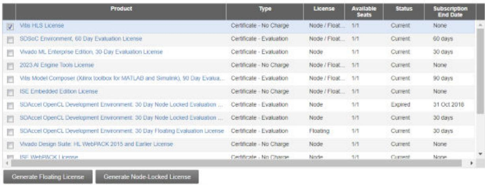
浮动许可证与节点锁定许可证有何区别？
- 弹出的对话框在浮动许可证与节点锁定许可证之间略有差异。生成浮动许可证时需要指定 Requested Seats（请求数量），而节点锁定许可证该数量固定为 1。
| ProductSelections | Product | Type | AvailableSeats | SubscriptionEnd Data | |
| Vits HLS License | No Charge | ||||
- 在"System Information"下点击 Select a host，选择已有主机或新增主机。必须选定一台主机才能分配许可证。新增主机的步骤如下：
a. Host Name：为主机指定一个名称。
b. Select OS type...：指定主机的操作系统。
c. Select host type...：根据所选操作系统，类型选项可能包括：
- Dongle Flex ID（加密狗 Flex ID）
- Disk Serial Number（磁盘序列号）：可在 Windows 命令行中输入
vol c:获取 - Ethernet MAC（以太网 MAC 地址）：可通过
ipconfig /all命令以 Ethernet adapter Physical Address 形式获取 - Solaris hostid
- 指定主机后点击 Next，进入 Review License Request 对话框。
- 核对所填信息后点击 Next 即可生成许可证文件，并收到"Congratulations"提示。您将收到一封包含所需许可证文件的邮件。
关于许可证文件的使用，请参阅 Vivado Design Suite User Guide: Release Notes, Installation, and Licensing (UG973) 中的"Managing Licenses"章节。有关许可证的通用信息，请访问 Licensing Solution Center。
行为变更说明🔗
下表列出了本版本相对于先前版本、在迁移时可能影响行为或流程的差异。
表 1：Vitis 软件开发平台行为变更摘要
| 范围 | 详情 |
|---|---|
| Vitis 统一 IDE | IDE 的元数据文件已重组，新增 _ide/.wsdata/version.ini 文件用于标注工作区版本。当打开较旧或缺少 version.ini 的工作区时，IDE 会提示用户更新工作区。此次重组旨在将可重新生成的文件保留在 .wsdata 文件夹中，便于用户将工作区纳入源代码版本管理工具。 |
| Vitis 统一 IDE | 之前位于 logs 目录下的 Python 日志文件 builder.py 已更名为 workspace_journal.py 并迁移至 _ide 目录，现在可通过 Vitis → Workspace Journal 菜单访问。 |
| Vitis 统一 IDE | IDE 现在允许用户在 UserConfig.cmake 中管理应用组件源代码的编译设置，而以往 IDE 会自动配置构建列表。 |
| Vitis 统一 IDE | Vitis IDE 的进程名由 Vitisng-ide 更改为 Vitis-ide。 |
| Vitis 统一 IDE | 用户自管理流程从 Explorer 视图扩展至 Vitis Explorer 视图。Vitis Explorer 可同时处理 GUI 自管理流程与用户自管理流程，并提供一致的流程窗口支持。 |
表 2：Vitis 加速软件开发行为变更摘要
| 范围 | 详情 |
|---|---|
| Vitis Base Platforms | VCK190 Base Platform 现在使用 Vivado Customizable Example Design (CED) Vitis Extensible Platform 来启动设计，而非从零开始搭建。此次更新使 Vitis 平台配置在 CED 与 Vitis Base Platforms 之间保持一致，未来版本将把相同方法应用于其他基础平台。 |
高层次综合的优势🔗
高层次综合（HLS）是一种自动化设计流程，它接受数字系统的抽象行为描述，并生成能够实现该行为的寄存器传输级（RTL）结构。
典型的 HLS 流程包含以下步骤：
- 在脑海中构思目标架构，使用 C/C++ 在高抽象层级编写算法
- 在行为层级验证功能正确性
- 使用 HLS 工具针对给定时钟频率与设计约束生成 RTL
- 验证生成 RTL 的功能正确性
- 在同一份源代码基础上探索不同架构
相比手工编写无错 RTL，HLS 能够更快速地产生高质量 RTL。
设计师需要在高层用 C/C++ 构建算法的宏观架构，这意味着必须仔细斟酌设计意图以及该设计与外部世界的交互方式。HLS 工具还需要时钟周期、性能约束等设计约束信息。
而诸如状态机、数据通路、寄存器流水线等微观架构决策在高层并不需要——这些细节可以交由 HLS 工具处理，通过提供设计约束即可生成经过优化的 RTL。
基于 C/C++ 算法定义的宏观架构，设计师还可以通过调整约束生成多套 RTL 方案，从而在性能与面积之间进行折中探索。因此同一份算法可以衍生出多种实现，设计师可以从中挑选最契合整体应用需求的那一个。
提升设计效率🔗
借助 HLS，设计师在更高抽象层级上工作，这意味着需要编写并输入到 HLS 工具的代码行数更少。由于编写 C++ 代码耗时更短、迭代更快，用户错误可以大幅减少，从而整体设计效率显著提升。设计师能够专注于在更高抽象层级上构思高效设计，而不必为机械性的 RTL 实现细节所困扰。
HLS 不仅提升了设计效率，也提升了验证效率。借助 HLS，测试平台同样在高层生成或编写，原始设计意图可以迅速得到验证。由于流程仍在 C/C++ 域内，设计师可以快速迭代经过验证的算法。算法在 C/C++ 验证通过后，同一份测试平台还可用于 HLS 工具生成的 RTL。此外，生成的 RTL 可以接入既有的 RTL 验证流程，以获得更全面的验证覆盖率。
使用 HLS 在设计与验证方面的优势总结如下：
- 在 C 层级开发并验证算法，使设计抽象于硬件实现细节之上。
- 通过 C 仿真验证设计，比传统 RTL 设计迭代更快。
- 基于同一份 C 源代码与 pragma 生成多种设计实现，探索设计空间并找到最优方案。
支持设计复用🔗
为高层次综合创建的设计是通用的、与具体实现无关的。这些源代码不像 RTL 那样与某个工艺节点或某个时钟周期绑定。仅需调整输入约束，无需修改源代码即可探索多种架构；而 RTL 设计则难以如此操作。设计师针对某个时钟周期编写 RTL 后，对衍生产品的任何改动，无论多么微小，都会引发一个新的、复杂的项目。而在 HLS 的更高层级上工作，设计师不必操心微观架构，可依赖 HLS 工具自动重新生成新的 RTL。
Vitis HLS 组件介绍🔗
HLS 组件由 C 或 C++ 函数综合而成，生成可在 AMD Versal™ 自适应 SoC、AMD Zynq™ MPSoC 或 AMD FPGA 器件的可编程逻辑（PL）区域中实现的 RTL 代码。HLS 组件与 Vivado Design Suite（用于综合、布局布线）以及 Vitis 核心开发套件（用于异构系统级设计与应用加速）紧密集成。
HLS 组件可用于开发并导出：
- Vivado IP：通过 Vivado Design Suite 集成到硬件设计中，并配合提供的软件驱动用于嵌入式系统的应用开发。
- Vitis 内核：用于 Vitis 应用加速开发流程，可与 AI Engine 图应用协同工作于异构计算系统，或用于数据中心加速。
提示：Vitis 内核具有特定的要求与限制，详见"Interfaces for Vitis Kernel Flow"；而 Vivado IP 的限制较少，提供更高的设计灵活性，详见"Interfaces for Vivado IP Flow"。
HLS 组件工具流程提供了一整套工具，用于在可编程逻辑上仿真、分析、实现并优化 C/C++ 代码，从而获得低延迟、高吞吐量的设计。无论您是使用命令行、Makefile 还是 Vitis 统一 IDE，为函数参数生成合适接口、为代码中的循环和函数插入流水线 pragma，都是 HLS 组件流程的基础。
以下是从 C++ 函数出发开发 HLS 组件的步骤：
- 基于"设计原则"对算法进行架构设计。
- （C 仿真）使用 C/C++ 测试平台验证 C/C++ 代码的功能。
- （C 综合）使用 v++ 编译器生成 RTL。
- （C/RTL 协同仿真）使用 C/C++ 测试平台验证生成的 RTL 代码。
- （打包）审阅 HLS 综合报告与实现时序报告。
- 重复上述步骤直到达到性能目标。
图 1：HLS 组件开发流程
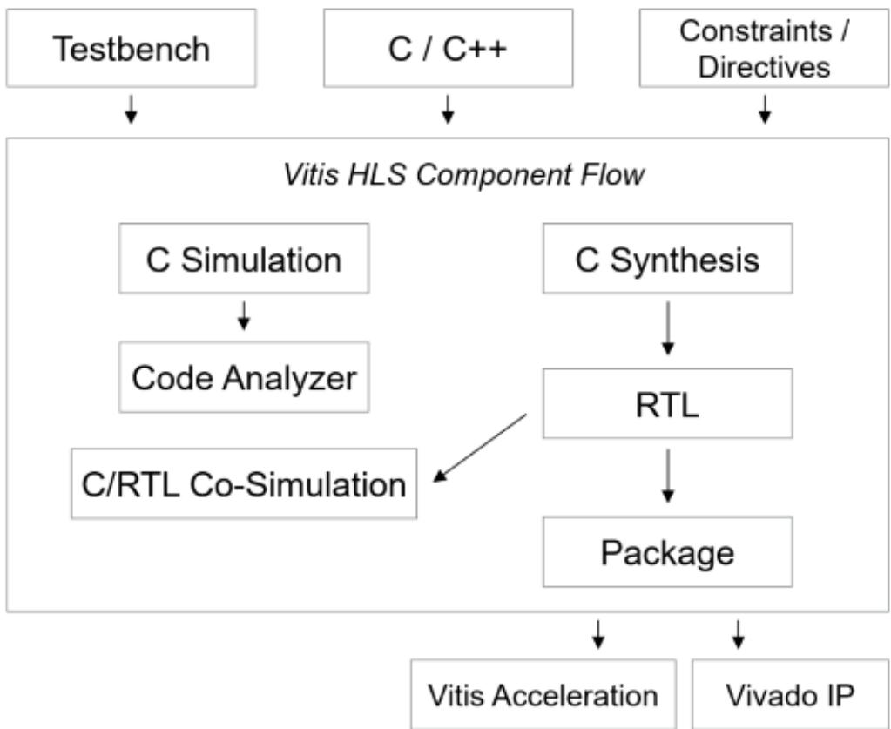
工具会根据目标流程、默认工具配置、设计约束以及您指定的优化 pragma 或指令来实现 HLS 组件。您可以使用优化指令修改并控制内部逻辑与 I/O 端口的实现方式，覆盖工具的默认行为。
以下是与 HLS 组件中 C++ 函数编码和综合相关的若干关键概念，详细内容将在后续章节展开：
- 硬件接口：HLS 组件中顶层函数的参数会被综合为接口和端口，多个信号组合在一起定义了硬件设计与外部组件之间的通信协议。v++ 编译器会自动定义接口，使用行业标准来指定所采用的协议。默认接口协议因 HLS 组件打包为 Vivado IP 还是 Vitis 内核而异。可以通过 INTERFACE pragma 或指令覆盖默认的接口分配。
- 控制 HLS 组件的执行：HLS 组件的执行模式由块级控制协议指定。HLS 组件可以带有用于启动/停止执行的控制信号，也可以仅在数据可用时才被驱动。作为设计师，您需要了解 HLS 设计的执行方式，详见"HLS 设计的执行模式"。
- 任务级并行：为了在生成的硬件上获得高性能，综合工具必须从顺序代码中推断并行性并加以利用。"设计原则"部分介绍了为 FPGA 平台编写高质量软件所需理解的三种主要范式。HLS 组件提供两种任务级并行（TLP）方式：通过 DATAFLOW pragma 指定，或使用 hls::task 对象显式创建，详见"HLS 的抽象并行编程模型"。
- 存储架构：
- CPU 中的存储架构是固定的，但开发者可以构建自己的存储架构，以优化可编程逻辑上运行应用的存储访问。
- 在 C++ 程序中，数组是用于保存或操作数据的基础数据结构；在硬件中，这些数组综合后实现为存储器或寄存器。存储器可实现为本地存储，也可实现为全局存储（通常是 DDR 或 HBM 存储器）。访问全局存储的延迟较高，可能耗费多个时钟周期；而访问本地存储通常很快，仅需一个或几个周期。
- C++ 程序中经常动态分配/释放存储器，但硬件无法综合此类操作。因此设计师需要清楚算法所需的精确存储容量。
- 应优化存储访问以降低全局存储访问开销。在 pragma 指引或检测到特定访问模式时，工具可执行存储突发访问或合并访问（例如通过扩展数据宽度将多次访问合并为一次）。突发访问能够隐藏存储访问延迟、提升存储带宽。
- 微观层级优化：
- C++ 程序中常常需要实现处理数据块的重复算法（例如信号或图像处理）。C/C++ 源代码往往包含多个循环或嵌套循环。v++ 编译器可在源代码的合适层级插入 pragma，对循环或嵌套循环进行展开或流水线化。更多信息请参阅"循环基础"。
- 在基于设计原则架构好算法并推断出并行性之后，仍需正确组合 PIPELINE、UNROLL、ARRAY_PARTITION 等微观 HLS pragma。PERFORMANCE pragma 或指令允许您为某段循环或嵌套循环定义单一的顶层性能目标，工具会自动推断所需的低层级 pragma 以达成目标。借助 PERFORMANCE pragma，用更少的 pragma 即可获得较好的 QoR，是一种直观驱动工具的方式。
为 HLS 重构 C++ 源代码🔗
下面这段程序包含一个用 C++ 编写、用于在 CPU 上执行的 compute() 函数。该程序在 CPU 上是顺序执行的。要使其在可编程逻辑上获得最优性能，需要对其进行重构。
#include <vector>
#include <iostream>
#include <ap_int.h>
#include "hls_vector.h"
#define totalNumWords 512
typedef unsigned char data_t;
data_t in[totalNumWords], Out[totalNumWords];
int main(int, char**) {
// 在 CPU 上初始化输入向量数组
for (int i = 0; i < totalNumWords; i++) {
in[i] = i;
}
compute(in, Out);
check_results();
return 0;
}
void compute(data_t in[totalNumWords], data_t Out[totalNumWords]) {
data_t tmp1[totalNumWords], tmp2[totalNumWords];
A: for (int i = 0; i < totalNumWords; ++i) {
tmp1[i] = in[i] * 3;
tmp2[i] = in[i] * 3;
}
B: for (int i = 0; i < totalNumWords; ++i) {
tmp1[i] = tmp1[i] + 25;
}
C: for (int i = 0; i < totalNumWords; ++i) {
tmp2[i] = tmp2[i] * 2;
}
D: for (int i = 0; i < totalNumWords; ++i) {
Out[i] = tmp1[i] + tmp2[i] * 2;
}
}
如果直接将此程序放到 FPGA 上运行，它仍会顺序执行，结果正确但没有任何性能提升。要在 FPGA 上获得更高性能，必须对程序进行重构以在硬件中引入并行性。并行性的例子包括：
- compute 函数可以在所有数据传输完成之前就开始执行
- 多个 compute 函数可以重叠运行，例如"for"循环可以在上一轮迭代结束前就开始下一轮迭代
- "for"循环内的操作可以并行处理多个字，而不必逐字处理
重新架构硬件模块🔗
在前述示例中，需要为基于 FPGA 的加速重新架构的是 compute() 函数。
compute() 函数中的循环 A 将输入乘以 3，并产生两条独立路径 B 与 C。循环 B 和 C 完成各自运算后将数据送入 D。这是一种对现实场景的简化表示：您有若干任务需要依次执行，而这些任务以网络形式相互连接，如下图所示。
图 2：模块架构
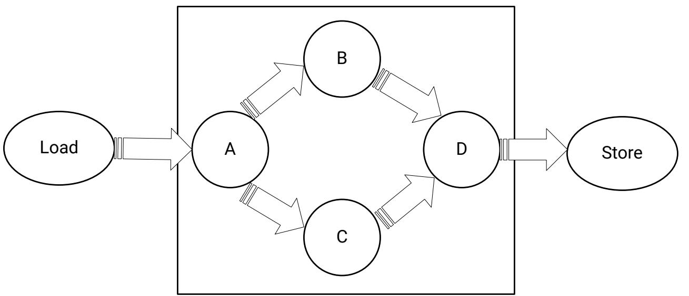
X27496-120522
重新架构硬件模块的关键要点与可行策略如下：
- 任务级并行在函数层级实现。为实现任务级并行，将循环封装到独立的函数中。原始的 compute() 函数被拆分为多个子函数。经验法则：顺序的函数可以并发执行，顺序的循环可以流水线化。
- 指令级并行通过从存储器一次读取 16 个 32 位字（即 512 位数据）来实现，可对所有这些字并行执行运算。hls::vector 类是一个 C++ 模板类，用于在多个样本上并发执行向量运算。
- compute() 函数需要重新架构为 load-compute-store 子函数，如下例所示。load 与 store 函数封装了数据访问，将各个 compute 函数执行的计算隔离开来。
- 此外，可以使用以 #pragma 开头的编译器指令将顺序代码改造为并行执行。
提示：这是 GitHub 上 Vitis-HLS Introductory Examples 中的 using_fifos 示例。
#include "diamond.h"
#define NUM_WORDS 16
extern "C" {
void diamond(vecOf16Words* vecIn, vecOf16Words* vecOut, int size) {
hls::stream<vecOf16Words> c0, c1, c2, c3, c4, c5;
assert(size % 16 == 0);
#pragma HLS dataflow
load(vecIn, c0, size);
compute_A(c0, c1, c2, size);
compute_B(c1, c3, size);
compute_C(c2, c4, size);
compute_D(c3, c4, c5, size);
store(c5, vecOut, size);
}
void load(vecOf16Words *in, hls::stream<vecOf16Words>& out, int size) {
Loop0:
for (int i = 0; i < size; i++) {
#pragma HLS PERFORMANCE target_ti=32
#pragma HLS LOOP_TRIPCOUNT max=32
out.write(in[i]);
}
}
void compute_A(hls::stream<vecOf16Words>& in,
hls::stream<vecOf16Words>& out1,
hls::stream<vecOf16Words>& out2, int size) {
Loop0:
for (int i = 0; i < size; i++) {
#pragma HLS PERFORMANCE target_ti=32
#pragma HLS LOOP_TRIPCOUNT max=32
vecOf16Words t = in.read();
out1.write(t * 3);
out2.write(t * 3);
}
}
void compute_B(hls::stream<vecOf16Words>& in,
hls::stream<vecOf16Words>& out, int size) {
Loop0:
for (int i = 0; i < size; i++) {
#pragma HLS PERFORMANCE target_ti=32
#pragma HLS LOOP_TRIPCOUNT max=32
out.write(in.read() + 25);
}
}
void compute_C(hls::stream<vecOf16Words>& in,
hls::stream<vecOf16Words>& out, int size) {
Loop0:
for (int i = 0; i < size; i++) {
#pragma HLS PERFORMANCE target_ti=32
#pragma HLS LOOP_TRIPCOUNT max=32
out.write(in.read() * 2);
}
}
void compute_D(hls::stream<vecOf16Words>& in1,
hls::stream<vecOf16Words>& in2,
hls::stream<vecOf16Words>& out, int size) {
Loop0:
for (int i = 0; i < size; i++) {
#pragma HLS PERFORMANCE target_ti=32
#pragma HLS LOOP_TRIPCOUNT max=32
out.write(in1.read() + in2.read());
}
}
void store(hls::stream<vecOf16Words>& in, vecOf16Words *out, int size) {
Loop0:
for (int i = 0; i < size; i++) {
#pragma HLS PERFORMANCE target_ti=32
#pragma HLS LOOP_TRIPCOUNT max=32
out[i] = in.read();
}
}
}
教程与示例🔗
要开始使用 Vitis HLS，您可以在以下位置找到教程与示例应用：
- Vitis HLS Introductory Examples（https://github.com/Xilinx/Vitis-HLS-Introductory-Examples）：小型代码示例，展示良好的设计实践、编码规范、常见应用的设计模式，以及最重要的——最大化应用性能的优化技术。所有示例都包含 README、hls_config.cfg 文件与 run_hls.tcl 脚本，方便您直接使用示例代码。
- Vitis Accel Examples Repository（https://github.com/Xilinx/Vitis_Accel_Examples）：展示 Vitis 工具与平台各项特性的示例集合。该仓库通过小型可运行示例，展示了与 Vitis 应用加速开发流程中主机代码和内核编程相关的具体场景，其中的内核代码可直接编译为 HLS 组件。
- Vitis Application Acceleration Development Flow Tutorials（https://github.com/Xilinx/Vitis-Tutorials）：通过可动手实践的教程，讲解工具流程与应用开发中的特定概念，包括如何使用 AMD Vitis™ 统一 IDE 创建 HLS 组件，并用于 Vitis 自底向上设计流程。
HLS 程序员指南🔗
简介🔗
本程序员指南提供了真实场景下的设计技术与硬件设计细节，帮助您充分挖掘 AMD Vitis™ HLS 工具的潜力。本指南详细介绍了在编写 C/C++ 代码以进行高层次综合到 RTL 时应采用的编程技术，以及在创建使用 AXI4 接口的 IP 时应遵循的最佳实践清单。本部分还详细说明了多种可提升代码性能的优化技术，从而改善最终硬件设计的资源占用与功能表现。
本部分包含以下章节：
- 设计原则
- HLS 的抽象并行编程模型
- 循环基础
- 数组基础
- 函数基础
- 数据类型
- 不支持的 C/C++ 构造
- HLS 设计的接口
- M_AXI 接口设计最佳实践
- 优化技术与故障排除提示
设计原则🔗
引言🔗
您使用 HLS 工具可能是为了借助 C/C++ 代码生成 RTL 来提升设计效率；也可能是希望将 C/C++ 算法的部分逻辑放到可编程逻辑中实现的定制硬件上加速执行。本章旨在帮助您理解从 C/C++ 编写的软件算法综合出硬件的过程。本文档介绍了设计与创建优质可综合软件所需的基本概念，使其能够通过高层次综合（HLS）工具成功转换为硬件。本文的讨论与具体工具无关，所介绍的概念适用于大多数 HLS 工具。对于有经验的设计师，回顾这些材料可以有效强化这些概念的重要性，帮助您理解如何开展 HLS 工作，尤其是如何组织 HLS 代码以实现高性能设计。
吞吐量与性能🔗
在可编程逻辑中实现为定制硬件的 C/C++ 函数，其运行速度可以显著快于传统 CPU/GPU 架构所能达到的水平，并能获得更高的处理速率和/或性能。首先需要明确这些术语在硬件加速语境下的含义。吞吐量定义为单位时间内执行的特定操作数量或单位时间内产生的结果数量，以"被产出事物"（汽车、摩托车、I/O 采样、存储字、迭代次数等）的单位时间数量来衡量。例如，"存储带宽"一词有时用于描述存储系统的吞吐量。类似地，性能则被定义为在更高吞吐量的同时保持更低的功耗。在当今世界，低功耗与高吞吐量同等重要。
架构至关重要🔗
要更好地理解定制硬件如何加速程序的某些部分，首先需要理解程序在传统计算机上是如何运行的。冯·诺依曼架构是当今几乎所有计算的基础——尽管它诞生于 70 多年前。该架构被认为对一大类应用是最优的，且具备良好的灵活性与可编程性。然而，随着应用需求不断压榨系统性能，CPU 开始支持多进程执行。多线程和/或多处理可以包括多个系统进程（例如同时执行两个或多个程序），也可以是由一个进程内多个线程组成。使用共享内存系统的多线程编程变得流行，因为它允许软件开发者在固定 CPU 架构下设计具备并行性的应用。但当多线程与不断提升的 CPU 主频仍无法满足数据处理速率时，多核 CPU 与超线程技术被引入以提升吞吐量。
这种通用灵活性在功耗与峰值吞吐量方面是有代价的。在智能手机、游戏与在线视频会议无处不在的今天，所处理数据的性质已经发生了变化。要获得更高吞吐量，必须把工作负载向存储器靠拢，和/或移入专用功能单元。因此，新的挑战在于设计一种新的可编程架构，使其在保持足够可编程性的同时获得更高性能与更低功耗。
现场可编程门阵列（FPGA）提供了这种可编程性，并提供足够的存储带宽，使其成为高性能、低功耗的解决方案。与执行程序的 CPU 不同，FPGA 可以被配置为定制硬件电路，其响应输入的方式与专用硬件完全一致。诸如 FPGA 这样的可重配器件包含粒度极其灵活的计算单元，从基础逻辑门到完整的算术逻辑单元（如数字信号处理 DSP 模块）应有尽有。在更高粒度上，用户可指定的、可组合的逻辑单元被称为"内核"，可被策略性地放置在 FPGA 上承担各种角色。可重配 FPGA 器件的这一特性允许创建定制宏观架构，使 FPGA 在利用应用专属并行性方面相比传统 CPU/GPU 拥有巨大优势。计算可以被空间映射到器件上，从而获得远超以处理器为中心的平台的操作吞吐量。当今最新的 FPGA 器件还可包含处理器核（基于 Arm）以及其他硬化 IP 模块，无需将其编程到可编程逻辑中即可使用。
可编程逻辑的三种范式🔗
虽然 FPGA 可以使用 Verilog 或 VHDL 等较低层级的硬件描述语言（HDL）进行编程，但目前已有多款高层次综合（HLS）工具，能够接收用 C/C++ 等更高层级语言编写的算法描述，并将其转换为 Verilog 或 VHDL 等较低层级的硬件描述语言，再由下游工具处理以编程 FPGA 器件。
这类流程的主要优势在于：您可以保留 C/C++ 等编程语言的优势，编写高效代码并转化为硬件。此外，编写优质代码是软件设计师的强项，比学习一门新的硬件描述语言要容易。然而，要获得可接受的综合质量（QoR），还需要额外工作——例如重写软件以帮助 HLS 工具达成性能目标。接下来几节将讨论如何首先识别一些宏观架构优化来组织程序，并聚焦于若干细粒度的微观架构优化以提升性能。
生产者-消费者范式🔗
回想软件设计师如何编写多线程程序——通常有一个主线程执行一些初始化步骤，然后派生若干子线程做并行计算，待所有并行计算完成后，主线程汇总结果并输出。程序员必须判断哪些部分可以派生出去并行计算，哪些部分必须顺序执行。这种 fork/join 型并行同样适用于 FPGA，但 FPGA 上提升吞吐量的一个关键模式是生产者-消费者范式。您需要将生产者-消费者范式应用于顺序程序，将其改造为可识别出能并行执行的功能，从而提升性能。
借助一个简单的问题陈述可以更好地理解这一分解过程。假设您有一份数据表，可从中将条目导入到一个列表。然后对列表中的每个条目进行处理。每个条目的处理大约耗时 2 秒。处理完成后，将结果写入另一份数据表，每个条目额外耗时 1 秒。如果输入表共有 100 个条目，则总耗时为 300 秒。目标是以某种方式分解该问题，识别出可能并行执行的任务，从而提高系统吞吐量。
图 3：程序工作流
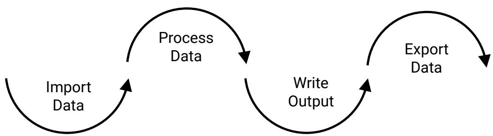
程序工作流（无重叠）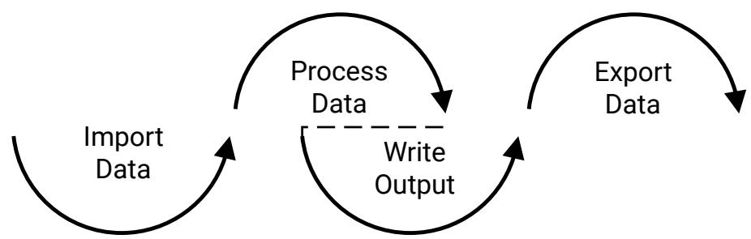
程序工作流（有重叠）X25607-073021
第一步是理解程序工作流并识别独立的任务或函数。四步工作流如上图"程序工作流（无重叠）"所示。在示例中，"写入输出"（步骤 3）任务与"处理数据"（步骤 2）任务相互独立。尽管步骤 3 依赖于步骤 2 的输出，但只要步骤 2 处理完任何一个条目，就可以立即将该条目写入输出文件——无需等待所有数据处理完才开始写入。这种任务执行的交错/重叠是一种非常常见的原则，如上图"程序工作流（有重叠）"所示。可以看到，工作完成得比无重叠时更快。由此可以认识到：步骤 2 是生产者，步骤 3 是消费者。生产者-消费者模式在 CPU 上对性能的影响有限。您可以交错执行各线程的步骤，但需要仔细分析以利用底层多线程与 L1 缓存架构，因此相当耗时。而在 FPGA 上，得益于定制架构，生产者与消费者线程可以同时执行且开销极小，从而显著提升吞吐量。
首先考虑的最简单情形是单一生产者与单一消费者通过有限大小缓冲区通信。若缓冲区已满，生产者可以选择阻塞/停顿或丢弃数据。一旦消费者从缓冲区取出一个条目，便通知生产者，生产者再次开始填充缓冲区。同样，若消费者发现缓冲区为空，则可停顿；一旦生产者将数据放入缓冲区，便唤醒沉睡的消费者。该方案可通过进程间通信实现，通常使用管程或信号量。不当的实现可能导致死锁——两个进程都停顿等待被唤醒。但在单一生产者与消费者的情形下，通信模式强烈映射到先进先出（FIFO）或乒乓缓冲（PIPO）实现。这类通道提供高效的数据通信，无需依赖信号量、互斥锁或管程进行数据传输。使用此类锁原语在性能上代价高昂，且使用与调试都较困难。PIPO 与 FIFO 之所以广受欢迎，正是因为它们避免了端到端的原子同步。
这种宏观架构优化——通过缓冲区封装通信——使程序员无需操心内存模型与其他非确定性行为（如竞态条件等）。此类设计所形成的网络纯粹是一种"数据流网络"：在输入端接收数据流，对其做某些处理，再以数据流形式输出。并行程序的复杂性被抽象掉了。"导入数据"（步骤 1）与"导出数据"（步骤 4）在最大化可用并行性方面也有一席之地。为了让计算与 I/O 成功重叠，将读取输入封装为第一步、将写出输出封装为最后一步至关重要。这使 I/O 与计算的重叠最大化。在计算步骤中间进行输入/输出端口的读写会限制设计中的可用并发。这是设计工作流时需要牢记的另一点。
最后，此类"数据流网络"的性能依赖于设计师能否持续向网络馈送数据，使数据不断流过系统。数据流中的中断会导致性能下降。一个很好的类比是在线游戏等视频流应用：实时高清视频持续流过系统，帧处理速率受到持续监控以确保满足预期质量。帧处理速率的任何放缓都会被玩家立即在屏幕上察觉。现在想象一下，能够在为大量玩家提供稳定帧率的同时，功耗远低于传统 CPU 或 GPU 架构——这正是硬件加速的甜蜜点。让数据在生产者与消费者之间持续流动至关重要。接下来，可以更深入地了解本节引入的流式范式。
流式数据范式🔗
流是一种重要抽象：它表示一个无界、持续更新的数据集，其中"无界"意味着"大小未知或无限"。流可以是数据（标量或缓冲块）序列，在源（生产者）进程与目的（消费者）进程之间单向流动。流式范式迫使您从数据访问模式（或序列）的角度思考。在软件中，对数据的随机内存访问几乎是免费的（忽略缓存开销），但在硬件中，顺序访问极具优势，可被转换为流。将算法分解为通过流式数据通信的生产者-消费者关系有诸多优势：它允许程序员以顺序方式定义算法，而并行性通过其他手段（如编译器）提取；任务间的同步等复杂性被抽象掉；它允许生产者与消费者任务同时处理数据——这是获得更高吞吐量的关键；另一个好处是代码更清晰、更简洁。
如前所述，在生产者-消费者范式中，数据传输模式强烈映射到 FIFO 或 PIPO 缓冲实现。FIFO 缓冲就是一个具有预定大小/深度的队列，最先进入队列的元素也最先被弹出。使用 FIFO 缓冲的主要优势在于：一旦生产者将数据放入缓冲，消费者进程即可立即访问其中的数据。使用 FIFO 缓冲的唯一问题在于：由于生产者与消费者之间生产/消费速率存在差异，尺寸不当的 FIFO 可能导致死锁，这通常发生在有多个生产者与消费者的设计中。乒乓缓冲是一种双缓冲，用于加速可将 I/O 操作与数据处理操作重叠的流程：一个缓冲用于保存一整块数据，使消费者进程看到一份完整（但较旧）的数据版本；同时在另一个缓冲中，生产者进程正在创建新（部分）版本的数据。当新数据块完成并有效后，消费者与生产者进程交替访问这两个缓冲。由此，乒乓缓冲的使用提升了器件的整体吞吐量，并有助于防止瓶颈。PIPO 的关键优势在于工具会自动匹配生产速率与消费速率，创建既高性能又无死锁的通信通道。需要指出的是，无论使用 FIFO 还是 PIPO，关键特征都相同：生产者向消费者发送或流送一块数据。数据块可以是单个值或一组 N 个值。块越大，所需存储资源越多。
下面是一个简单的求和应用，展示了经典的流式/数据流网络。该应用的目标是将两路随机数流成对相加并打印。前两个任务（任务 1 和 2）提供待加的随机数流，通过 FIFO 通道发送给求和任务（任务 3），后者从 FIFO 通道读取数值。求和任务再将输出发送给打印任务（任务 4）以发布结果。FIFO 通道在这些独立的执行线程之间提供异步缓冲。
图 4：流式/数据流网络
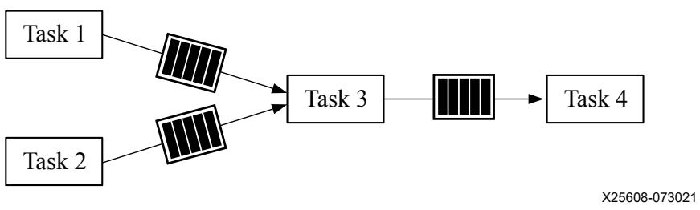
连接各"任务"的流通常实现为 FIFO 队列。FIFO 将并行行为从程序员处抽象出去，使其只需在任务活跃（被调度）时考虑一个时间"快照"。FIFO 使并行化更易实现，这在很大程度上归因于程序员在实现并行框架或容错方案时所需处理的变量空间更小。两个独立内核（见上例）之间的 FIFO 表现出经典的排队行为。对于纯流式系统，可使用排队论或网络流模型对其进行建模。此类数据流网络与流式优化的另一大优势在于：它可应用于不同粒度层级。您可以在每个任务内部、在任务或内核的系统层级设计这样的网络。实际上，您可以拥有一个流式网络，在其中层次化地实例化并连接多个流式网络或任务。
流水线范式🔗
另一种可实现更细粒度并行的优化是流水线。流水线是日常生活中常见的概念。一个很好的例子是汽车工厂的流水线：安装发动机、安装车门、安装车轮等每项特定任务通常由各自独立的工作站完成。各工作站并行执行各自的任务，每站处理一辆不同的车。一辆车完成一道工序后即移至下一站。任务完成时间的差异可通过缓冲（在两站之间暂存一辆或多辆车）和/或停顿（暂时停止上游站点）直至下一站可用予以缓解。
假设组装一辆车需要 A、B、C 三道工序，分别耗时 20、10、30 分钟。若三道工序都由单一站点完成，工厂每 60 分钟产出一辆车。使用三站流水线后，工厂在 60 分钟产出第一辆车，之后每 30 分钟产出一辆新车。由此可见，流水线并不缩短延迟（即单个物件通过整个系统的总时间），但能提升系统吞吐量（即第一个物件之后处理新物件的速率）。
流水线的吞吐量不会优于其最慢的一级，因此程序员应尝试在各阶段之间均衡工作与资源分配，使各阶段完成各自任务的时间相同。在前述汽车组装示例中，若 A、B、C 三道工序各耗时 20 分钟（而非 20、10、30 分钟），延迟仍为 60 分钟，但新车完成周期从 30 分钟降至 20 分钟。下图展示了一条假设的生产线，用于生产三辆车。假设 A、B、C 各耗时 20 分钟，顺序生产线需 180 分钟产出三辆车；而流水线生产线仅需 100 分钟。
产出第一辆车耗时 60 分钟，称为流水线的迭代延迟。第一辆车产出后，后续两辆车各耗时 20 分钟，这被称为流水线的启动间隔（Initiation Interval, II）。产出三辆车的总耗时为 100 分钟，称为流水线的总延迟——即总延迟 = 迭代延迟 + II ×（物件数 − 1）。因此，改善 II 可改善总延迟，但不影响迭代延迟。从程序员角度看，流水线范式可应用于设计中的函数与循环。经过初始建立开销后，理想的吞吐量目标是达到 II=1——例如初始建立延迟之后，流水线每个周期都有输出可用。在上例中，60 分钟初始建立延迟之后，每 20 分钟可产出一辆车。
图 5：流水线
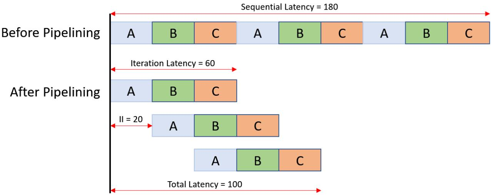
流水线是一种经典的微观架构优化，可应用于多个抽象层级。前面已介绍与生产者-消费者范式结合的任务级流水线。同一概念也适用于指令级。这其实是保持生产者-消费者流水线（与流）充满且忙碌的关键。生产者-消费者流水线只有在每个任务都以高速率生产/消费数据时才高效，因此需要指令级流水线（ILP）。
由于流水线在时间上重复使用相同资源执行同一函数，它被视为一种静态优化——因为它需要完全掌握每个任务的延迟。因此，低层级指令流水线技术无法应用于数据流型网络，因为此类网络中任务的延迟可能未知，是输入数据的函数。下一节将详细介绍如何利用所介绍的三种基本范式来建模不同类型的任务并行。
三种范式的结合🔗
函数与循环是用户程序中大多数优化的重点。当今的优化工具通常在函数/过程层级运作。每个函数可被转换为特定的硬件组件。每个这样的硬件组件类似于一个类定义，可以在最终硬件设计中创建并实例化多个对象（实例）。每个硬件组件又可由许多更小的预定义组件构成，后者通常实现加、减、乘等基础功能。函数可以调用其他函数，但不支持递归。较小且较少被调用的函数也可被内联到调用者中——展示了软件函数如何被内联。在此情形下，实现该函数所需资源被吸收到调用者函数的组件中，从而可能允许更好地共享公共资源。将设计构建为一组相互通信的函数，有助于在执行这些函数时推断并行性。
循环是程序中最重要的构造之一。由于循环体被迭代多次，这一特性很容易被利用以获得更好的并行性。对循环与循环嵌套可进行多种变换（如流水线化与展开）以实现高效的并行执行。这些变换既支持存储系统优化，也支持向多核与 SIMD 执行资源的映射。科学与工程应用中的许多程序表现为对大型数据结构的操作，可以是数组或矩阵上的简单逐元素操作，也可以是带有循环携带依赖的更复杂循环嵌套——例如循环迭代间的数据依赖。此类数据依赖会影响循环中可达的并行性。在许多此类情形下，必须重构代码，使循环迭代能够在现代并行平台上高效并行执行。
下图展示了 4 个连续任务（例如 C/C++ 函数）A、B、C、D 的不同重叠执行方式：A 为 B 和 C 在两个不同数组中产生数据，D 消费 B 和 C 在两个不同数组中产生的数据。假设此"菱形"通信模式要运行两次（两次调用），且这两次运行相互独立。
void diamond(data_t vecIn[N], data_t vecOut[N])
data_t c1[N], c2[N], c3[N], c4[N];
#pragma HLS dataflow
A(vecIn, c1, c2);
B(c1, c3);
C(c2, c4);
D(c3, c4, vecOut);
}
上面代码展示了这些函数如何被调用的 C/C++ 源码片段。任务 B 与 C 之间没有相互数据依赖。完全顺序执行对应于下图，其中黑圆点表示用于实现串行化的某种同步形式。
图 6：顺序执行 — 两次运行
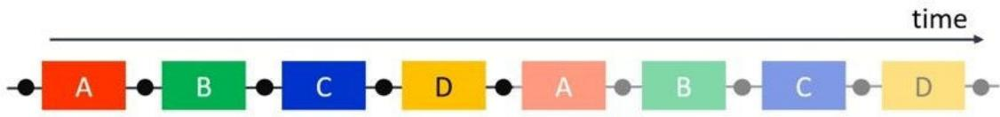
在菱形示例中，B 与 C 完全独立：它们既不通信，也不访问任何共享存储资源。若不要求共享计算资源，则它们可并行执行。这引出下图所示的运行内 fork-join 型并行：A 结束后 B 与 C 并行执行，D 等待 B 与 C 都完成，但下一次运行仍串行执行。
图 7：运行内的任务并行
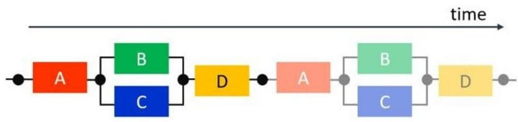
此类执行可概括为 (A; (B ‖ C); D); (A; (B ‖ C); D)，其中";"表示串行，"‖"表示完全并行。这种嵌套的 fork-join 并行对应于依赖任务的一个子类，即串-并行任务图。更一般地，任何依赖任务的有向无环图（DAG）都可用独立的 fork 与 join 型同步实现。同样重要的是，这恰恰是带多线程并使用共享内存的 CPU 上多线程程序的运行方式。
在 FPGA 上，您可以探索其他形式的并行。前述执行模式利用了调用内的任务级并行。那么能否重叠连续的运行呢？若它们真正独立，但每个函数（如 A、B、C、D）复用与上一次运行相同的计算硬件，您可能仍希望让 A 的第二次调用与 B、C 的第一次调用并行执行。这是一种跨调用的任务级流水线形式，对应下图。吞吐量由此提升，因为它受限于所有任务中的最大延迟，而非各任务延迟之和。每次运行的延迟不变，但多次运行的整体延迟降低。
图 8：带流水线的任务并行
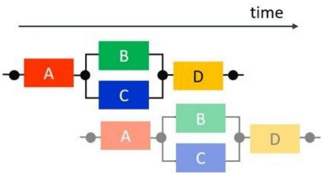
然而，当 B 的第一次运行从 A 存放第一次结果的存储中读取时，A 的第二次运行可能正在写入同一存储。为避免数据在被消费前被覆盖，可借助一种存储扩展形式——双缓冲或 PIPO——来实现这种交错。这由任务之间的黑圆点表示。
提升吞吐量并复用计算资源的一种高效技术是对运算符、循环和/或函数进行流水线化。若每个任务现在都能与自身重叠，则可同时实现运行内的任务并行与跨运行的任务流水线——两者皆为宏观并行示例。任务内部的流水线化则是微观并行示例。一次运行的整体吞吐量进一步提升，因为它现在取决于各任务中的最小吞吐量，而非最大延迟。最后，根据通信数据同步方式的不同——是全部产出后才同步（PIPO）还是更逐元素的方式（FIFO）——运行内还可能出现额外的重叠。例如在下图中，B 与 C 都更早启动并以流水线方式相对 A 执行，而 D 假设仍需等待 B 与 C 完成。运行内的最后这种重叠可通过 A 经 FIFO 流式访问（以无圆点的线表示）与 B、C 通信来实现。类似地，若通道为 FIFO 而非 PIPO，D 也可与 B、C 重叠。然而，与前述所有执行模式不同，使用 FIFO 可能导致死锁，因此这些流式 FIFO 需正确设定尺寸。
图 9：运行内任务并行与流水线、运行间流水线、任务内流水线
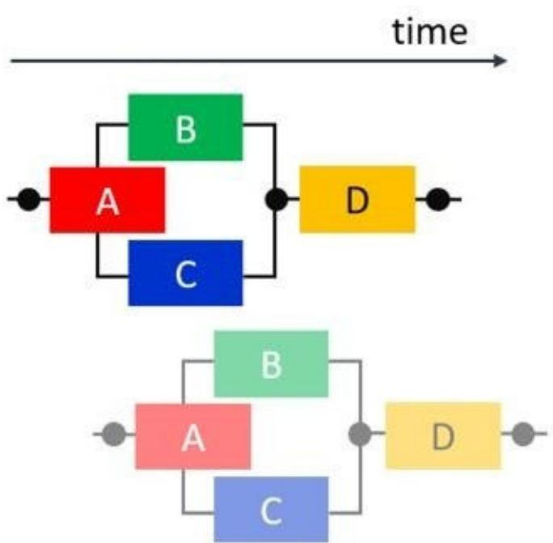
总而言之，前述三种范式展示了如何在设计中实现并行，而无需多线程和/或并行编程语言的复杂性。生产者-消费者范式与流式通道相结合，使小到大规模系统都易于组合。如前所述，流式接口允许并行任务乃至层次化数据流网络的轻松耦合。这部分得益于编程语言（C/C++）支持此类规约的灵活性，以及将其实现到当今 FPGA 器件异构计算平台上的工具。
结论 — 性能提升的要诀🔗
本文档所介绍的设计概念有一个核心原则：一种并行计算模型，它倾向于在模块化单元或任务内封装状态并顺序执行，从而简化并行编程的编程模型。任务再通过流（用于同步与通信）相互连接。流可以是不同类型的通道，如 FIFO 或 PIPO。状态/逻辑的 compartmentalization 使工具（如编译器与调度器）更容易判断应用的哪些部分在何处何时运行。基于流的处理日益流行的第二个原因是：它打破了传统基于多线程的"fork/join"并行执行观。通过启用任务级流水线与指令级流水线，运行时可以执行比当今 fork/join 模型多得多的并发动作。这种额外并行性对于充分利用当今 FPGA 器件的硬件至关重要。与启用流水线并行一脉相承，流式处理还使设计师无需担心锁、竞态条件等使并行编程困难的问题即可构建并行应用。
最后，以下高层级行动清单被推荐作为在可重配 FPGA 平台上获得性能的处方：
-
为 CPU 编写的软件与为 FPGA 编写的软件存在根本差异。 您无法在不牺牲性能的情况下编写可在 CPU 与 FPGA 平台间移植的代码。因此，请接受而非抗拒：您必须为 FPGA 编写显著不同的软件。
-
从项目伊始就建立一套流程，能够对源代码改动进行功能验证。对照参考模型测试软件或使用黄金向量是常见做法。
-
首先聚焦设计的宏观架构。 考虑使用生产者-消费者范式对解决方案建模。
-
一旦确定设计的宏观架构，绘制期望的活动时间线：横轴为时间，标出您期望各函数在多次迭代（或调用）中相对彼此的执行时机。这能让您感知设计中的预期并行性，并可与最终达成结果对比。HLS GUI 常可用于可视化所达成的并行性。
-
只有在宏观架构与活动时间线都明确建立后，才开始编码或重构程序。
-
作为一般规则，HLS 编译器仅从函数调用推断任务级并行。 因此，需要在硬件中并发运行的顺序代码块（如循环）应放入专用函数中。
-
将原始算法分解/划分为更小的组件，组件间通过流通信。这能让您了解设计中数据如何流动。
- 较小的模块化组件的优势在于：需要时可复制以提升并行性。
- 避免使用位宽极宽的通信通道。将此类宽通道分解为若干较窄的通道有助于 FPGA 上的实现。
-
大型函数（手写或由内联较小函数生成）可能具有非平凡的控制路径，难以被工具处理。控制路径较简单的较小函数有助于 FPGA 上的实现。
-
力求在每个函数内只有一个循环嵌套（要么循环边界固定且可被 HLS 工具推断，要么由您手动向 HLS 工具提供循环次数信息）。这极大地便利了吞吐量的测量与优化。虽然并非对所有设计都适用，但对绝大多数情况是一种良好做法。
-
吞吐量 — 对设计的每个阶段所需处理速率有整体愿景很重要。了解这一点会影响您如何为 FPGA 编写应用。
- 思考设计中的关键路径（例如 ABD 或 ACD 等关键任务级路径），研究该路径的哪一部分可能成为瓶颈。通过仿真设计，观察各任务如何被流水线化，以及路径的不同分支在吞吐量上是否不对齐。HLS GUI 工具和/或仿真波形查看器可用于可视化此类吞吐量问题。
- 基于流的通信允许消费者在生产者开始生产后即开始处理，从而实现重叠执行（进而提升并行性与吞吐量）。
-
为使生产者与消费者任务持续顺畅运行，使用流水线化等技术与恰当的流尺寸优化每个任务的执行速度，使其尽可能快。
-
思考流式通道关于同步的粒度（与开销）。 使用 PIPO 通道可让您无死锁之忧地重叠任务执行；而显式手动流式 FIFO 通道允许比 PIPO 更早开始重叠执行，但需谨慎调整 FIFO 尺寸以避免死锁。
-
学习可综合的 C/C++ 编码风格。
-
使用 HLS 编译器生成的报告来指导优化过程。
请将上述清单放在手边，以便不时参考。它总结了构建满足性能目标的设计所需的全部设计活动。
接下来需要考虑的设计另一重要方面是加速函数或内核的接口。内核与外部世界的接口是最终系统设计的重要元素。您的内核可能需要插入更大的设计中，或与大型内核系统中的其他内核通信，或与系统外的存储或设备通信。"M_AXI 接口设计最佳实践"提供了设计加速内核外部接口时需考虑事项的另一份清单。
HLS 的抽象并行编程模型🔗
为实现高性能硬件，HLS 工具必须从顺序代码中推断并行性并加以利用以获得更高性能。这并非易事。此外，良好的软件设计常使用运行时类型信息（RTTI）、递归、动态内存分配等成熟规则与实践，而许多此类技术在硬件中没有直接对应物，给 HLS 工具带来挑战。这通常意味着现成软件无法被高效地转换为硬件。至少，需要检查此类软件中不可综合的构造，并重构代码使其可综合。即便软件程序能够被自动转换（综合）为硬件，您仍需理解在 FPGA 器件上运行优质软件的最佳实践以辅助工具。
"设计原则"部分介绍了为 FPGA 平台编写优质软件所需理解的三种主要范式：生产者-消费者、流式数据与流水线。这些范式所依赖的底层并行编程模型如下：
- 设计/程序需被构造为一组任务集合，任务之间通过通信链路（又称通道）发送消息进行通信。
- 任务可被组织为控制驱动（等待某信号启动执行）或数据驱动（通道上数据的存在驱动任务执行）。
- 任务由一个可执行单元构成，拥有一些本地存储/内存以及一组输入/输出（I/O）端口。
- 本地内存包含私有数据——例如任务拥有独占访问权的数据。
- 对此私有内存的访问称为本地数据访问——如存储在块 RAM/URAM 中的数据，这类访问很快。任务将其本地数据的副本发送给其他任务的唯一途径是其输出端口；反之，它只能通过输入端口接收数据。
- I/O 端口是一种抽象：它对应于任务用于发送或接收数据的通道，由模块的调用者连接；若为顶层端口，则在系统集成层级连接。
- 通过通道发送或接收的数据称为非本地数据访问。通道是连接一个任务输出端口与另一任务输入端口的数据队列。
- 通道被假定为可靠的，并具有以下行为：
- 对于 FIFO，生产者输出端写入的数据会以相同顺序在消费者输入端被读取；对于 PIPO，数据可以随机顺序读/写。
- 不会丢失任何数据值。
- 通道支持阻塞与非阻塞读/写语义，详见"HLS 流库"。
图 10：阻塞/非阻塞语义
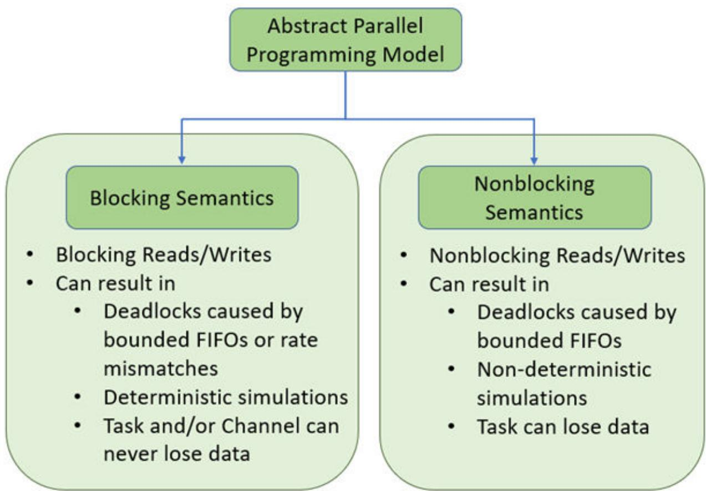
当模型使用阻塞语义时，对空通道的读取会导致读取进程阻塞；类似地，对满通道的写入会导致写入进程阻塞。由此产生的进程/通道网络呈现出不依赖于计算时序与通信延迟的确定性行为。此类模型已被证明便于对嵌入式系统、高性能计算系统、信号处理系统、流处理系统、数据流编程语言及其他计算任务进行建模。
由于通道队列（当通道为 FIFO 时）尺寸不足和/或生产者与消费者之间生产速率不同，阻塞式建模可能导致死锁。若模型使用非阻塞语义，对空通道的读取会读到未初始化数据或重新读取上一个数据项；类似地，对满队列的写入可能丢失数据。为避免此类数据丢失，设计必须在执行读/写前先检查队列状态。但这会使此类模型的仿真变为非确定性，因为它依赖于基于通道运行时状态所做的决策，从而使此类模型结果的验证更具挑战性。
Vitis HLS 抽象并行编程模型同时支持阻塞与非阻塞语义。
控制驱动与数据驱动的任务🔗
以此抽象模型为基础，可用两种任务级并行（TLP）模型来组织与设计应用。TLP 可以是数据驱动或控制驱动，也可在单一设计中混合控制驱动与数据驱动任务。两种模型的主要差异如下：
- 若您的应用是纯数据驱动的、无需与外部存储交互、且函数可无数据依赖地并行执行，则数据驱动 TLP 模型最为合适。您可以设计一个始终运行、无需控制、仅对数据做出反应的纯数据驱动模型。详见"数据驱动的任务级并行"。
- 若您的应用需要与外部存储交互，且并行执行的任务之间存在数据依赖，则控制驱动 TLP 模型最为合适。Vitis HLS 会推断任务间的并行性并创建合适的通道（由您定义），使这些函数在执行时可以重叠。控制驱动 TLP 模型在 Vitis HLS 中也被称为数据流优化，详见"控制驱动的任务级并行"。
接下来几节介绍这些主要建模选项。您可使用其中任意一种，以 C++ 编写源代码来优化程序在并行硬件上的执行。
数据驱动的任务级并行🔗
数据驱动的任务级并行采用任务-通道建模风格，要求您静态地显式实例化并连接任务与通道。任务不受任何函数调用/返回语义控制，而是始终运行、在其输入流上等待数据。此建模风格中的任务通常只有流类型的输入与输出。不过，您可以在 TLP 设计中引入指向数组的指针和标量 I/O，详见"DTLP 中标量/存储接口的支持"。
数据驱动 TLP 模型中的任务在有数据待处理时执行。在 Vitis HLS 中，C 仿真过去只能看到顺序语义与行为。借助数据驱动模型，仿真时即可观察到并行任务的并发本质及其通过 FIFO 通道的交互。
在 Vitis HLS 工具中实现数据驱动 TLP 使用简单的类来建模任务（hls::task）与通道（hls::stream / hls::stream_of_blocks）。
重要：虽然 Vitis HLS 支持在顶层函数中使用 hls::task，但不能在顶层函数的接口中使用。
考虑下面这个简单的任务-通道示例：
#include "test.h"
void splitter(hls::stream<int> &in, hls::stream<int> &odds_buf,
hls::stream<int> &evens_buf) {
int data = in.read();
if (data % 2 == 0)
evens_buf.write(data);
else
odds_buf.write(data);
}
void odds(hls::stream<int> &in, hls::stream<int> &out) {
out.write(in.read() + 1);
}
void evens(hls::stream<int> &in, hls::stream<int> &out) {
out.write(in.read() + 2);
}
void odds_and_evens(hls::stream<int> &in, hls::stream<int> &out1,
hls::stream<int> &out2) {
hls_thread_local hls::stream<int> s1; // 连接 t1 与 t2 的通道
hls_thread_local hls::stream<int> s2; // 连接 t1 与 t3 的通道
// t1 无限运行函数 splitter，输入为 in，输出为 s1 与 s2
hls_thread_local hls::task t1(splitter, in, s1, s2);
// t2 无限运行函数 odds，输入为 s1，输出为 out1
hls_thread_local hls::task t2(odds, s1, out1);
// t3 无限运行函数 evens，输入为 s2，输出为 out2
hls_thread_local hls::task t3(evens, s2, out2);
}
特殊的 hls::task C++ 类的特点：
- 它是源代码中的新对象声明，需要特殊限定符。hls_thread_local 限定符用于在实例化函数（示例中的 odds_and_evens）的多次调用之间保持对象（及底层线程）存活。
- hls_thread_local 限定符仅用于确保数据驱动 TLP 模型的 C 仿真与 RTL 仿真行为一致。在 RTL 中，这些函数一旦启动便已处于始终运行模式。为确保 C 仿真期间行为一致，需要 hls_thread_local 限定符来确保每个任务只启动一次，并在多次调用时保持相同状态。没有该限定符，函数的每次新调用都会产生新状态。
- 任务对象隐式管理一个线程，该线程无限运行某个函数，并向其传递一组必须为 hls::stream 或 hls::stream_of_blocks 的参数。
提示：不支持其他类型的参数。尤其是常量值也不能作为函数参数传递。若需将常量传递到任务体中，请将函数定义为模板函数，并将常量作为模板参数传递。
- 所提供的函数（示例中的 splitter/odds/evens）被称为任务体，它被隐式地包裹在一个无限循环中，以确保任务持续运行并等待输入。
- 所提供的函数可包含流水线化循环，但它们必须是可冲刷流水线（FLP）以防止死锁。工具会自动为给定流水线化循环或函数选择合适的流水线风格。
重要：hls::task 不应被视为函数调用——而应被视为静态绑定到通道的持久实例。因此，您有责任确保对任何包含 hls::task 的函数的多次调用被唯一化，或这些调用使用相同的 hls::task 与通道。
通道由特殊的模板化 hls::stream（或 hls::stream_of_blocks）C++ 类建模。此类通道具有以下属性：
- 在数据驱动 TLP 模型中，hls::stream
- 流的读/写是顺序的。这意味着一旦从 hls::stream<> 读取一个数据项，同一数据项不能被再次读取。

提示：对不同流的访问之间没有顺序约束（例如，对一个流的写与对另一个流的读，其顺序可被调度器改变）。
- 流可在局部或全局定义。全局作用域中定义的流遵循与任何其他全局变量相同的规则。
- 流（下面示例中的 s1 和 s2）同样需要 hls_thread_local 限定符，以在实例化函数（下面代码示例中的 odds_and_evens）的多次调用之间保持相同流存活。
下图展示了上述代码示例在 Vitis HLS 中的图形化表示。图中绿色箭头为 FIFO 通道，蓝色箭头表示实例化函数（odds_and_evens）的输入与输出。任务以蓝色矩形框表示。
图 11：hls::task 示例的数据流图
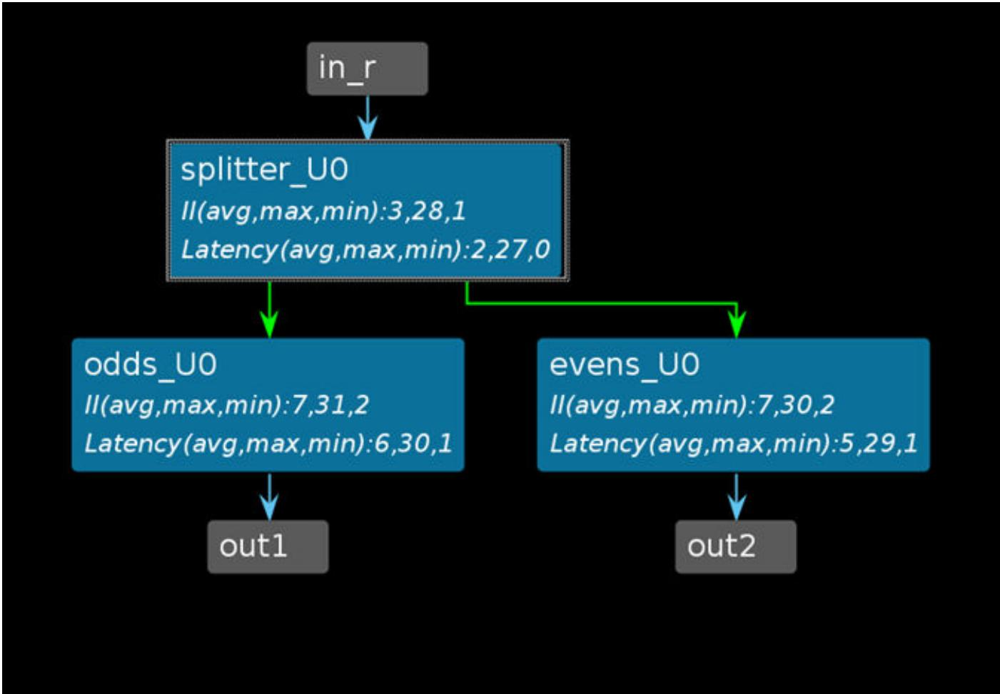
由于对空流的读取是阻塞读取，死锁可能因以下原因发生：
- 设计本身：进程的生产与消费速率不平衡。
- 在 C 仿真期间，死锁只能由进程环或从顶层输入开始、试图从空通道读取的进程链引发。
- 在 C/RTL 协同仿真与硬件（HW）运行期间，死锁可能由试图写满通道和/或读空通道的进程环引发。
- 测试平台：提供的数据少于生成测试平台在检查计算结果时所期望的所有输出所需的数据量。
因此，当设计包含 hls::task 时会自动实例化死锁检测器。死锁检测器检测到死锁后会停止 C 仿真。进一步调试使用 gdb 等 C 调试器，查看仿真的 hls::tasks 都阻塞在哪里、试图从空通道读取。使用 Vitis HLS GUI 很容易做到这一点，如调试死锁的 handling_deadlock 示例所示。
总之，如果您的设计需要完全数据驱动、纯流式行为且无任何控制，则推荐使用 hls::task 模型。此类模型也适用于建模反馈与动态多速率设计。设计中存在任务的循环依赖时即出现反馈。动态多速率模型——即生产者写数据或消费者读数据的速率依赖于数据——只能由数据驱动 TLP 处理。GitHub 上的 simple_data_driven 设计即为一例。
提示：静态多速率设计——即生产者写数据或消费者读数据的速率与数据无关——可由数据驱动与控制驱动 TLP 共同管理。例如，生产者每次调用向流中写两个值，消费者每次调用读一个值。
控制驱动的任务级并行🔗
控制驱动 TLP 适用于依赖 C++ 顺序语义而非持续运行线程来建模并行。例如：可以并发流水线方式执行的函数（可能在循环内），或参数不是通道而是 C++ 标量与数组变量（既可指片上存储也可指片外存储）的情形。对于此类模型，Vitis HLS 在可能的地方引入并行性，同时保持原始 C++ 顺序执行所获得的行为。控制驱动 TLP（或数据流）模式提供：
- 后续函数可在前一函数结束前启动
- 函数可在其结束前重新启动
- 两个或多个顺序函数可同时启动
使用数据流模型时，Vitis HLS 通过在任务之间自动插入同步与通信机制来实现 C++ 代码的顺序语义。
数据流模型接收这一系列顺序函数，并创建由并发进程构成的任务级流水线架构。工具通过推断并行任务与通道来完成。设计师通过指定 DATAFLOW pragma 或指令来指定以数据流风格建模的区域（如函数体或循环体），如下所示。工具扫描循环/函数体，将并行任务提取为并发进程，并在这些进程之间建立通信通道。设计师还可指导工具选择通道类型——例如 FIFO（hls::stream 或 #pragma HLS STREAM）、PIPO 或 hls::stream_of_blocks。数据流模型是提升设计吞吐量与延迟的强大方法。
要理解 Vitis HLS 如何将您的 C++ 代码转换为数据流模型，请参阅下面所示的 simple_fifos 示例。该示例使用 DATAFLOW pragma 将数据流模型应用于顶层 diamond 函数。
#include "diamond.h"
void diamond(data_t vecIn[N], data_t vecOut[N])
{
data_t c1[N], c2[N], c3[N], c4[N];
#pragma HLS dataflow
funcA(vecIn, c1, c2);
funcB(c1, c3);
funcC(c2, c4);
funcD(c3, c4, vecOut);
}
在上例中，有四个函数：funcA、funcB、funcC、funcD。funcB 与 funcC 之间无任何数据依赖，因此可并行执行。funcA 从非本地存储（vecIn）读取，必须先执行；类似地，funcD 写入非本地存储（vecOut），必须最后执行。
下图显示了该设计未使用数据流模型时的执行画像。测试平台对 diamond 函数进行了三次调用。funcA、funcB、funcC、funcD 顺序执行。因此每次对 diamond 的调用共耗时 475 个周期，如下图所示。
图 12：未使用数据流的 Diamond 示例
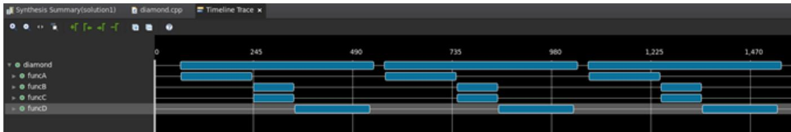
在下图中，应用数据流模型且设计师选择使用 FIFO 作为通道时，所有函数都被控制器立即启动，并因等待输入而停顿。输入一到达即被处理并送出。由于这种重叠，每次对 diamond 的调用现在仅耗时 275 个周期，如下图所示。关于此示例可获得的并行类型更详细讨论，请参阅"三种范式的结合"。
图 13：使用数据流的 Diamond 示例
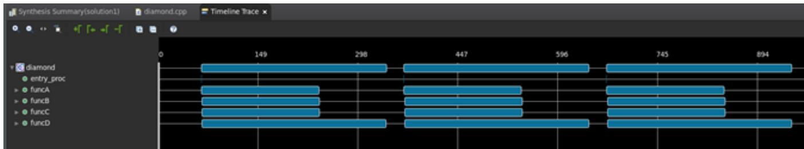
此类并行无法在不增加硬件利用率的情况下获得。当某个区域（如函数体或循环体）被识别为应用数据流模型的区域时，Vitis HLS 会分析该函数或循环体，并从 C++ 变量（如标量、数组或用户自定义通道如 hls::streams 或 hls::stream_of_blocks）创建独立通道来建模数据流区域中的数据流动。这些通道可以是对标量变量的简单 FIFO，也可以是对数组等非标量变量的乒乓（PIPO）缓冲（或在需要 FIFO 与 PIPO 行为组合并对块显式加锁时使用 stream of blocks）。
每个通道可包含额外信号以指示通道满或空。通过设置独立的 FIFO 和/或 PIPO 缓冲，Vitis HLS 使每个任务可独立执行，吞吐量仅受输入与输出缓冲可用性的限制。这允许比普通流水线实现更好的任务执行重叠，但代价是额外的 FIFO 或块 RAM 寄存器（用于乒乓缓冲）。
提示：此重叠执行优化只有在运行设计的协仿真后才可见——静态时不可观测（尽管 C 综合后在数据流查看器中很容易想象）。
数据流模型不限于进程链，可用于任何有向无环图（DAG）结构，或使用 hls::streams 时的循环结构。它可产生两种不同的重叠形式：进程以 FIFO 连接时在迭代内部的重叠，以及以 PIPO 与 FIFO 连接时跨不同迭代的重叠。这潜在地比静态流水线方案性能更好。它以使用 FIFO 和/或 PIPO 的分布式握手架构取代了严格的、集中控制的流水线停顿哲学。将集中式控制结构替换为分布式结构还有利于控制信号（如寄存器使能）的扇出，使其分布到各进程的控制结构中。GitHub 上的 Task Level Parallelism/Control-Driven 示例提供了这些概念的更多示例。
数据流区域编码风格🔗
pragma HLS dataflow 所在的代码区域被称为"数据流区域"。它包括所在循环或函数体内的所有语句（赋值、条件、循环、函数调用……）。🔗
本节同时介绍：
- 一种数据流区域编码风格，允许 Vitis HLS 无歧义地推断并行进程与通道网络，并确保"所见即所得"（又称 WYSIWYG 编码风格）。
- 更高级的数据流编码风格，需在 Vitis GUI 中检查综合结果以确保达成所需的数据流结构。
上一节中的 diamond 函数是遵循该编码风格（又称"规范形式"）的示例。下例由于在数据流区域中使用了函数调用以外的代码，属于"非规范"形式：
void noncanonical(int Input0, int Input1[], int &Output0, int Output1[]) {
#pragma HLS dataflow
int C0, C1[N], C2;
C0 = Input0 * 3;
for (int i = 0; i < N; i++) {
C1[i] = Input1[0] + 2;
}
func2(C0, C1, C2);
func3(C2, Output0, Output1);
}
规范编码风格产生的数据流网络与源代码中的函数调用直接对应，因此在性能与结构上对用户而言更具可预测性。非规范示例要求 Vitis HLS 通过分析循环、函数调用、控制，并按数据流规则将其分组为函数调用来创建网络，对用户而言不够直接。无论使用哪种形式，建议使用 Vitis IDE HLS 数据流查看器与协仿真时间线追踪来检查实现及其性能。
Vitis HLS 还会对非规范数据流语法发出若干消息。默认情况下消息为警告，但可通过 syn.dataflow.strict_mode 配置选项改为错误或禁用，详见"数据流配置"。
WYSIWYG 编码风格🔗
本节定义规范数据流编码风格，它产生的数据流网络与源代码一一对应。更高级的特性（下述限制更宽松）在下一节介绍。非规范数据流区域会被 Vitis HLS 在保持循环与函数调用之间并发性的同时，通过分组指令与控制转换为规范数据流区域。
dataflow pragma 可应用于两种不同上下文：
- 在函数内部（又称函数数据流区域）。
- 在一种特殊 for 循环内部（又称循环数据流区域），需满足：
- 循环是函数体内的唯一语句。
- 循环计数器在循环头中声明，类型为 int。
- 循环头中初值设为任意非负数值整数常量。
- 退出条件为与一个非负数值常量或包含该循环的函数的标量参数的"<"比较。
- 循环变量以任意正数值整数常量递增。
- 除循环计数器外，变量声明都在循环体内。
WYSIWYG 编码风格要求该函数或 for 循环体只能包含以下序列：
- 不带初始化的局部变量声明，包括构造函数自动执行的初始化。
- 这些变量（又称"通道"）必须在产生它们的进程中初始化。
- 对于具有无法重定义的默认构造函数的标准数据类型（如 std::complex），可使用 no_ctor 属性避免初始化，例如：
std::complex<float> arr[SIZE] __attribute__((no_ctor)); - 子函数调用。
- 涉及类型转换或地址计算的参数不属于规范数据流，可能导致额外进程或不同网络结构。
- hls::task 实例化。
换言之，"规范"数据流区域内部不能有任何控制。if-then-else 语句与循环等控制结构会自动转换为进程，从而需要 Vitis HLS 按前述方式推断网络。
这些被调用的子函数与 hls::task 可以是：
- 顺序函数或流水线化函数，或
- 函数数据流区域，或
- 循环数据流区域。
数据流函数的推荐风格示例：
void dataflow(int Input0, int Input1[], int &Output0, int Output1[]) {
#pragma HLS dataflow
int C1[N], C2; // 不做初始化
UserDataType C0 __attribute__((no_ctor)); // 若默认构造函数非空，必须使用 no_ctor
func1(Input0, Input1, C0, C1); // 读 Input0、读 Input1、写 C0、写 C1
func2(C0, C1, C2); // 读 C0、读 C1、写 C2
func3(C2, Output0, Output1); // 读 C2、写 Output0、写 Output1
}
循环内数据流的推荐风格示例（注意 N 可以是常量，也可以是如本例所示的数据流区域输入参数）：
void dataflow(int Input0, int Input1[], int &Output0, int Output1[], int N)
for (int i = 2; i < N; i += 2) {
#pragma HLS dataflow
int C1[N], C2; // 不做初始化
UserDataType C0 __attribute__((no_ctor)); // 若默认构造函数非空，必须使用 no_ctor
func1(Input0, Input1, C0, C1, i); // 读 Input0、读 Input1、写 C0、写 C1
func2(C0, C1, C2, i); // 读 C0、读 C1、写 C2
func3(C2, Output0, Output1, i); // 读 C2、写 Output0、写 Output1
}
}
注意：循环所在的函数不需要 dataflow pragma，但必须只包含该循环。
关于数据流函数或区域体的进一步语义限制，包括对这些段内控制结构与数据依赖管理方式的特定限制：
- 局部变量必须是非静态标量或数组：
- 在规范数据流中，静态变量可在（非数据流）进程内声明。但不应存在该进程的多个实例，否则对静态变量的访问会在这些实例之间形成隐藏通信通道。
- 规范区域中的 hls::task 实例：
- 必须声明为 hls_thread_local（如
hls_thread_local hls::task t1(proc, arg1, arg2, arg3);）。 - 数据流区域内的 hls::stream 与 hls::stream_of_blocks 实例同理（注意 hls_thread_local 类似于 static，但在此上下文中更合适，因为它不意味着在具有相同函数体的多个 hls::task 之间共享单一变量实例）。
- 进程之间必须使用局部变量（又称"通道"）——标量、数组或流式通道（hls::streams 与 hls::stream_of_blocks）——传输数据。除非使用下面讨论的高级特性与例外：
- 数组与流式通道必须只有一个写进程与一个读进程，且写者在词法上先于读者：
- 若数组标记了
#pragma HLS bind_storage variable=... type=ram_1wnr，则可有多读者。此时编译器会自动复制该变量。 - 标量通道可有多写者与多读者（顶层标量除外），并自动转换为 FIFO 通道，每个通道一个生产者一个消费者。这些通道可以：
- 要么在函数体内有显式、自动生成的 FIFO 写与读操作（称为"标量传播 FIFO"）；
- 要么由生产者的 ap_done 自动写入、由消费者的 ap_ready 自动读取（称为"任务级 FIFO"）。
- 若数组标记了
- 通道不能有循环携带依赖：
- 例外在下文讨论，尤其是流式反馈通道是允许的，以生成循环数据流网络。
- 顶层内核参数也可传递给进程，但有不同限制，因为：
- 进程之间不能使用顶层内核参数进行通信。
- 对于映射到 m_axi 接口的顶层数组参数，写进程（若有）必须在读进程（若有）之后，因为 Vitis HLS 假设顶层 m_axi 数组无携带依赖，即内核每次执行都会在 DRAM 中接收一个新的 m_axi 映射缓冲。
嵌套数据流区域的陷阱🔗
若除函数/区域层次最深层（如数据流图的叶节点）外存在任何非数据流区域，嵌套数据流区域的性能可能大受影响。这是因为顺序 FSM 不允许其内部（可能是数据流的）区域重叠执行。
嵌套数据流陷阱示例 1：中间函数缺失 dataflow pragma。
void proc1(...) {
#pragma HLS dataflow
}
void proc2(...) {
... // 缺失 dataflow pragma
proc1();
}
void top(...) {
#pragma HLS dataflow
proc2(...);
}
嵌套数据流陷阱示例 2：数据流循环外有代码。
void proc1(...) {
#pragma HLS dataflow
}
void proc2(...) {
a = x + y; // 此代码不作为数据流进程实现，而作为顺序 FSM
for (int i = 0; i < N; i++) {
#pragma HLS dataflow
proc1(a, ...);
}
}
void top(...) {
#pragma HLS dataflow
proc2(...);
}
在上述两例中，proc2 不是数据流区域，这意味着其 ap_ready 与 ap_done 同时产生，即其 II 与延迟相同。这极大削弱了 proc1 与 proc2 数据流的吞吐优势（即 II 小于延迟）。
高级数据流区域示例🔗
除上述基础数据流编码风格外，还提供更高级的特性。
为参数化任务级并行进行展开与分区🔗
第一项额外支持是通过以下机制对任务级并行进行参数化：
- 数据流区域内的展开数据流循环。需要 dataflow pragma 以确保在展开前检查区域正确性，展开后代码必须满足规范数据流条件。
- 分区数组，每个分区作为独立变量（数组或标量）传递给一个进程。
例如，下述代码创建了一个由 N 个相同进程构成的流水线，全部执行相同功能并通过 hls::streams 链级联，其中 N 为编译时常量：
void dut(int in[M], int out[M]) {
#pragma HLS dataflow
hls_thread_local hls::stream<int> chan[N+1]; // hls::streams 数组会自动完全分区
read_in(in, chan[0]);
hls_thread_local hls::task t[N]; // 工作进程数组
for (int i=0; i<N; i++) {
#pragma HLS unroll
#pragma HLS dataflow
t[i](worker, chan[i], chan[i+1]);
}
write_out(chan[N], out);
}
下面是另一个示例，改用 PIPO 链（若添加 #pragma HLS stream variable=chan 则为流式数组）：
void dut(int in[M], int out[M]) {
#pragma HLS dataflow
int chan[N+1][M]; // 分区为 N+1 个含 M 个元素的数组
#pragma HLS array_partition complete dim=1 variable=chan
read_in(in, chan[0]);
for (int i=0; i<N; i++) {
#pragma HLS unroll
#pragma HLS dataflow
worker(chan[i], chan[i+1]);
}
write_out(chan[N], out);
}
最后，下例执行部分分区与部分展开，仍能达成在分区与展开后满足单生产者单消费者要求的数据流网络。它产生两个并行进程，分别作用于不同数组：
void dut(int a[10], int b[10]) {
#pragma HLS array_partition cyclic factor=2 variable=a
#pragma HLS array_partition cyclic factor=2 variable=b
for (int i=0; i<10; i++) {
#pragma HLS dataflow
#pragma HLS unroll factor=2
compute(a[i], b[i]); // 读 a[i]、写 b[i]
}
}
对循环携带依赖的特殊支持🔗
数据流区域不能有循环携带依赖的规则在 3 种情形下被放宽：
- stream 与 stream of blocks，见下文；
- 单一非数据流进程内先读（来自上次调用）后写的静态标量，可能后跟读者：此时任何循环携带依赖都在进程内部满足；
- 单写者在词法上先于单读者的通道数组（见
#pragma HLS stream type=shared）：此时流依赖仍为前向，但可循环携带。
用流实现反馈与循环携带依赖🔗
如前所述，hls::streams 与 hls::stream_of_blocks 可用于向后（向词法上更早的进程）传输数据，并在用户控制下实现循环携带依赖。
必须注意：从这些反馈流读取数据的进程，在后续进程产生一些数据之前，不要试图从中读取。满足此要求最常见的方式是使用一个变量在第一次执行时跳过读取。这可以是：
- 进程函数内计数的静态变量（注意该进程不要被复制，如前所述）；
- 或包裹该进程的数据流循环的循环计数器。例如下述代码以（仅为说明而采用的奇特方式）计算数组元素的部分和：
void read_and_add(int a[N], hls::stream<int> &b, hls::stream<int> &f, int i) {
#pragma HLS pipeline II=1 style=flp // 需要可冲刷流水线以避免死锁
int t=0;
if (i>0) t = f.read(); // 读取前一次的和，首次除外
b.write(a[i]+t); // 相加并传递
}
void write_and_feedback(hls::stream<int> &a, int b[N], hls::stream<int> &f, int i) {
#pragma HLS pipeline II=1 style=flp
int aa=a.read();
if (i<N-1) f.write(aa); // 将当前和传回
b[i] = aa; // 写出
}
void dut(int a[N], int b[N]) {
for (int i=0; i<N; i++) {
#pragma HLS DATAFLOW
static hls::stream<int> f; // 反馈流，此处也可不加 static、声明在循环之上
hls::stream<int> c; // 前向流
read_and_add(a, c, f, i);
write_and_feedback(c, b, f, i);
}
}
- 或 hls::task 中的 hls_thread_local 变量，用法相同（在 hls::task 上下文中 hls_thread_local 更好，因为它确保 hls::task 的多个实例之间无隐藏通信）。
配置数据流存储通道🔗
Vitis HLS 根据您的选择将任务间的通道实现为 PIPO 或 FIFO 缓冲：
- 对于标量，Vitis HLS 自动推断 FIFO 为通道类型。
- 若参数（生产者或消费者的）为数组，用户可基于以下考虑选择将通道实现为 PIPO 或 FIFO：
- 若数据始终按顺序访问，用户可选择将此存储通道实现为 PIPO/FIFO。选择 PIPO 的优势在于永不会死锁，但需要更多存储。选择 FIFO 的优势是存储需求更少，但有 FIFO 尺寸不当导致死锁的风险。
- 若数据以任意方式访问，存储通道必须实现为 PIPO（默认尺寸为原数组的两倍）。
提示：PIPO 确保通道始终有能力容纳一次迭代中产出的所有样本而不丢失。
指定 FIFO 通道的尺寸会覆盖工具为优化吞吐量而计算的默认值。若设计中任何函数产生或消费样本的速率超过 FIFO 指定尺寸，FIFO 可能变空（或变满）。此时设计会因无法读（或写）而停摆，可能进入停顿、死锁状态。
提示：若产生死锁，只有在执行 C/RTL 协同仿真或在完整系统中使用该块时才能看到。
设置 FIFO 深度时，AMD 建议最初将深度设为传输数据值的最大数量（如任务间传递的数组大小），确认设计通过 C/RTL 协同仿真，然后减小 FIFO 尺寸并确认 C/RTL 协同仿真仍能无问题完成。若 RTL 协同仿真失败，FIFO 尺寸可能太小，无法防止停顿或死锁。Vitis HLS GUI 现支持自动确定合适 FIFO 尺寸的方式。此外，Vitis HLS IDE 可在 RTL 协同仿真运行后显示每个 FIFO/PIPO 缓冲随时间变化的直方图，有助于确定每个缓冲的最佳深度。
将数组指定为 PIPO 或 FIFO🔗
所有数组默认实现为乒乓以支持随机访问。这些缓冲在需要时也可调整尺寸。例如，在某些情形下（如任务被绕过时）可能出现性能下降。为减轻此影响，您可使用 STREAM pragma 或指令增加这些缓冲的尺寸，从而给生产者与消费者更多裕度，如下所示。
void top ( ... ) {
#pragma HLS dataflow
int A[1024];
#pragma HLS stream type=pipo variable=A depth=3
producer(A, B, …); // 生产者写 A 与 B
middle(B, C, ...); // middle 读 B、写 C
consumer(A, C, …); // 消费者读 A 与 C
}
接口上的数组默认定义为 m_axi 或 ap_memory。但若 INTERFACE pragma 或指令将数组定义为 ap_fifo 或 axis，则数组可指定为流式。
设计内部，若希望以 FIFO 实现，必须使用 STREAM pragma 或指令将数组指定为流式。
提示：当 STREAM 指令应用于数组时，硬件中实现的 FIFO 包含与数组相同数量的元素。但可使用选项指定 FIFO 尺寸，详见 syn.directive.stream。
STREAM pragma 或指令也可用于覆盖 syn.dataflow.fifo_depth 配置命令为 DATAFLOW 区域中任何数组指定的默认实现，详见"数据流配置"。一般而言，对给定数组使用 STREAM pragma 或指令优于使用全局选项。
- 若 syn.dataflow.default_channel 设为 pingpong，仍可通过对数组应用 STREAM 指令将其实现为 FIFO。
提示：要使用 FIFO 实现，数组必须按顺序访问（而非随机访问）。
- 若 syn.dataflow.default_channel 设为 FIFO，仍可通过对数组应用 type=pipo 的 STREAM pragma 或指令将其实现为乒乓。
重要：为保留顺序访问从而保证流式的正确性，可能需要使用限定符阻止编译器优化（尤其是死代码消除）。
当 DATAFLOW 区域中的数组被指定为流式并以 FIFO 实现时，FIFO 通常无需容纳与原数组相同数量的元素。DATAFLOW 区域中的任务会尽快消费每个可用的数据样本。FIFO 的深度可使用 syn.dataflow.fifo_depth 选项或带 depth 选项的 STREAM pragma 或指令指定，用于设定 FIFO 尺寸以确保数据流永不停顿。
若选择 type=pipo 选项，depth 选项设定 PIPO 的深度（块数）。
将数组指定为 Stream-of-Blocks🔗
hls::stream_of_blocks 类型提供用户同步的流，支持在数据流上下文中为进程级接口流式传输数据块，每块为数组或多维数组。stream-of-blocks 的预期用途是替换数据流区域内一对进程之间基于数组的通信。请参阅 GitHub 上的 using_stream_of_blocks 示例。
目前，Vitis HLS 将数据流区域中由生产者进程写、由消费者进程读的数组映射到乒乓缓冲（PIPO）。PIPO 缓冲的缓冲交换发生在 C++ 中生产者函数返回与消费者函数调用之时。
Stream-of-Blocks 建模风格🔗
而对于 stream-of-blocks，生产者与消费者之间的通信被建模为类数组对象的流，相比通过 PIPO 的数组传输有若干优势。
在代码中使用 stream-of-blocks 需要以下头文件：
#include "hls_streamofblocks.h"
stream-of-blocks 对象模板为：
hls::stream_of_blocks<block_type, depth> v
其中：
<block_type>指定 stream-of-blocks 持有的数组或多维数组的数据类型<depth>是可选参数，提供类似 hls::stream 或 PIPO 的深度控制，指定总块数，包括生产者与消费者在任一时刻获取的块。默认值为 2v指定 stream-of-blocks 对象的变量名
使用以下步骤访问 stream of blocks 中的块：
- 想要访问该流的生产者或消费者进程首先需要使用 hls::write_lock 或 hls::read_lock 对象获取对它的访问。
- 生产者获取锁后即可开始写（或读）所获取的块。一旦块被完全初始化，当 write_lock 对象超出作用域时，生产者即可释放它。
注意：持有 write_lock 的生产者进程也可读该块，只要它只读已写过的位置，因为新获取的缓冲必须被视为含未初始化数据。写与读块的能力是生产者进程独有的，消费者不支持。
- 然后该块以 FIFO 方式排入 stream-of-blocks，当消费者获取 read_lock 对象时，消费者进程即可读取该块。
hls::stream_of_blocks 与前述示例中 PIPO 机制的主要区别在于：块在 write_lock 超出作用域时即对消费者可用，而非仅在生产者进程返回时。因此 stream-of-blocks 所需存储远少于 PIPO：即 2N 而非 2×M×N。
生产者通过构造名为 b 的 hls::write_lock 对象并传入对 stream-of-blocks 对象 s 的引用来获取块。write_lock 对象提供重载的数组访问运算符，使其可像数组一样随机访问底层存储，如下例所示。
锁的获取通过构造 write_lock/read_lock 对象完成，释放则在该对象超出作用域被析构时自动发生。此方式采用常见的"资源获取即初始化"（RAII）加解锁风格。
#include "hls_streamofblocks.h"
typedef int buf[N];
void producer (hls::stream_of_blocks<buf> &s, ...) {
for (int i = 0; i < M; i++) {
// 构造 hls::write_lock 为生产者获取块
hls::write_lock<buf> b(s);
for (int j = 0; j < N; j++)
b[f(j)] = ...;
// 析构 hls::write_lock 为消费者释放块
}
}
void consumer(hls::stream_of_blocks<buf> &s, ...) {
for (int i = 0; i < M; i++) {
// 构造 hls::read_lock 为消费者获取块
hls::read_lock<buf> b(s);
for (int j = 0; j < N; j++)
. = b[g(j)] ...;
// 析构 hls::write_lock 释放块以供生产者复用
}
}
void top(...) {
#pragma HLS dataflow
hls::stream_of_blocks<buf> s;
producer(b, ...);
consumer(b, ...);
}
此方法的关键特性包括：
- 上例中生产者外层循环的预期性能是总体启动间隔（II）达到 1
- 被锁定的块在被释放前可视为生产者或消费者进程私有
- 生产者的数组对象初始状态未定义，而对消费者则包含生产者写入的值
- stream-of-blocks 的主要优势是提供生产者与消费者多次迭代的重叠执行以提升吞吐量
资源占用🔗
将深度增加到默认值 2 以上的资源代价与 PIPO 类似：即每增加 1 需要一个块的存储，例如上例中 N × 32 位字。
stream of blocks 对象可绑定到特定 RAM 类型，方法是在 stream-of-blocks 声明处（如顶层函数中）放置 BIND_STORAGE pragma。stream of blocks 默认使用双端口块 RAM（type=RAM_2P）。
指定编译器创建的 FIFO 深度🔗
启动传播 FIFO🔗
编译器可能自动创建一个启动 FIFO，将 ap_start/ap_ready 握手传播到内部进程。此类 FIFO 有时会成为性能瓶颈，此时可使用 syn.dataflow.start_fifo_depth 配置命令增加默认尺寸（工具可能估计不当）。
若需要生产者与消费者之间无界裕度，且内部进程可完全、安全地由其输入或输出（FIFO 或 PIPO）驱动而永远运行，则可自行承担风险地用以下 pragma 或指令为给定数据流区域局部移除这些启动 FIFO：
#pragma HLS DATAFLOW disable_start_propagation
标量传播 FIFO🔗
编译器自动通过进程间的标量 FIFO 传播 C/C++ 代码中的某些标量。此类 FIFO 有时会成为性能瓶颈或导致死锁，此时可用 syn.dataflow.scalar_fifo_depth 配置命令设定尺寸。
提示：默认深度由 syn.dataflow.scalar_fifo_depth 设定。
Stable 数组🔗
stable pragma 可用于标记数据流区域的输入或输出变量。其作用是移除对应的任务级同步，前提是用户保证此移除确实正确。
void dataflow_region(int A[...], ...) {
#pragma HLS stable variable=A
#pragma HLS dataflow
proc1(...);
proc2(A, ...);
}
若无 stable pragma，且假设 A 由 proc2 读取，则 proc2 将成为其所在数据流区域初始同步的一部分。这意味着 proc1 在 proc2 也准备好重新启动之前不会重启，从而阻止数据流迭代重叠并可能造成性能损失。stable pragma 表明此同步对保持正确性并非必要。
使用 stable pragma 时，编译器假设：
- 若 A 由 proc2 读取，则在 dataflow_region 执行期间，被读取的存储位置仍可访问且不会被任何其他进程或调用上下文覆写。
- 若 A 由 proc2 写入，则在 dataflow_region 执行期间，被写入的存储位置在定义之前不会被任何其他进程或调用上下文读取。
典型场景是调用方仅在数据流区域尚未启动或已完成执行时更新或读取这些变量。
总之，数据流优化是一项可显著提升设计吞吐量的强大优化。由于依赖 HLS 工具推断设计中的可用并行性，它需要设计师的协助以确保代码编写方式让 HLS 工具的推断 straightforward。最后，设计师有时可能需要在意同一设计中同时部署数据流模型与任务-通道模型。下一节介绍这种可产生有趣设计的混合组合模型。
数据驱动与控制驱动模型的混合使用🔗
下表突出了可帮助您确定何时采用控制驱动任务级并行（TLP）或数据驱动 TLP 的 HLS 设计因素。
表 3：控制驱动与数据驱动 TLP
| 控制驱动 TLP | 数据驱动 TLP |
|---|---|
| HLS 设计需要控制信号来启动/停止进程 | HLS 设计采用完全数据驱动方式，无需控制信号来启动/停止进程 |
| 设计需要非本地存储访问 | 设计使用纯流式数据传输 |
| 设计需要与外部软件应用交互 | 具有数据相关多速率行为的设计：生产者写数据或消费者读数据的速率依赖于数据；对需要进程间反馈的设计更易建模 |
| 多个进程运行相同次数的设计 | 任务级并行在 C 仿真与 RTL 仿真中可观察 |
| 需要 RTL 仿真来建模并行效果 |
如表所示，两种任务级并行形式有不同的用例与优势。然而有时无法设计一个完全数据驱动 TLP 的整应用，而设计的某些部分仍可构造为纯流式设计。此时混合控制驱动/数据驱动模型可用于创建应用。请参阅 GitHub 上的 mixed_control_and_data_driven 示例。
void dut(int in[N], int out[N], int n) {
#pragma HLS dataflow
hls_thread_local hls::split::round_robin<int, NP> split1;
hls_thread_local hls::merge::round_robin<int, NP> merge1;
read_in(in, n, split1.in);
// 任务-通道
hls_thread_local hls::task t[NP];
for (int i=0; i<NP; i++) {
#pragma HLS unroll
t[i](worker, split1.out[i], merge1.in[i]);
}
write_out(merge1.out, out, n);
}
上例中有两个不同区域——一个是包含 read_in/write_out 函数的数据流区域（保留顺序语义，例如 read_in 可在 write_out 之前执行）；另一个是任务-通道区域，包含 4 个任务（本例中 NP = 4）的动态实例化以及称为 split 或 merge 通道的特殊通道类型。split 通道有一个输入但有多个输出——本例中有 4 个输出，详见"HLS 拆分/合并库"。类似地，merge 通道有多个输入但只有一个输出。
除端口外，这些通道还支持内部作业调度器。上例中 merge 与 split 通道都选择了轮询（round-robin）调度器，将输入数据逐一分配给 4 个任务，从 worker_U0 开始。若选择负载均衡调度器，则输入数据会分配给第一个可用的工作任务（这会导致非确定性仿真，因为每次运行顺序可能不同）。由于这是纯任务-通道区域，4 个任务一旦其输入流中有数据即并行执行。GitHub 上的 merge_split 示例提供了这些概念的更多示例。
需要注意的是，尽管上述代码可能让人以为每个任务在循环中被"调用"，并在每次循环体执行时连接到可能不同的一对通道，但实际上此用法意味着静态实例化：
- 每个 ti 调用在每次 dut() 执行中必须恰好执行一次。
- 对 i 的循环必须完全展开，以在 RTL 中推断出对应的 4 个实例集合。
- dut() 函数必须被测试平台恰好调用一次。
- 每个 split 输出或 merge 输入必须绑定到恰好一个 hls::task 实例。
虽然对 hls::task 对象而言指定顺序无关紧要，但对于控制驱动数据流网络，Vitis HLS 必须看到存在一条进程链（如从 read_in 到 write_out）。为定义此进程链，Vitis HLS 使用调用顺序，对于 hls::task 而言也是声明顺序。这意味着模型必须定义从 read_in 函数到 hls::task 区域、最后到数据流区域中 write_out 函数的显式顺序，如上例所示。
一般而言：
- 若基于控制的进程（如常规数据流）为 hls::task 产生一个流，则它必须在代码中任务声明之前被调用。
- 若基于控制的进程消费来自 hls::task 的流，则它必须在代码中任务声明之后被调用。
违反上述规则可能导致意外结果，因为 NP 个 hls::task 实例中的每一个都静态绑定到 ti 第一次调用中所使用的通道。
下图展示了此混合任务-通道与数据流示例的图：
图 14：混合任务-通道与数据流
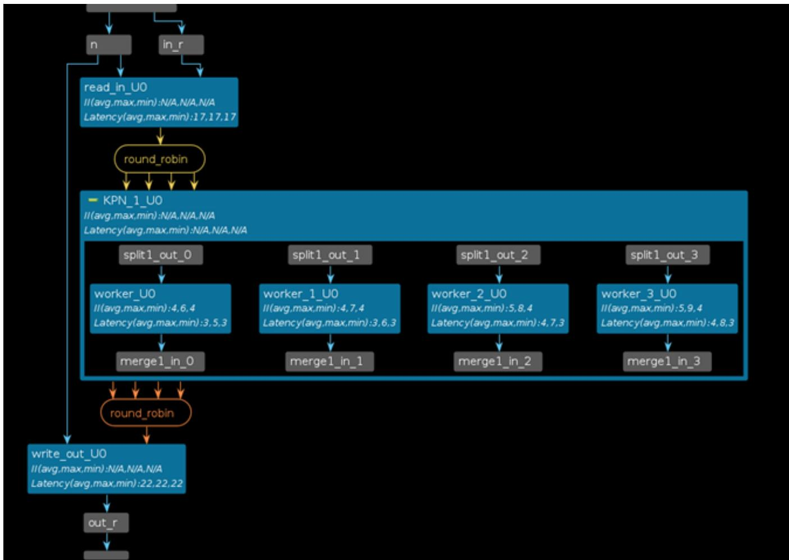
小结🔗
纯数据驱动且无需与软件应用交互的 HLS 设计可用数据驱动 TLP 模型建模。此类设计例如：
- 将"规则"编译进内核的简单基于规则的"防火墙"
- 将配置数据编译进内核的快速傅里叶变换
- 将系数编译进内核的 FIR 滤波器
若设计需要与外部存储进行数据传输，则可使用控制驱动 TLP 模型。此类设计例如：
- 路由表必须为内核执行而完全更新的网络路由器
- 使用哈希映射将数据发送到服务器的负载均衡器，必须同时更新服务器列表、服务器映射及对应 IP 地址
然而，大多数设计可是控制驱动与数据驱动混合模型，既需要一些对外部存储的访问，又支持 HLS 设计内部并行与流水线任务之间的流式传输。
总之，本章介绍了用 C/C++ 编写应用时需要考虑的一些建模选择。到目前为止，讨论集中在高层组织算法以利用任务-通道或数据流优化等特殊模型。实现良好吞吐量的另一关键方面是考虑指令级并行。HLS 中的指令级并行指高效并行化循环、函数乃至数组内部操作的能力。接下来几节将介绍这些与宏观优化协同工作的微观优化。
循环基础🔗
在编写面向高层次综合（HLS）的代码时，常常需要实现处理数据块的重复算法——例如信号或图像处理。C/C++ 源代码往往包含多个循环或多个嵌套循环。
在优化性能方面，循环是开始探索优化的最佳起点之一。循环的每次迭代在硬件中执行至少需要一个时钟周期。从硬件角度思考，循环体隐含一个"等到时钟"的动作。循环的下一次迭代只有在上一次迭代结束后才开始。为提升性能，循环通常可被流水线化或展开，以利用 FPGA 高度分布与并行的架构，详见以下各节。
流水线化循环🔗
流水线化循环允许在上一次迭代结束前开始下一次迭代，使循环的各部分执行重叠。默认情况下，循环的每次迭代只有在上一次迭代结束后才开始。在下面的循环示例中，单次迭代将两个变量相加并将结果存入第三个变量。假设在硬件中此循环完成一次迭代需 3 个周期。又假设循环变量 len 为 20，即 vadd 循环在内核中运行 20 次迭代。因此，完成此循环的所有操作共需 60 个时钟周期（20 迭代 × 3 周期）。
vadd: for(int i = 0; i < len; i++) {
c[i] = a[i] + b[i];
}
提示：如上例所示（vadd:），始终为循环加标签是良好实践。此做法有助于在 Vitis HLS 中调试设计。有时未使用的标签在编译时会产生警告，可安全忽略。
流水线化循环允许循环的后续迭代重叠并发执行。通过在循环体内添加 PIPELINE pragma 或指令来启用循环流水线化，如下所示：
vadd: for(int i = 0; i < len; i++) {
#pragma HLS PIPELINE
c[i] = a[i] + b[i];
}

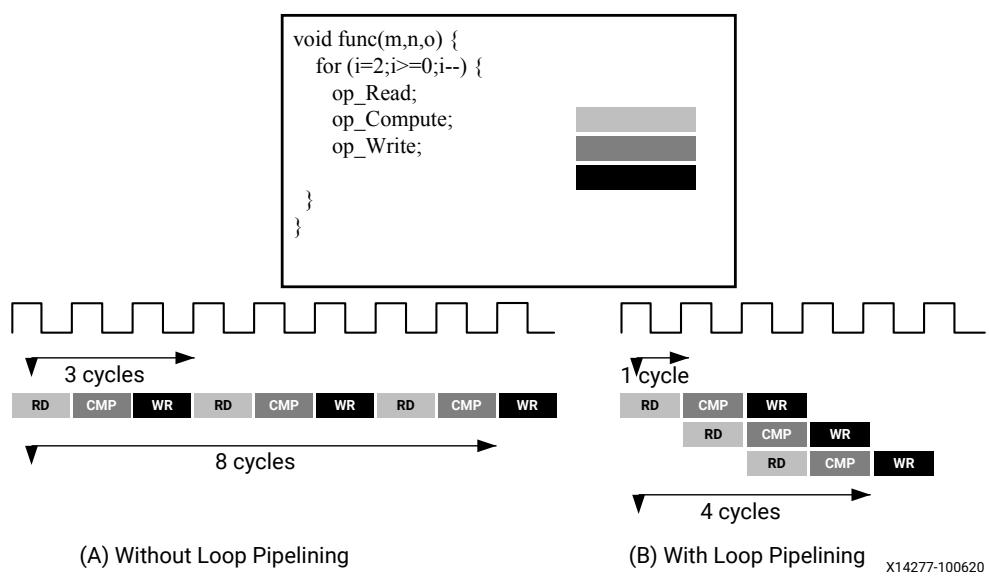
图 15：循环流水线化提示：Vitis HLS 自动对迭代次数大于 64 的循环进行流水线化。此特性可通过配置命令更改或禁用，详见"编译选项"。
启动循环下一次迭代所需的周期数称为流水线化循环的启动间隔（II）。II = 2 意味着循环的下一次迭代在当前迭代之后 2 个周期启动。II = 1 是理想情形，循环的每次迭代在下一个周期即启动。使用 Pipeline 时，您可指定编译器要达成的 II。若未指定目标 II，编译器默认尝试达成 II=1。
下图说明了流水线化与非流水线化循环在执行上的差异。图中 (A) 显示默认顺序操作，每次输入读取之间间隔 3 个时钟周期（II = 3），需要进行 8 个时钟周期后才执行最后一次输出写入。
在 (B) 所示的循环流水线化版本中，每个周期读取一个新输入样本（II = 1），最终输出仅在 4 个时钟周期后写入：在使用相同硬件资源的情况下显著改善了 II 与延迟。
重要：对循环进行流水线化会导致嵌套在被流水线化循环内的任何循环被自动展开。
若循环内部存在数据依赖，可能无法达到 II = 1，结果是更大的启动间隔。循环依赖是可约束循环优化（通常为流水线化）的数据依赖。它们可在循环的单次迭代内部或循环的不同迭代之间。理解循环依赖最简单的方法是考察一个极端示例。下例中，循环的结果被用作循环继续或退出条件。循环的每次迭代必须在下一次开始前完成。
Minim_Loop: while (a != b) {
if (a > b) a -= b;
else b -= a;
}
上例中的 Minim_Loop 循环无法被流水线化，因为循环的下一次迭代必须在上一次结束前无法开始。并非所有循环依赖都如此极端，但此示例凸显了某些操作必须在其他操作完成后才能开始。解决方案是尽量确保初始操作尽早执行。
循环依赖可发生于任何类型的数据，使用数组时尤为常见。
自动循环流水线化🔗
syn.compile.pipeline_loops 配置命令允许根据迭代次数自动对循环进行流水线化。所有迭代次数超过指定阈值的循环都会被自动流水线化。默认阈值为 64。
给定以下示例代码：
loop1: for (i = 0; i < 5; i++) {
// 做 5 次某事 ...
}
若 syn.compile.pipeline_loops 命令设为 4，则 for 循环（loop1）被流水线化。这等价于添加 PIPELINE pragma，如下代码片段所示：
loop1: for (i = 0; i < 5; i++) {
#pragma HLS PIPELINE II=1
// 做 5 次某事 ...
}
但对于嵌套循环，工具从最内层循环开始，判断其是否可流水线化，然后沿循环嵌套向上移动。在下例中，syn.compile.pipeline_loops 阈值仍为 4，最内层循环（loop1）被标记为流水线化。然后工具评估循环对的父循环（loop2），发现它也可流水线化。此时工具将 loop1 展开到 loop2 中，并标记 loop2 为流水线化。然后它向上移到父循环（loop3）并重复分析。
loop3: for (y = 0; y < 480; y++) {
loop2: for (x = 0; x < 640; x++) {
loop1: for (i = 0; i < 5; i++) {
// 做 5 次某事 ...
}
}
}
若设计中存在不希望使用自动流水线化的循环，可对该循环应用带 off 选项的 PIPELINE 指令。off 选项可阻止自动循环流水线化。
重要：工具在执行所有用户指定指令后才应用 syn.compile.pipeline_loops 命令。例如，若对循环应用了用户指定的 UNROLL 指令，则循环先被展开，由于循环已被消除，自动循环流水线化无法应用。
若 pipeline_loops 阈值设为 0，所有自动流水线化都被关闭（除非对循环添加 pragma 覆盖该设置）。所示示例始终自动流水线化，无论阈值设置如何。工具何时会/不会自动流水线化：
- 若最内层循环的迭代次数未知、大于等于指定阈值或无外层循环，则它会被流水线化，除非用 pipeline off 指令显式禁用。
- 若循环的已知迭代次数 < 阈值且其上有循环，则检查是否能从上层流水线化：为此，上层循环必须只包含也将被展开的子循环（如迭代次数 < 阈值）。若可以，则流水线放置在此上层循环中。
- 实际上对上层循环也是如此，起作用的是累计迭代次数——即被展开的迭代次数乘以当前迭代次数，并向上直至达到阈值。
为性能重绕流水线化循环🔗
PIPELINE pragma 有一个名为 rewind 的选项。当此循环是顶层函数或数据流区域的最外层构造、且数据流区域被执行多次时，该选项允许流水线化循环连续调用的执行重叠。
下图展示了使用 rewind 选项对循环进行流水线化时的操作。在循环迭代次数结束时，循环开始再次执行。虽然通常立即重新执行，但可能出现延迟，并在 GUI 中显示与说明。
图 16：带 rewind 选项的循环流水线化
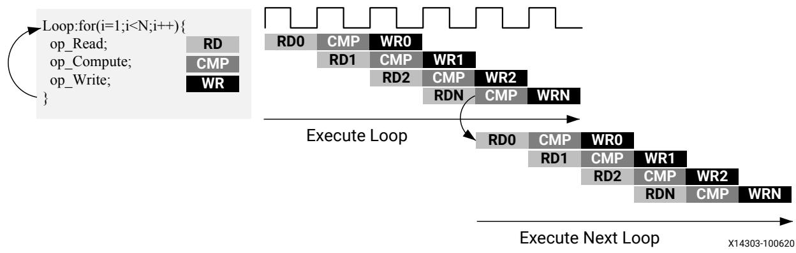
注意：若在 DATAFLOW 区域周围使用循环，Vitis HLS 会自动实现以允许连续执行重叠。
冲刷流水线与流水线类型🔗
冲刷流水线🔗
只要流水线输入端有数据可用，流水线就持续执行。若无数据可处理，流水线停顿。如下图所示，Input Data Valid 信号变低表示不再有有效输入数据。该信号变高表示有新数据可处理后，流水线继续运行。
图 17：带停顿的循环流水线化
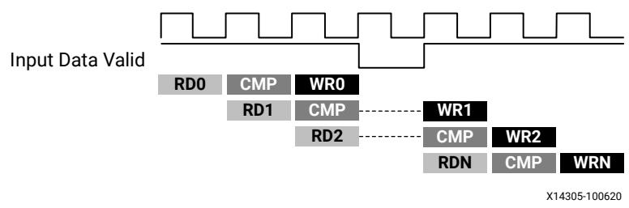
某些情形下，希望流水线能被"清空"或"冲刷"。flush 选项用于执行此操作。当流水线被"冲刷"时，流水线在没有输入可用时（由流水线起始处的数据有效信号判定）停止读取新输入，但继续处理，逐级关闭每个流水线级，直到最终输入被处理到流水线输出。
如前所述，工具会自动为给定的流水线化循环或函数选择合适的流水线风格。不过，您可以使用 syn.compile.pipeline_style 配置命令指定默认流水线风格来覆盖此默认行为。
您也可以使用 PIPELINE pragma 或指令为函数或循环指定流水线风格。此选项仅应用于 pragma 或指令的特定作用域，不更改 syn.compile.pipeline_style 设定的全局默认值。
stp 与 flp 两类流水线都使用标准流水线逻辑，所创建的硬件流水线使用各类阻塞信号来停顿流水线。这些阻塞信号常成为高扇出网络的驱动，尤其在物理级数深、处理数据量大的流水线上。此类高扇出网络一旦产生，是时序收敛问题的主要原因，且无法在 RTL/逻辑综合或布局布线阶段修复。为解决此问题，创建了一种名为自由运行流水线（free-running pipeline，frp）的新型流水线实现。自由运行流水线是处理带阻塞信号流水线最高效的架构，因为：
- 它完全消除了到寄存器使能的阻塞信号连接。
- 它是完即可冲刷的流水线，允许气泡化无效事务。
- 与之前将扇出分布（跨触发器）的架构不同，它降低了扇出。
- 它不依赖综合和/或布局布线的优化（如触发器复制）。
- 它通过创建缩短连线长度并降低高扇出的结构来帮助 PnR。
但此扇出降低是有代价的：
- 阻塞输出端口所需的 FIFO 缓冲带来额外资源占用。
- 这些阻塞输出端口处的 mux 延迟。
- 前向压力触发器提前验证可能带来的性能损失。
重要：自由运行流水线（frp）只能从 DATAFLOW 区域内部调用。该风格不能应用于在顺序或流水线区域中调用的循环。
流水线类型🔗
工具中可用的三种流水线类型总结于下表。工具会自动为给定的流水线化循环或函数选择合适的流水线风格。若流水线与 hls::tasks 一起使用，自动选择可冲刷流水线（FLP）风格以避免死锁。若流水线控制需要高扇出且满足其他自由运行要求，工具选择自由运行流水线（FRP）风格以限制高扇出。最后，若以上两种情形都不适用，则选择标准流水线（STP）风格。
表 4：流水线类型
| 名称 | 阻塞流水线（STP） | 自由运行/可冲刷流水线（FRP） | 可冲刷流水线（FLP） |
|---|---|---|---|
| 用例 | 流水线控制高扇出无时序问题；不需要冲刷（如停顿无性能或死锁问题） | 需要因扇出到寄存器使进而更好时序；需要冲刷以提升性能或避免死锁；只能从数据流区域调用 | 需要冲刷以提升性能或避免死锁 |
| Pragma/指令 | #pragma HLS pipeline style=stp |
#pragma HLS pipeline style=frp |
#pragma HLS pipeline style=flp |
| 全局设置 | syn.compile.pipeline_style=stp（默认） |
syn.compile.pipeline_style=frp |
syn.compile.pipeline_style=flp |
| 缺点 | 不可冲刷，可能：在数据流中导致更多死锁；若下一迭代输入缺失，阻止已计算输出交付；流水线控制高扇出导致时序问题 | 输出加 FIFO 导致中等资源增加；至少需要一个阻塞 I/O（stream 或 ap_hs）；并非所有流水线场景与 I/O 类型都支持 | II 可能更大；II>1 时因共享减少导致资源占用更大 |
| 优点 | 默认流水线，无使用约束，通常总体资源占用最低 | 扇出更少带来更好时序；流水线控制逻辑更简单；可冲刷 | 可冲刷；避免死锁 |
重要：可冲刷流水线（flp）与 PIPELINE pragma 或指令中指定的 rewind 选项兼容，前提是同时启用配置命令。
管理流水线依赖🔗
Vitis HLS 构造与 C/C++ 源代码对应的硬件数据通路。无流水线指令时，执行始终顺序，工具无需考虑依赖。但当设计的某些部分被流水线化后，工具需确保 Vitis HLS 生成的硬件尊重任何可能的依赖。
数据依赖或存储依赖的典型情形是读或写发生在前一次读或写之后。
- 写后读（RAW），又称真依赖：一条指令（及其读取/使用的数据）依赖于前一次操作的结果。
- I1:
t = a * b; - I2:
c = t + 1; - 语句 I2 中的读依赖于语句 I1 中 t 的写。若指令重排，会使用 t 的旧值。
- 读后写（WAR），又称反依赖：一条指令不能在前一条指令读取数据前更新寄存器或存储（写）。
- I1:
b = t + a; - I2:
t = 3; - 语句 I2 的写不能在语句 I1 之前执行，否则 b 的结果无效。
- 写后写（WAW）：寄存器或存储必须以特定顺序写入，否则其他指令可能被破坏。
- I1:
t = a * b; - I2:
c = t + 1; - I3:
t = 1; - 语句 I3 的写必须发生在语句 I1 的写之后，否则语句 I2 的结果不正确。
- 读后读无依赖，若变量未声明为 volatile，指令可自由重排。若声明为 volatile，则必须维持指令顺序。
例如，生成流水线时，工具需确保后级读取的寄存器或存储位置未被前一次写修改。这是真依赖或写后读（RAW）依赖。具体示例：
int top(int a, int b) {
int t,c;
I1: t = a * b;
I2: c = t + 1;
return c;
}
语句 I2 不能在语句 I1 完成前求值，因为存在对变量 t 的依赖。在硬件中，若乘法耗时 3 个时钟周期，则 I2 延迟该时长。若上述函数被流水线化，Vitis HLS 检测到此真依赖并相应调度操作。它使用数据前推优化消除 RAW 依赖，使函数能在 II=1 下运行。
当示例应用于数组而非变量时，出现存储依赖。
int top(int a) {
int r=1,rnext,m,i,out;
static int mem[256];
L1: for(i=0;i<=254;i++) {
#pragma HLS PIPELINE II=1
I1: m = r * a; mem[i+1] = m; // 第 7 行
I2: rnext = mem[i]; r = rnext; // 第 8 行
}
return r;
}
上例中，循环 L1 的调度会产生调度警告：
WARNING: [SCHED 204-68] Unable to enforce a carried dependency constraint
(II = 1, distance = 1) between 'store' operation (top.cpp:7) of variable
'm', top.cpp:7
on array 'mem' and 'load' operation ('rnext', top.cpp:8) on array 'mem'.
INFO: [SCHED 204-61] Pipelining result: Target II: 1, Final II: 2, Depth: 3.
循环同一次迭代内无问题，因为写一个索引、读另一个。两条指令可同时并发执行。但观察几次迭代的读与写：
// i=0 迭代
I1: m = r * a; mem[1] = m; // 第 7 行
I2: rnext = mem[0]; r = rnext; // 第 8 行
// i=1 迭代
I1: m = r * a; mem[2] = m; // 第 7 行
I2: rnext = mem[1]; r = rnext; // 第 8 行
// i=2 迭代
I1: m = r * a; mem[3] = m; // 第 7 行
I2: rnext = mem[2]; r = rnext; // 第 8 行
考虑两次连续迭代时，语句 I1 的乘法结果 m（延迟=2）被写入一个位置，而该位置在下一次循环迭代的语句 I2 中被读入 rnext。此情形下存在 RAW 依赖，因为下一次循环迭代不能在前一次计算写完成前开始读 mem[i]。
图 18：依赖示例
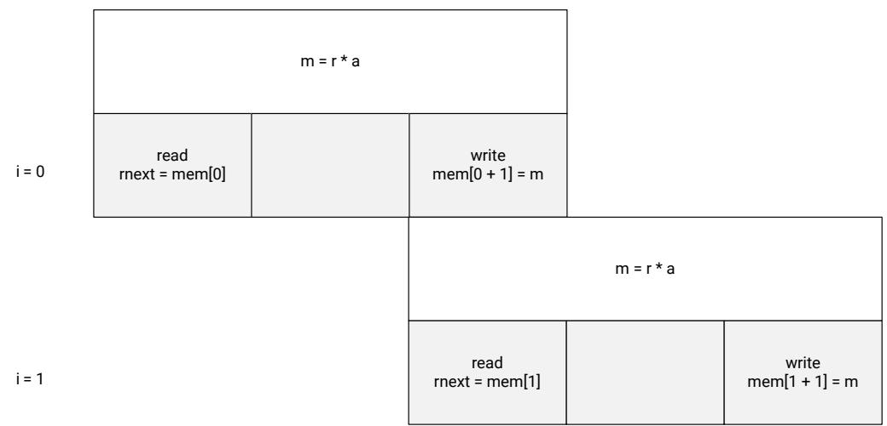
若提高时钟频率，乘法器需要更多流水线级与更高延迟，这迫使 II 也增加。
考虑以下代码，操作被交换，功能发生变化：
int top(int a) {
int r,m,i;
static int mem[256];
L1: for(i=0;i<=254;i++) {
#pragma HLS PIPELINE II=1
I1: r = mem[i]; // 第 7 行
I2: m = r * a , mem[i+1]=m; // 第 8 行
}
return r;
}
调度警告为：
INFO: [SCHED 204-61] Pipelining loop 'L1'.
WARNING: [SCHED 204-68] Unable to enforce a carried dependency constraint
(II = 1, distance = 1)
between 'store' operation (top.cpp:8) of variable 'm', top.cpp:8 on array
'mem' and 'load' operation ('r', top.cpp:7) on array 'mem'.
WARNING: [SCHED 204-68] Unable to enforce a carried dependency constraint
(II = 2, distance = 1) ...
WARNING: [SCHED 204-68] Unable to enforce a carried dependency constraint
(II = 3, distance = 1) ...
INFO: [SCHED 204-61] Pipelining result: Target II: 1, Final II: 4, Depth: 4.
观察几次迭代的连续读与写：
i=0 迭代
I1: r = mem[0]; // 第 7 行
I2: m = r * a , mem[1]=m; // 第 8 行
i=1 迭代
I1: r = mem[1]; // 第 7 行
I2: m = r * a , mem[2]=m; // 第 8 行
i=2 迭代
I1: r = mem[2]; // 第 7 行
I2: m = r * a , mem[3]=m; // 第 8 行
需要更长 II，因为 RAW 依赖是通过从 mem[i] 读 r、执行乘法、写 mem[i+1] 形成的。
消除假依赖以改善循环流水线化🔗
假依赖是编译器过于保守而产生的依赖。这些依赖在真实代码中不存在，但编译器无法判定。这些依赖可能阻止循环流水线化。
下例说明假依赖。此例中，同一次循环迭代内读与写访问同一数组 hist 的两个不同地址。这两个地址都依赖于输入数据，可指向 hist 数组的任何单个元素。因此，Vitis HLS 假设这两个访问可能访问同一位置，结果将读与写操作交替调度到不同周期，导致循环 II 为 2。然而代码显示 hist[old] 与 hist[val] 永远不会访问同一位置，因为它们处于 if(old == val) 条件的 else 分支中。
void histogram(int in[INPUT SIZE], int hist[VALUE SIZE]) {
int acc = 0;
int i, val;
int old = in[0];
for(i = 0; i < INPUT SIZE; i++)
{
#pragma HLS PIPELINE II=1
val = in[i];
if(old == val)
{
acc = acc + 1;
}
else
{
hist[old] = acc;
acc = hist[val] + 1;
}
old = val;
}
hist[old] = acc;
}
为克服此不足，可使用 DEPENDENCE 指令向 Vitis HLS 提供关于依赖的额外信息。
void histogram(int in[INPUT SIZE], int hist[VALUE SIZE]) {
int acc = 0;
int i, val;
int old = in[0];
#pragma HLS DEPENDENCE variable=hist type=intra direction=RAW dependent=false
for(i = 0; i < INPUT SIZE; i++)
{
#pragma HLS PIPELINE II=1
val = in[i];
if(old == val)
{
acc = acc + 1;
}
else
{
hist[old] = acc;
acc = hist[val] + 1;
}
old = val;
}
hist[old] = acc;
}
重要：在实际依赖并非 FALSE 时指定 FALSE 依赖，会导致硬件错误。指定前务必确认依赖正确（TRUE 或 FALSE）。
指定依赖时有两种主要类型：
- Inter：指定同一循环不同迭代之间的依赖。若指定为 FALSE，允许 Vitis HLS 在流水线化或循环被展开或部分展开时并行执行操作；指定为 TRUE 时阻止此类并发。
- Intra：指定同一循环迭代内部的依赖，例如同一次迭代开始与结束时都访问同一数组。intra 依赖指定为 FALSE 时，Vitis HLS 可在循环内自由移动操作，增加其可移动性并潜在改善性能或面积；指定为 TRUE 时，操作必须按指定顺序执行。
标量依赖🔗
某些标量依赖更难解决，常需修改源代码。标量数据依赖可能如下：
while (a != b) {
if (a > b) a -= b;
else b -= a;
}
此循环的下一次迭代在当前迭代计算出 a 与 b 的更新值之前无法开始，如下图所示。
图 19：标量依赖
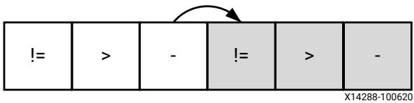
若上一次循环迭代的结果必须在当前迭代开始前可用，则无法进行循环流水线化。若 Vitis HLS 无法以指定启动间隔流水线化，则增大启动间隔。若完全无法流水线化（如上例所示），则停止流水线化并输出非流水线化设计。
展开循环🔗
循环按循环归纳变量指定的迭代次数执行。迭代次数也可能受循环体内逻辑（如 break 条件或对循环退出变量的修改）影响。您可以展开循环以在 RTL 设计中创建循环体的多个副本，允许部分或全部循环迭代并行发生。使用 UNROLL pragma 可展开循环以提升数据访问与吞吐量。
默认情况下，HLS 循环保持 rolled（卷起）状态，即循环的每次迭代使用相同硬件。展开循环意味着循环的每次迭代都有各自硬件执行循环功能。这意味着展开循环的性能可显著优于 rolled 循环。但性能提升以额外面积与资源占用为代价。
考虑 GitHub 上的以下示例：
#include "test.h"
dout_t test(din_t A[N]) {
dout_t out_accum=0;
dsel_t x;
LOOP_1:for (x=0; x<N; x++) {
out_accum += A[x];
}
return out_accum;
}
无优化时，下图综合摘要报告显示实现是顺序的。这可通过 LOOP_1 的迭代次数确认——报告迭代次数为 10，延迟为 200。延迟是循环可接受新输入值之前的时间。
图 20：性能与资源估算
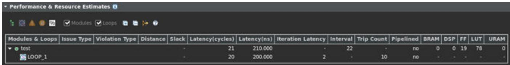
为获得最佳吞吐量，延迟需尽可能短。假设循环边界为静态，可使用 UNROLL pragma 完全展开循环以创建循环体的并行实现来提升性能。LOOP_1 完全展开后，下图显示延迟显著降低（50 ns）。展开循环意味着以更高性能换取更多资源（如下所示 FF 与 LUT 增加）的折中。完全展开循环会使循环本身消失，被循环体的并行实现取代，从而消耗额外资源。
图 21：性能与资源估算
（资源估算表显示：延迟 50 ns，无流水线，FF 51、LUT 261）
某些情形下，由于资源增加与平台可用资源限制，无法完全展开循环。此时部分展开循环可能是首选方案，能在不需要太多资源的情况下提供一些性能提升。为 pragma 或指令定义展开因子以部分展开循环。以因子 2 展开同一循环（意味着循环体被复制、迭代次数减半为 5）对此受限情形可是可接受的方案，如下所示。
图 22：性能与资源估算
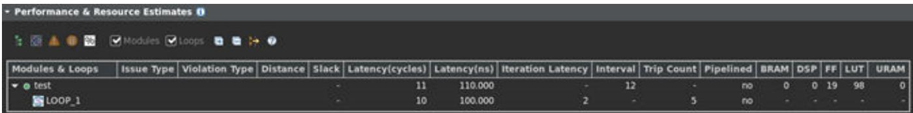
此外，部分展开循环时，若迭代次数不能被展开因子整除，HLS 工具会在循环中实现退出检查。若迭代次数能被展开因子整除，则跳过退出检查。
合并循环🔗
所有 rolled 循环都隐含并在设计中创建至少一个状态。当存在多个顺序循环时，会产生额外不必要的时钟周期并阻止进一步优化。
下图展示了一个简单示例，其中看似直观的编码风格对 RTL 设计性能产生了负面影响。
图 23：循环指令
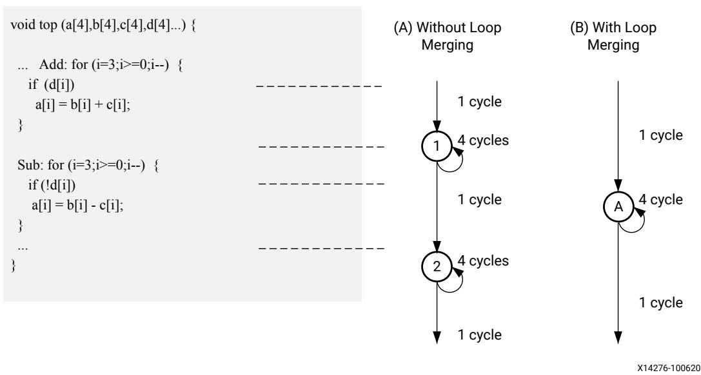
上图中，(A) 显示默认情况下设计中的每个 rolled 循环在 FSM 中创建至少一个状态。在这些状态之间迁移耗费时钟周期：假设每次循环迭代需 1 个时钟周期，执行两个循环共需 11 个周期：
- 1 个时钟周期进入 ADD 循环
- 4 个时钟周期执行 add 循环
- 1 个时钟周期退出 ADD 并进入 SUB
- 4 个时钟周期执行 SUB 循环
- 1 个时钟周期退出 SUB 循环
- 共计 11 个时钟周期
在此简单示例中，显然 ADD 循环中加一个 else 分支也能解决问题，但更复杂示例中可能不那么明显，更直观的编码风格可能有更大优势。
LOOP_MERGE 优化指令用于自动合并循环。循环合并优化指令试图合并其放置作用域内的所有循环。上例中，合并循环产生类似上图 (B) 所示的控制结构，仅需 6 个时钟周期完成。
合并循环允许循环内的逻辑一起优化。循环合并变换有限制，可能不总能成功。但通过重构代码仍可手动合并循环。上例中，使用双端口块 RAM 允许加法与减法操作并行执行。
嵌套循环的处理🔗
只有当循环不包含任何循环（可能在某些内层循环展开后）时才能被流水线化。包含被流水线化循环的循环因此要么是数据流，要么是顺序。当为顺序时，其迭代顺序执行，每次迭代中内层循环完整执行一次。在 RTL 实现中，这需要 1 个时钟周期从外层循环进入内层循环，1 个时钟周期从内层循环返回外层循环，加上中间完成内层循环所有迭代的全部延迟。为在嵌套循环中获得更好性能（更低延迟），创建完美嵌套循环并将其转换为可流水线化的单一循环变得至关重要。
Perfect_nested_loop_1: for (int i = 0; i < N; ++i) {
Perfect_nested_loop_2: for (int j = 0; j < M; ++j) {
}
}
Imperfect_nested_loop_0: for (int i = 0; i < N; ++i) {
Imperfect_nested_loop_2: for (int j = 0; j < M; ++j) {
}
Imperfect_nested_loop_3: for (int j = 0; j < M; ++j) {
}
}
完美循环嵌套是每个外层循环只包含一个子循环且无其他的嵌套循环。近似完美循环嵌套（每个外层循环除子循环外还可包含基本指令）可通过将这些指令推入最内层循环自动转换为完美循环嵌套。
LOOP_FLATTEN pragma 或指令用于允许完美与近似完美嵌套循环被展平。关于其迭代次数还有额外重要可展平性要求，详见 loop_flatten pragma 或指令说明。这免去为获得最优硬件性能而重新编码的需要，并减少执行循环操作所需周期数。当 LOOP_FLATTEN 优化应用于一组嵌套循环时，应应用于包含循环体的最内层循环。
对嵌套循环进行流水线化时，面积与性能的最佳平衡通常通过流水线化最内层循环获得，这也带来最快运行时间。
变长循环边界的处理🔗
当循环具有变长边界时，Vitis HLS 可应用的某些优化会被阻止。在以下代码示例（GitHub 上的 variable_bound_loops）中，循环边界由变量 width 决定，width 来自顶层输入。此时循环被认为具有变长边界，因为 Vitis HLS 无法知道循环何时完成。
#include "ap_int.h"
#define N 32
typedef ap_int<8> din_t;
typedef ap_int<13> dout_t;
typedef ap_uint<5> dsel_t;
dout_t code028(din_t A[N], dsel_t width)
dout_t out_accum=0;
dsel_t x;
LOOP_X:for (x=0;x<width; x++) {
out_accum += A[x];
}
return out_accum;
尝试优化上例设计会揭示变长循环边界带来的问题。变长循环边界的第一个问题是阻止 Vitis HLS 确定循环延迟。Vitis HLS 能确定完成一次循环迭代的延迟，但由于无法静态确定变量 width 的确切值，它不知道执行多少次迭代，因此无法报告循环延迟（完整执行所有迭代所需的周期数）。
存在变长循环边界时，Vitis HLS 报告延迟为问号（?）而非精确值。上例综合后的结果如下：
+ 总体延迟摘要（时钟周期）：
* 最佳情况延迟：?
* 最差情况延迟：?
+ 循环延迟摘要（时钟周期）：
+ LOOP_X：
* 迭代次数：?
* 延迟：?
克服此问题的方法是使用 LOOP_TRIPCOUNT pragma 或指令为循环指定最小和/或最大迭代次数。tripcount 即循环迭代次数。若对上例 LOOP_X 应用最大 tripcount 32，报告更新为：
+ 总体延迟摘要（时钟周期）：
* 最佳情况延迟：2
* 最差情况延迟：34
+ 循环延迟摘要（时钟周期）：
+ LOOP_X：
* 迭代次数：0 ~ 32
* 延迟：0 ~ 32
LOOP_TRIPCOUNT 指令的用户提供值仅用于报告，或支持 PERFORMANCE pragma 或指令。指定 tripcount 值允许 Vitis HLS 在报告中确定延迟值，从而比较不同方案的值。要让此循环边界信息用于综合，必须使用 assert 更新 C/C++ 代码——assert 影响综合（但必须谨慎使用，因为 assert 条件被假定为真）。
优化上例以获得更低启动间隔的下一步是：
- 展开循环，允许累加并行执行。
- 对数组输入进行分区，否则并行累加受单一存储端口限制。
若应用这些代码变换，Vitis HLS 的输出凸显了变长边界循环最显著的问题：
WARNING: [HLS 200-936] Cannot unroll loop 'LOOP_X' (loop_var.cpp:22) in
function 'loop_var': cannot completely unroll a loop with a variable trip
count.
由于变长边界循环无法完全展开，它们不仅阻止 unroll 指令应用，还阻止流水线化循环之上的层级。
重要：当循环或函数被流水线化时，Vitis HLS 会展开该函数或循环层级下的所有循环。若此层级中存在变长边界循环，则会阻止流水线化。
变长边界循环的解决方案是将循环迭代数设为固定值，在循环内使用条件执行。变长循环边界示例的代码可改写为如下代码示例。此处循环边界显式设为变量 width 的最大值，循环体条件执行：
#include "ap_int.h"
#define N 32
typedef ap_int<8> din_t;
typedef ap_int<13> dout_t;
typedef ap_uint<5> dsel_t;
dout_t loop_max_bounds(din_t A[N], dsel_t width) {
dout_t out_accum=0;
dsel_t x;
LOOP_X:for (x=0; x<N; x++)
if (x<width) {
out_accum += A[x];
}
}
return out_accum;
}
上例中的 for 循环（LOOP_X）可被完全展开。由于循环具有固定上界，Vitis HLS 知道要创建多少硬件。RTL 设计中有 N（32）份循环体副本。每份循环体都有相关条件逻辑，根据变量 width 的值执行。示例请参阅 Vitis-HLS-Introductory-Examples/Modeling/variable_bound_loops。
将软件数组映射到硬件存储🔗
数组是任何 C++ 软件程序中的基础数据结构。软件程序员将数组简单视为容器，按需动态分配/释放数组。当同一程序需综合为硬件时，不支持此类数组的动态内存分配。要将数组综合为硬件，必须（静态地）知道算法所需的精确存储容量。此外，FPGA 上的存储架构（又称"本地存储"）与全局存储（通常是 DDR 或 HBM 存储体）的折中截然不同。访问全局存储延迟高、可能耗费多个周期；而访问本地存储通常很快，仅需一个或几个周期。
当 HLS 设计被适当流水线化和/或展开后，存储访问模式得以确立。HLS 编译器允许用户将数组映射到各类资源——数组元素可带或不带握手信号并行可用。内部数组与顶层函数接口上的数组都可映射到寄存器或存储器。若数组在顶层接口上，工具自动创建与外部存储接口所需的地址、数据与控制信号。若数组在设计内部，工具不仅创建访问存储所需的地址、数据与控制信号，还实例化存储模型（随后被下游 RTL 综合工具推断为存储器）。
数组在综合后通常实现为存储器（RAM、ROM 或移位寄存器）。若平台有足够寄存器支持，数组也可完全分区为单个寄存器以创建完全并行实现。GitHub 上的 initialization_and_reset 示例演示了存储器的不同实现。
顶层函数接口上的数组被综合为访问外部存储的 RTL 端口。设计内部，较小数组会被综合为移位寄存器；较大数组会根据优化设置被综合为块 RAM（BRAM）、LUTRAM 或 UltraRAM（URAM）（见 BIND_STORAGE 指令/pragma）。
考虑以下示例，HLS 编译器遇到如下代码时推断移位寄存器：
int A[N]; // 这将被替换为移位寄存器
for(...) {
// 以下循环为移位操作
for (int i = 0; i < N-1; ++i)
A[i] = A[i+1];
A[N-1] = ...;
// 这是对移位寄存器的访问
... A[x] ...
}
移位寄存器可每周期执行一次移位操作，且允许每周期对移位寄存器任意位置随机读取，因此比 FIFO 更灵活。
数组可能在 RTL 中产生问题的情形：
- 当实现为存储器（BRAM/LUTRAM/URAM）时，存储端口数可能限制数据访问，导致流水线化循环中违反 II。
- 互斥访问可能无法被 HLS 编译器正确推断。
- 必须小心确保只需读访问的数组在 RTL 中实现为 ROM。
HLS 编译器支持指针数组。每个指针只能指向标量或标量数组。
提示：数组必须有尺寸。即使对函数参数也是如此（尺寸被 C++ 编译器忽略，但被工具使用），例如：int array[10]。但不支持无尺寸数组，例如：int array[]。
数组访问与性能🔗
在上一节中，作为探索并行性的手段，介绍了循环展开与流水线化等优化概念。但这未考虑当数组映射到存储器而非寄存器时，数组访问模式可能如何阻止此类优化。映射到存储器的数组可能成为设计性能的瓶颈。Vitis HLS 提供数组重塑与数组分区等多种优化以消除这些存储瓶颈。只要可能，应使用这些自动存储优化以最小化代码修改。但有时显式编码存储架构是满足性能所必需的，或能让设计师获得更好的综合质量。在此类情形下，数组访问的编码方式不得限制性能至关重要。这意味着分析数组访问模式并组织设计中的存储，以达到所需吞吐量与面积。以下代码示例展示了数组访问可能限制最终 RTL 设计性能的情形。此例中，对数组 mem[N] 的三次访问产生求和结果。完整示例请参阅 Vitis-HLS-Introductory-Examples/Interface/Memory/memory_bottleneck。
#include "array_mem_bottleneck.h"
dout_t array_mem_bottleneck(din_t mem[N]) {
dout_t sum=0;
int i;
SUM_LOOP:for(i=2;i<N;++i)
sum += mem[i] + mem[i-1] + mem[i-2];
return sum;
}
综合期间，数组实现为 RAM。若 RAM 指定为单端口 RAM，则无法将循环 SUM_LOOP 流水线化为每时钟周期处理一次新循环迭代。
尝试以启动间隔 1 流水线化 SUM_LOOP 会导致以下消息（无法达到吞吐量 1 后，Vitis HLS 放宽约束）：
INFO: [SCHED 61] Pipelining loop 'SUM_LOOP'.
WARNING: [SCHED 69] Unable to schedule 'load' operation ('mem_load_2',
bottleneck.c:62) on array 'mem' due to limited memory ports.
INFO: [SCHED 61] Pipelining result: Target II: 1, Final II: 2, Depth: 3.
问题在于单端口 RAM 只有一个数据端口：每个时钟周期只能执行一次读（或一次写）。
- SUM_LOOP 周期 1：读 mem[i]；
- SUM_LOOP 周期 2：读 mem[i-1]、求和；
- SUM_LOOP 周期 3：读 mem[i-2]、求和；
可使用双端口 RAM，但每时钟周期只允许两次访问。计算 sum 需要三次读取，因此要每周期处理一次新迭代来流水线化循环就需要每周期三次访问。
上例代码可改写为如下代码示例，使其能以吞吐量 1 流水线化。下例中，通过预读与手动流水线化数据访问，循环每次迭代只指定一次数组读取。这确保只需单端口 RAM 即可达到性能。
#include "array_mem_perform.h"
dout_t array_mem_perform(din_t mem[N])
din_t tmp0, tmp1, tmp2;
dout_t sum=0;
int i;
tmp0 = mem[0];
tmp1 = mem[1];
SUM_LOOP:for (i = 2; i < N; i++) {
tmp2 = mem[i];
sum += tmp2 + tmp1 + tmp0;
tmp0 = tmp1;
tmp1 = tmp2;
}
return sum;
}
如上所示的源代码修改并非总必要。更常见的是使用优化指令/pragma 达到相同结果。Vitis HLS 包含用于更改数组实现与访问方式的优化指令。优化分两大类：
- 数组分区（Array Partition）将原数组拆分为更小的数组或单个寄存器。
- 数组重塑（Array Reshape）将数组重组为不同存储排列以增加并行性，但不拆分原数组。
数组分区🔗
数组可被分区为块或单个元素。某些情形下，Vitis HLS 将数组分区为单个元素，这可通过自动分区配置设置控制。当数组被分区为多个块时，单一数组实现为多个 RTL RAM 块。当分区为元素时，每个元素在 RTL 中实现为寄存器。两种情形下，分区都允许更多元素并行访问，有助于性能；设计折中在于性能与所需 RAM 或寄存器数量之间。
流水线化函数时的常见问题消息：
INFO: [SCHED 204-61] Pipelining loop 'SUM_LOOP'.
WARNING: [SCHED 204-69] Unable to schedule 'load' operation ('mem_load_2',
bottleneck.c:62) on array 'mem' due to limited memory ports.
WARNING: [SCHED 204-69] The resource limit of core:RAM:mem:p0 is 1, current
assignments:
WARNING: [SCHED 204-69] 'load' operation ('mem_load', bottleneck.c:62)
on array 'mem',
WARNING: [SCHED 204-69] The resource limit of core:RAM:mem:p1 is 1, current
assignments:
WARNING: [SCHED 204-69] 'load' operation ('mem_load_1', bottleneck.c:62)
on array 'mem',
INFO: [SCHED 204-61] Pipelining result: Target II: 1, Final II: 2, Depth: 3.
此例中，Vitis HLS 声明无法达到指定启动间隔（II）1，因为存储端口有限，无法将 load（读）操作（mem_load_2）调度到存储器上。上述消息指出"core:RAM:mem:p0 is 1"的资源限制被第 62 行的 mem_load 操作使用。块 RAM 的第二端口也仅有 1 个资源，被 mem_load_1 操作使用。由于此存储端口争用，Vitis HLS 报告最终 II 为 2 而非期望的 1。
此问题通常由数组引起。非顶层函数接口的数组实现为块 RAM，最多有两个数据端口，这会限制读/写（或加载/存储）密集算法的吞吐量。可通过将数组（单一块 RAM 资源）拆分为多个更小数组（多个块 RAM）来提升带宽，有效增加端口数。
使用 ARRAY_PARTITION 指令对数组分区。Vitis HLS 提供三种数组分区类型，如下图所示。三种分区风格为：
- block：原数组被拆分为大小相等的连续元素块。
- cyclic：原数组被拆分为大小相等、元素交错的块。
- complete：默认操作将数组拆分为单个元素，对应于将存储器解析为寄存器。
图 24：数组分区
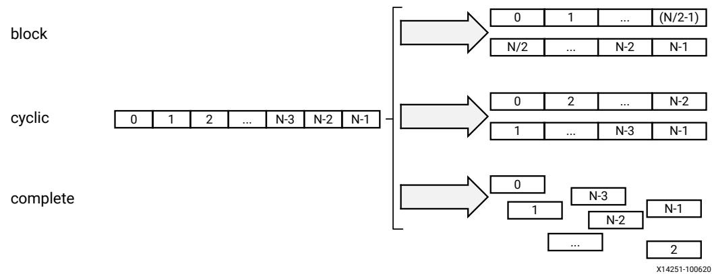
对于 block 与 cyclic 分区，factor 选项指定创建的数组数量。上图中 factor 为 2，即数组被分为两个更小数组。若数组元素数不是 factor 的整数倍，最后一个数组元素较少。
对多维数组分区时，使用 dimension 选项指定分区哪个维度。下图展示如何使用 dimension 选项对以下示例代码分区：
void foo (...) {
int my_array[10][6][4];
}
图中示例演示了分区维度 3 产生 4 个独立数组，分区维度 1 产生 10 个独立数组。若指定维度为 0，则所有维度都被分区。
图 25：分区数组维度
my_array_0[10][6]
my_array[10][6][4] 分区维度 3 my_array_1[10][6]
my_array_2[10][6]
my_array_3[10][6]
my_array_0[6][4]
my_array_1[6][4]
my_array[10][6][4] 分区维度 1 my_array_2[6][4]
...
my_array_9[6][4]
my_array[10][6][4] 分区维度 0 10x6x4 = 240 个寄存器
X14304-100620
自动数组分区🔗
syn.array_partition.complete_threshold 与 syn.array_partition.throughput_driven 配置命令定义如何基于元素数量或吞吐量需求自动分区数组，详见"数组分区配置"。
数组重塑🔗
ARRAY_RESHAPE 指令以垂直重映射方式改造数组，用于在提供数据并行访问的同时减少块 RAM 消耗。
给定以下示例代码：
void foo (...) {
int array1[N];
int array2[N];
int array3[N];
#pragma HLS ARRAY_RESHAPE variable=array1 type=block factor=2 dim=1
#pragma HLS ARRAY_RESHAPE variable=array2 type=cyclic factor=2 dim=1
#pragma HLS ARRAY_RESHAPE variable=array3 type=complete dim=1
}
ARRAY_RESHAPE 指令将数组转换为下图所示形式。
图 26：数组重塑
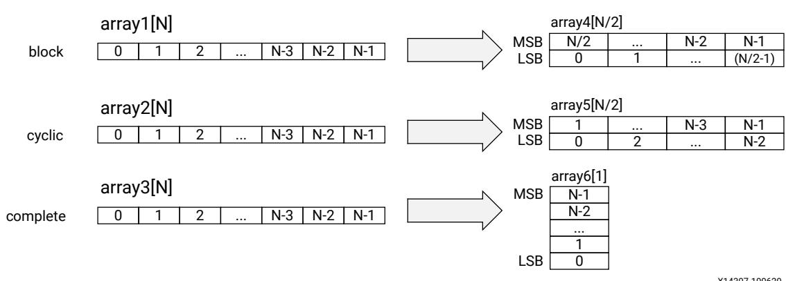
ARRAY_RESHAPE 指令允许在单时钟周期内访问更多数据。在单周期可访问更多数据的情形下，若有助于提升吞吐量，Vitis HLS 会自动展开消费此数据的循环。循环可被完全或部分展开以创建足够硬件在单周期内消费额外数据。此特性由 syn.unroll.tripcount_threshold 配置命令控制，详见"展开设置"。
下例中，任何迭代次数小于 16 的循环若有助于提升吞吐量都会被自动展开。
syn.unroll.tripcount_threshold=16
接口上的数组🔗
当您使用数组作为顶层函数参数时，Vitis HLS 假定以下之一：
- 存储为片外，Vitis HLS 在接口上综合 M_AXI 端口以访问存储（Vitis 内核流程的默认行为）。
- 存储为标准块 RAM，延迟为 1（Vivado IP 流程的默认行为）。数据在地址提供后一个时钟周期就绪。
配置 Vitis HLS 如何创建这些端口：
- 使用 INTERFACE pragma 或指令将接口指定为 M_AXI、BRAM 或 FIFO 接口。
- 使用 INTERFACE pragma 或指令的 storage_type 选项将 RAM 指定为单端口或双端口 RAM。
- 使用 INTERFACE pragma 或指令的 latency 选项指定 RAM 延迟。
- 使用数组优化指令 ARRAY_PARTITION 或 ARRAY_RESHAPE 重新配置数组结构，进而配置 I/O 端口数量。
提示：由于通过存储（RAM 或 FIFO）端口访问数据受限，接口上的数组可能产生性能瓶颈。通常可使用优化指令克服这些瓶颈。
在可综合代码中使用数组时必须指定尺寸。例如，若将 Array Interfaces 中的声明 d_i[4] 改为 d_i[]，Vitis HLS 会发出设计无法综合的消息：
@E [SYNCHK-61] array_RAM.c:52: unsupported memory access on variable 'd_i' which is (or contains) an array with unknown size at compile time.
数组接口🔗
INTERFACE pragma 或指令允许通过 storage_type=
- 默认使用单端口 RAM。
- 若能降低启动间隔或延迟则使用双端口 RAM。
ARRAY_PARTITION 与 ARRAY_RESHAPE pragma 可重新配置接口上的数组。数组可被分区为多个更小数组，每个用各自接口实现，包括将数组完全分区为一组标量的能力。在函数接口上，这会为数组中每个元素产生唯一端口。这提供最大并行访问，但会创建更多端口，并可能在硬件实现中引入布线问题。
默认情况下，以下代码示例中函数的数组参数被综合为单端口 RAM 接口。
#include "array_RAM.h"
void array_RAM (dout_t d_o[4], din_t d_i[4], didx_t idx[4])
int i;
For_Loop: for (i=0;i<4;i++) {
d_o[i] = d_i[idx[i]];
}
}
使用单端口 RAM 接口是因为 for 循环确保每个时钟周期只能读和写一个元素。使用双端口 RAM 接口没有优势。若展开 for 循环，Vitis HLS 使用双端口 RAM，这允许同时读取多个元素并改善启动间隔。可通过应用 INTERFACE pragma 或指令并设置 storage_type 来显式设置 RAM 接口类型。
接口上数组相关问题通常与吞吐量有关。例如，若上例中数组被分区为单个元素、for 循环被展开，则每个数组的所有四个元素同时被访问。
也可使用 INTERFACE pragma 或指令的 latency=
FIFO 接口🔗
Vitis HLS 允许数组参数在 RTL 中实现为 FIFO 端口。若使用 FIFO 端口，必须确保对数组的访问是顺序的。
注意：若接口处访问非顺序，会出现 RTL 仿真不匹配。
以下代码示例展示了工具无法确定访问是否顺序的情形。此例中，d_i 与 d_o 都被指定在综合时以 FIFO 接口实现。此时必须确保访问是顺序的，否则会向系统引入错误。
#include "array_FIFO.h"
void array_FIFO (dout_t d_o[4], din_t d_i[4], didx_t idx[4])
int i;
#pragma HLS INTERFACE mode=ap_fifo port=d_i
#pragma HLS INTERFACE mode=ap_fifo port=d_o
For_Loop: for (i=0;i<4;i++) {
d_o[i] = d_i[idx[i]];
}
}
此例中，变量 idx 的值将决定能否为参数 d_i[] 成功创建 FIFO 接口。
- 若 idx 元素值是顺序的，则可创建 FIFO 接口。
- 若 idx 使用随机值，FIFO 接口在 RTL 实现时会在协同仿真中失败，也可能在运行时失败。
然而由于这些条件无法在编译时验证，Vitis HLS 在综合时发出消息并创建 FIFO 接口：
@W [XFORM-124] Array 'd_i': may have improper streaming access(es).
此外，idx 数组从不被读取，因为由于 ap_fifo INTERFACE pragma 的存在，其元素被假定为从 0 开始的顺序值。
注意：不能为在同一循环或函数中既被读又被写的数组综合 FIFO 端口。必须创建独立的输入与输出数组（如上例所示）。
以下一般规则适用于以 FIFO 接口实现的数组：
- 数组必须只在循环或函数中被读或被写。这可被转换为匹配 FIFO 链接特性的点对点连接。
- 数组读取必须与数组写入顺序相同。由于 FIFO 通道不支持随机访问，数组在程序中必须按先进先出语义使用。
当数组的数据类型为 struct 且数组被顺序访问（即数组用 axis 或 ap_fifo 接口指定，或用 STREAM pragma 或指令标记）时，以下条件适用：
- 不能直接从使用数组到流转换或作为流式接口的 I/O 参数访问 struct 成员。可创建 struct 的本地副本来读/写成员元素。
- 必须确保顺序访问，如下所示：
struct A {
short foo;
int bar;
};
void dut(A in[N], A out[out], bool flag) {
#pragma HLS interface ap_fifo port=in,out
for (unsigned i=0; i<N; i++) {
A tmp = in[i];
if (flag)
tmp.bar += 5;
out[i] = tmp;
}
}
错误示例 1：
void dut(A in[N], A out[out], bool flag) {
#pragma HLS interface ap_fifo port=in,out
for (unsigned i=0; i<N; i++) {
out[i] = in[i];
if (flag)
out[i].bar += 5;
}
}
错误示例 2：
void dut(A in[N], A out[out], bool flag) {
#pragma HLS interface ap_fifo port=in,out
for (unsigned i=0; i<N; i++) {
out[i].foo = in[i].foo;
if (flag)
out[i].bar = in[i].bar + 5;
else
out[i].bar = in[i].bar;
}
}
存储映射接口🔗
如前所述，Vitis HLS 允许为接口中的数组指定 M_AXI 接口。由于此存储为片外而非本地，访问这些存储在周期上代价较高。为优化这些访问，Vitis HLS 执行自动突发优化，以高效读写这些外部存储。突发是一种优化，试图智能聚合对 DDR 的存储访问以最大化吞吐带宽和/或最小化延迟。突发是内核多种可能优化之一，通常能带来 4-5 倍提升。当多个竞争内核在 DDR 端口上有争用时，突发很有用。
关于此突发优化及如何编写代码推断更多突发的详情，请参阅"优化 AXI 系统性能"部分。
数组的初始化与复位🔗
建议：虽然不是要求，AMD 建议将欲实现为存储器的数组用 static 限定符指定。这不仅确保 Vitis HLS 在 RTL 中以存储器实现数组，还允许使用静态类型的默认初始化行为。
以下代码中，数组用一组值初始化。每次函数执行时，数组 coeff 被赋予这些值。综合后，每次设计执行时，实现 coeff 的 RAM 被加载这些值。对单端口 RAM 这需要 8 个时钟周期。对 1024 元素的数组，当然需要 1024 个时钟周期，期间任何依赖 coeff 的操作都无法进行。
int coeff[8] = {-2, 8, -4, 10, 14, 10, -4, 8, -2};
以下代码使用 static 限定符定义数组 coeff。数组在执行开始时用指定值初始化。每次函数执行时，数组 coeff 记住上一次执行的值。静态数组在 C/C++ 代码中的行为如同 RTL 中的存储器。
static int coeff[8] = {-2, 8, -4, 10, 14, 10, -4, 8, -2};
此外，若变量有 static 限定符，Vitis HLS 在 RTL 设计与 FPGA 比特流中初始化该变量。这消除了多时钟周期初始化存储器的需要，并确保初始化大型存储器不成为运行开销。示例请参阅 GitHub 上的 initialization_and_reset 示例。
RTL 配置命令 syn.rtl.reset 可指定静态变量在施加复位后是否返回初始状态。这不是默认行为。当使用 syn.rtl.reset=state 或 all 时，强制所有实现为块 RAM 的数组在复位后返回其初始化状态。这可能在 RTL 设计中导致两个非常不希望的情况：
- 与上电初始化（或上电复位）不同，显式复位要求 RTL 设计遍历块 RAM 中每个地址以设值：若 N 很大，这可能耗费大量时钟周期，并需要更多面积资源来实现复位。
- 设计中的每个数组都被加上复位。
为防止在每个此类块 RAM 上添加复位逻辑并产生复位所有 RAM 元素的周期开销，请指定默认的 syn.rtl.reset=control 复位模式，并使用 RESET pragma 或指令标识需要复位的个别静态或全局变量。
或者，可使用 syn.rtl.reset=state 复位模式，并使用 RESET 指令的 off 选项选择不复位哪些个别静态或全局变量。
最后，根据所选硬件器件或平台（UltraScale+ 或 Versal 等），块 RAM 与 URAM 的初始化和/或复位方式可能不同。一般而言，Vitis HLS 支持两种复位：一种是器件上电时（也称为上电初始化或上电复位），第二种是器件执行期间硬件 RESET 信号被置位。以下展示不同存储资源的行为差异：
- 初始化行为：适用于所有平台上的所有块 RAM，以及仅适用于 Versal URAM。这是上电初始化（或上电复位）期间的行为。
- 维护"初始值数组"与"运行时数组"（若数组被读/写）。这适用于块 RAM 与 URAM，对应器件执行期间的硬件"RESET"信号。

提示：当对同一地址的读和写映射到同一存储端口时，URAM 不支持 read-first 输出 write_mode（与块 RAM 不同）。块 RAM 支持以下写模式：read-first、write-first、no-change。URAM 只支持 read-first。当 Vitis HLS 无法在 URAM 端口上同周期调度存储操作时，会发出以下警告：
Usage of URAM can potentially cause worse II as Vitis HLS does not
exploit read-first mode for URAMs. Consider using block RAMs instead.
ROM 的实现🔗
当数组只读时推荐使用 const 限定符，因为 Vitis HLS 无法总能通过设计分析推断应使用 ROM。自动推断 ROM 的一般规则是：局部（非全局）静态数组在被读前被完全写入，且之后不再写入。代码中的以下做法有助于推断 ROM：
- 在使用数组的函数中尽早初始化数组。
- 将写操作集中在一起。
- 不要将数组（ROM）初始化写与非初始化代码交错。
- 不要对同一数组元素存储不同值（将所有写集中在一起）。
- 元素值计算不得依赖任何非（编译时常量）设计变量，初始化循环计数器变量除外。
若使用复杂赋值初始化 ROM（如 math.h 库的函数），将数组初始化放入单独函数可推断 ROM。下例中，数组 sin_table[256] 被推断为存储器，并在 RTL 综合后实现为 ROM。
#include "array_ROM_math_init.h"
#include <math.h>
void init_sin_table(din1_t sin_table[256])
{
int i;
for (i = 0; i < 256; i++) {
dint_t real_val = sin(M_PI * (dint_t)(i - 128) / 256.0);
sin_table[i] = (din1_t)(32768.0 * real_val);
}
}
dout_t array_ROM_math_init(din1_t inval, din2_t idx)
{
short sin_table[256];
init_sin_table(sin_table);
return (int)inval * (int)sin_table[idx];
}

提示：由于函数结果为常量值，RTL 设计中无需核心来实现该函数。
数组的 C 仿真🔗
数组即使在综合步骤之前也可能在 C/C++ 仿真中引入问题。若指定非常大的数组，可能导致 C/C++ 仿真内存耗尽而失败，如下例所示：
#include "ap_int.h"
int i, acc;
// 使用任意精度类型
ap_int<32> la0[10000000], la1[10000000];
for (i=0 ; i < 10000000; i++) {
acc = acc + la0[i] + la1[i];
}
仿真可能因内存耗尽而失败，因为数组被放置在内存中的栈上，而非由 OS 管理、可使用本地磁盘空间增长的堆上。某些问题可能使此问题更易发生：
- 在 PC 上，可用内存通常少于大型 Linux 机器，可用内存可能更少。
- 使用上例所示的任意精度类型可能使问题更严重，因为它们建模所需内存多于标准 C/C++ 类型。
- 使用 C++ 中更复杂的定点任意精度类型可能使设计内存耗尽更可能，因为类型需要更多内存。
C/C++ 代码开发中改善内存资源的标准方式是使用链接器选项增大栈尺寸，例如以下选项显式设置栈大小：syn.csimflags -z stack-size=10485760。
但机器可能没有足够可用内存，增大栈尺寸也无济于事。此时解决方案是对仿真使用动态内存分配、对综合使用固定尺寸数组，如下例所示。这意味着所需内存分配在堆上，由 OS 管理，可使用本地磁盘空间增长。
#include "ap_int.h"
int i, acc;
#ifdef __SYNTHESIS__
// 综合使用任意精度类型与数组
ap_int<32> la0[10000000], la1[10000000];
#else
// 仿真使用任意精度类型与动态内存
ap_int<32> *la0 = malloc(10000000 * sizeof(ap_int<32>));
ap_int<32> *la1 = malloc(10000000 * sizeof(ap_int<32>));
#endif
for (i=0 ; i < 10000000; i++) {
acc = acc + la0[i] + la1[i];
}
但这并非理想解决方案，因为仿真代码与综合代码不相同。但这可能是完成仿真的唯一方式。若采用此方法，请确保 C/C++ 测试平台覆盖访问数组的所有方面。cosim_design 执行的 RTL 仿真将验证综合代码中的存储访问正确。
注意：只在待综合代码上使用 SYNTHESIS 宏。不要在测试平台中使用此宏，因为它在 C/C++ 仿真或 C/C++ RTL 协同仿真中无意义。完整示例请参阅 Vitis-HLS-Introductory-Examples/Pipelining/Functions/hier_func。
函数基础🔗
顶层函数在综合后成为 RTL 设计的顶层模块。所有未被内联的子函数在 RTL 设计中被综合为独立模块。顶层函数的参数在硬件中实现为接口端口，详见"HLS 设计的接口"。内核使用的全局变量不能从外部访问。任何被测试平台（或其他编译内核或主机）与内核本身都访问的变量都应定义为顶层函数的参数。
重要：顶层函数不能是静态函数。
综合后，设计中的每个函数都有各自的综合报告与 HDL 文件（Verilog 与 VHDL）。
函数内联🔗
函数内联通过将函数逻辑溶解到调用函数中来移除函数层次。使用 INLINE 指令内联函数。内联函数可通过允许函数内组件与调用函数中的逻辑更好地共享或优化来改善面积。Vitis HLS 也会自动对小函数执行此类函数内联。
内联允许更好地控制函数共享。函数要被共享，必须在同一层级内使用。在此代码示例中，函数 foo_top 调用 foo 两次和 foo_sub 一次。
foo_sub (p, q) {
int q1 = q + 10;
foo(p1,q); // foo_3
}
void foo_top { a, b, c, d} {
foo(a,b); //foo_1
foo(a,c); //foo_2
foo_sub(a,d);
}
内联函数 foo_sub 并使用 ALLOCATION 指令指定只使用函数 foo 的一个实例，得到的设计只有一个 foo 函数实例：是上例面积的三分之一。使用此策略允许对可共享的用户定义资源进行更细粒度控制，是面积利用率考量时的有用特性。
foo_sub (p, q) {
#pragma HLS INLINE
int q1 = q + 10;
foo(p1,q); // foo_3
}
void foo_top { a, b, c, d} {
#pragma HLS ALLOCATION instances=foo limit=1 function
foo(a,b); //foo_1
foo(a,c); //foo_2
foo_sub(a,d);
}
INLINE 指令的可选 recursive 选项允许递归内联指定函数下的所有函数。若在顶层函数上使用 recursive 选项，设计中所有函数层次都被移除。
INLINE 的 off 选项可应用于函数以防止其被内联。此选项可用于防止 Vitis HLS 自动内联函数。
INLINE 指令是在不实际修改源代码的情况下大幅修改代码结构的强大方式，提供了架构探索的强大方法。
函数流水线化🔗
函数流水线化处理方式类似于循环流水线化，详见"流水线化循环"。Vitis HLS 将函数体视为被多次调用的循环体——只是此处是被多次调用的函数，工具流水线化这些调用的执行。因此与循环类似，当函数被流水线化时，函数体及以下层次中的所有循环都被自动展开，这是流水线化进行的前提。若循环有变长边界且无法展开，则会阻止函数被流水线化。
函数实例化🔗
函数实例化是一种优化技术，具有保持函数层次的面积优势，同时提供额外强大选项：对函数的特定实例执行有针对性的局部优化。这可简化函数调用周围的控制逻辑，并潜在改善延迟与吞吐量。
FUNCTION_INSTANTIATE pragma 或指令利用函数某些输入在调用时可能是常量值这一事实，用于简化周围控制结构并产生更小、更优化的函数块。以下代码示例最能说明这一点。
char func(char inval, char incr) {
#pragma HLS INLINE OFF
#pragma HLS FUNCTION_INSTANTIATE variable=incr
return inval + incr;
}
void top(char inval1, char inval2, char inval3,
char *outval1, char *outval2, char *outval3)
*outval1 = func(inval1, 0);
*outval2 = func(inval2, 1);
*outval3 = func(inval3, 100);
}
提示：Vitis HLS 工具自动将小函数分解（或内联）到更高层调用函数中。使用带 off 选项的 INLINE pragma 可防止此自动内联。
显然函数 func 被编写为执行三种互斥操作（取决于 incr 的值）。函数 func 的每个实例以相同方式实现。虽然这有利于函数复用与面积优化，但也意味着函数内部控制逻辑必须更复杂以应对两种互斥操作。完整示例请参阅 Vitis-HLS-Introductory-Examples/Pipelining/Functions/function_instantiate。
FUNCTION_INSTANTIATE 优化允许每个实例独立优化，减少功能与面积。FUNCTION_INSTANTIATE 优化后，上代码可被有效转换为有两个独立函数，各自针对 mode 的不同可能值优化，如下：
void func1() {
// 代码段 1
}
void func2() {
// 代码段 2
}
若函数用于不同层次、使得不进行大量内联或代码修改就难以共享函数，函数实例化可提供改善面积的最佳手段：许多小的局部优化副本优于无法共享的许多大副本。
数据类型🔗
重要：由于库依赖仅为 64 位系统编译，Vitis HLS 不支持 32 位构建。因此，不允许使用 -m32 标志，会导致错误。
C/C++ 函数中用于编译为可执行文件的数据类型影响结果精度与内存需求，并可能影响性能。32 位整数 int 数据类型能容纳更多数据，因此比 8 位 char 类型提供更高精度，但需要更多存储。类似地，当 C/C++ 函数被综合为 RTL 实现时，类型影响 RTL 设计的精度、面积与性能。变量所用数据类型决定了所需运算符尺寸，进而决定 RTL 的面积与性能。
Vitis HLS 支持所有标准 C/C++ 类型的综合，包括精确宽度整数类型：
- (unsigned) char、(unsigned) short、(unsigned) int
- (unsigned) long、(unsigned) long long
- (unsigned) intN_t（N 为 8、16、32、64，如 stdint.h 中定义）
- float、double
精确宽度整数类型有助于确保设计在各类系统间可移植。
C/C++ 标准规定类型 (unsigned) long 在 64 位操作系统上实现为 64 位。综合匹配此行为，并根据运行 Vitis HLS 的操作系统类型产生不同尺寸的运算符，因此产生不同 RTL 设计。在 Windows OS 上，Microsoft 将类型 long 定义为 32 位。
-
使用数据类型 (unsigned) int 或 (unsigned) int32_t 代替类型 (unsigned) long 以获得 32 位。
-
使用数据类型 (unsigned) long long 或 (unsigned) int64_t 代替类型 (unsigned) long 以获得 64 位。
AMD 强烈建议在公共头文件中为所有变量定义数据类型，该头文件可被所有源文件包含。
- 在典型 Vitis HLS 项目过程中，某些数据类型可能被精炼（例如减小尺寸以允许更高效的硬件实现）。
- 在更高抽象层级工作的优势之一是能快速创建新设计实现。相同文件通常用于后续项目，但可能使用不同（更小、更大或更精确）的数据类型。
当数据类型可在单一位置更改时，这两项任务都更易实现：否则需编辑多个文件。
重要：在头文件中使用宏时，始终使用唯一名称。例如，若头文件中定义了名为 N 的宏，如此常见的名称很可能在其他系统文件中也被定义，可能启用或禁用其他代码而产生不可预见的副作用。
提示：Vitis HLS 不支持 long double 数据类型，不应使用。
标准类型🔗
以下代码示例展示了一些基本算术运算。
#include "types_standard.h"
void types_standard(din_A inA, din_B inB, din_C inC, din_D inD,
dout_1 *out1, dout_2 *out2, dout_3 *out3, dout_4 *out4
) {
// 基本算术运算
*out1 = inA * inB;
*out2 = inB + inA;
*out3 = inC / inA;
*out4 = inD % inA;
}
上例中的数据类型定义于以下代码示例所示的 types_standard.h 头文件中，展示了以下类型的用法：
- 标准有符号类型
- 无符号类型
- 精确宽度整数类型（通过包含头文件 stdint.h）
#include <stdio.h>
#include <stdint.h>
#define N 9
typedef char din_A;
typedef short din_B;
typedef int din_C;
typedef long long din_D;
typedef int dout_1;
typedef unsigned char dout_2;
typedef int32_t dout_3;
typedef int64_t dout_4;
void types_standard(din_A inA,din_B inB,din_C inC,din_D inD,dout_1
*out1,dout_2 *out2,dout_3 *out3,dout_4 *out4);
这些不同类型在综合后产生以下运算符与端口尺寸：
- 用于计算结果 out1 的乘法器是 24 位乘法器。8 位 char 类型乘以 16 位 short 类型需要 24 位乘法器，结果符号扩展为 32 位以匹配输出端口宽度。
- 用于 out2 的加法器是 8 位。由于输出是 8 位无符号 char 类型，只将 inB（16 位 short）的低 8 位与 8 位 char 类型 inA 相加。
- 对输出 out3（32 位精确宽度类型），8 位 char 类型 inA 被符号扩展为 32 位值，与 32 位（int 类型）inC 输入执行 32 位除法。
- 使用 64 位 long long 类型 inD 与符号扩展为 64 位的 8 位 char 类型 inA 执行 64 位取模运算，产生 64 位输出结果 out4。
如 out1 结果所示，Vitis HLS 使用最小运算符并将结果扩展以匹配所需输出位宽。对结果 out2，即使一个输入是 16 位，也可使用 8 位加法器，因为只需 8 位输出。如 out3 与 out4 结果所示，若所有位都需要，则综合出完整尺寸运算符。
浮点与双精度🔗
Vitis HLS 支持 float 与 double 类型的综合。两种数据类型都按 IEEE-754 标准部分合规综合（见 Floating-Point Operator LogiCORE IP Product Guide (PG060)）。
- 单精度 32 位
- 24 位尾数
- 8 位指数
- 双精度 64 位
- 53 位尾数
- 11 位指数
建议：使用浮点数据类型时，AMD 强烈建议您参阅 Floating-Point Design with Vivado HLS (XAPP599)。使用浮点与双精度数据类型的示例请参阅 GitHub 上的 Vitis-HLS-Introductory-Examples/Modeling/using_float_and_double。
除将 float 与 double 用于标准算术运算（如 +、-、*）外，它们常与 math.h（C++ 为 cmath.h）一起使用。本节讨论对标准运算符的支持。
以下代码示例显示将标准类型的头文件更新为定义 double 与 float 类型的头文件。
#include <stdio.h>
#include <stdint.h>
#include <math.h>
#define N 9
typedef double din_A;
typedef double din_B;
typedef double din_C;
typedef float din_D;
typedef double dout_1;
typedef double dout_2;
typedef double dout_3;
typedef float dout_4;
void types_float_double(din_A inA,din_B inB,din_C inC,din_D inD,dout_1
*out1,dout_2 *out2,dout_3 *out3,dout_4 *out4);
此更新后的头文件与以下使用 sqrtf() 函数的代码示例一起使用。
#include "types_float_double.h"
void types_float_double(
din_A inA, din_B inB, din_C inC, din_D inD,
dout_1 *out1, dout_2 *out2, dout_3 *out3, dout_4 *out4
) {
// 基本算术 & math.h sqrtf()
*out1 = inA * inB;
*out2 = inB + inA;
*out3 = inC / inA;
*out4 = sqrtf(inD);
}
上例综合后产生 64 位双精度乘法器、加法器与除法器运算符。这些运算符由相应的 AMD IP 目录浮点核心实现。
使用的 sqrtf() 平方根函数由 32 位单精度浮点核心实现。
若使用双精度平方根函数 sqrt()，将产生额外逻辑用于与 inD 和 out4 所用的 32 位单精度 float 类型之间转换：sqrt() 是双精度（double）函数，而 sqrtf() 是单精度（float）函数。
在 C 函数中混合使用 float 与 double 类型时要小心，因为硬件中会推断 float 到 double 与 double 到 float 的转换单元。
float foo_f = 3.1459;
float var_f = sqrt(foo_f);
上述代码产生以下硬件：
wire(foo_t)
-> Float-to-Double 转换单元
-> Double-Precision 平方根单元
-> Double-to-Float 转换单元
-> wire (var_f)
使用 sqrtf() 函数：
- 消除硬件中类型转换器的需要
- 节省面积
- 改善时序
综合 float 与 double 类型时，Vitis HLS 保持 C 代码中执行的操作顺序，以确保结果与 C 仿真相同。由于饱和与截断，以下在单精度与双精度运算中不保证相同：
A=B*C; A=B*F;
D=E*F; D=E*C;
O1=A*D O2=A*D;
使用 float 与 double 类型时，O1 与 O2 不保证相同。
提示：某些情形下（依设计而定），循环展开或部分展开等优化可能无法充分利用并行计算，因为 Vitis HLS 综合 float 与 double 类型时保持严格操作顺序。此限制可用 config-compile-unsafe_math_optimizations 覆盖。
对 C++ 设计，Vitis HLS 提供最常用数学函数的位近似实现。
浮点累加器与 MAC🔗
浮点累加器（facc）、乘积累加（fmacc）与乘加（fmadd）可通过 syn.op 配置命令启用，详见"运算符配置"。示例如下：
syn.op=op:mul impl:dsp
syn.op=op:add impl:fabric latency:6
syn.op=op:fmacc precision:high
syn.op=op:hdiv latency:5
工具对这些运算符支持不同精度级别，在 Versal 与非 Versal 器件上权衡性能、面积与精度。
- 低精度累加适用于高吞吐量低精度浮点累加与乘积累加，此模式仅在非 Versal 器件上可用。
- 使用带预缩放器与后缩放器的整数累加器（将输入与输出转换为单精度或双精度浮点）。
- 对单精度与双精度输入分别使用 60 位与 100 位累加器。
- 由于相对 C++ 仿真精度不足，可能导致 cosim 不匹配。
- 无需源代码修改即可在 II=1 下流水线化。
- 资源占用约为标准精度浮点累加的 3 倍，后者达到的 II 通常在 3 到 5 之间（取决于时钟频率与目标器件）。
对所有器件，float 与 double 的低精度累加支持启动间隔（II）为 1。这意味着以下代码可在 II=1 下流水线化而无需额外编码：
float foo(float A[10], float B[10]) {
float sum = 0.0;
for (int i = 0; i < 10; i++) {
sum += A[i] * B[i];
}
return sum;
}
- 标准精度累加与乘加适用于大多数浮点用途，在 Versal 与非 Versal 器件上可用。
- 始终使用真浮点累加器。
- 在 Versal 器件上可在 II=1 下流水线化。
- 在非 Versal 器件上可在通常 3 到 5 的 II 下流水线化（取决于时钟频率与目标器件）。标准精度模式在 Versal 器件上比非 Versal 器件更高效。
- 高精度融合乘加适用于高精度应用，在 Versal 器件上可用。
- 使用一位额外精度。
- 始终使用单次融合乘加，仅在末尾进行一次舍入，尽管比非融合乘加使用更多资源。
- 由于相对 C++ 仿真的额外精度，可能导致 cosim 不匹配。
复合数据类型🔗
HLS 支持复合数据类型的综合：
- 结构体（Structs）
- 枚举类型（Enumerated Types）
- 联合体（Unions）
结构体🔗
代码中的结构体（如内部与全局变量）默认被分解（disaggregate），被分解为每个成员元素的独立对象。创建的元素数量与类型由结构体自身内容决定。结构体数组实现为多个数组，结构体的每个成员一个独立数组。
重要：作为顶层函数参数的结构体默认被聚合，详见"接口中的结构体"。
或者，可使用 AGGREGATE pragma 或指令将结构体所有元素收集为单一宽向量。这允许同时读写结构体所有成员。聚合结构体会按需填充以将元素对齐到 4 字节边界，详见"结构体填充与对齐"。结构体成员元素按其在 C/C++ 代码中出现的顺序放入向量：结构体第一个元素对齐到向量 LSB，最后一个元素对齐到向量 MSB。结构体中的任何数组被分区为单个数组元素并按从低到高顺序放入向量。
提示：对含大数组的结构体使用 AGGREGATE pragma 时应小心。若数组有 4096 个 int 类型元素，将产生 4096 × 32 = 131072 位宽的向量（与端口）。虽然 Vitis HLS 可创建此 RTL 设计，但 Vivado 工具在实现时可能无法布线。
使用 AGGREGATE 指令创建的单一宽向量允许单时钟周期内访问更多数据。单周期可访问数据时，若有助于提升吞吐量，Vitis HLS 会自动展开消费此数据的循环。循环可被完全或部分展开以创建足够硬件在单周期内消费额外数据。此特性由 syn.unroll.tripcount_threshold 配置命令控制，详见"展开设置"。
下例中，任何迭代次数小于 16 的循环若有助于提升吞吐量都会被自动展开：
syn.unroll.tripcount_threshold=16
若结构体含数组，AGGREGATE 指令执行类似 ARRAY_RESHAPE 的操作，将重塑后的数组与结构体其他元素组合。但结构体不能用 AGGREGATE 优化后再分区或重塑。AGGREGATE、ARRAY_PARTITION 与 ARRAY_RESHAPE 指令互斥。
接口中的结构体🔗
接口中的结构体默认被 Vitis HLS 保持聚合，将结构体所有元素组合为单一宽向量。这允许同时读写结构体所有成员。可使用 DISAGGREGATE pragma 或指令分解接口中的结构体。当结构体包含一个或多个 hls::stream 对象时，Vitis HLS 会自动分解结构体，详见下文"含 hls::stream 元素的接口结构体"。
重要：Vitis 内核流程不支持分解接口中的结构体，因为 Vitis 工具无法将单一 C 参数映射到多个 RTL 端口。分解接口中的结构体（无论手动还是自动）时，Vitis HLS 构建并导出 Vitis 内核输出（.xo），但该输出与 v++ --link 命令一起使用时会出错。要支持 Vitis 内核，必须手动将结构体拆分为其组成元素，并将任何 hls::stream 对象定义为使用 AXIS 接口。
作为聚合的一部分，结构体元素在 Vitis 内核流程中也按 4 字节对齐，在 Vivado IP 流程中按 1 字节对齐。此对齐可能需要添加位填充以保持或实现对齐，详见"结构体填充与对齐"。默认情况下聚合结构体被填充而非打包，但在 Vivado IP 流程中可使用 AGGREGATE pragma 或指令的 compact=bit 选项打包。但任何定义为 AXI4 接口（m_axi、s_axilite 或 axis）的端口不能使用 compact=bit。
结构体成员元素按其在 C/C++ 代码中出现的顺序放入向量：结构体第一个元素对齐到向量 LSB，最后一个元素对齐到向量 MSB。这允许单时钟周期内访问更多数据。结构体中的任何数组被分区为单个数组元素并按从低到高顺序放入向量。
下例中，结构体 data_t 定义于所示头文件中。该结构体有两个数据成员：
- short（16 位）类型的无符号向量 varA。
- 四个 unsigned char 类型（8 位）的数组 varB。
typedef struct {
unsigned short varA;
unsigned char varB[4];
} data_t;
data_t struct_port(data_t i_val, data_t *i_pt, data_t *o_pt);
在接口上聚合结构体产生单一 48 位端口，包含 16 位 varA 与 4×8 位 varB。
提示：数据打包创建的任何端口或总线最大位宽为 8192 位，流式接口为 4096 位。
Vitis HLS 可综合的结构体尺寸或复杂度无限制。结构体可有任意多数组维度与成员。结构体实现的唯一限制出现在数组要实现为流式（如 FIFO 接口）时。此时遵循与接口上数组相同的一般规则（"FIFO 接口"）。
含 hls::stream 元素的接口结构体🔗
接口上含 hls::stream 元素的用户自定义结构体被 Vitis HLS 自动分解。此分解结构体在 Vivado IP 流程中受支持，导出的 IP 将按预期工作。但此分解结构体在 Vitis 内核流程中不受支持，导出的内核（.xo）与 v++ --link 命令一起使用时会出错。要支持 Vitis 内核流程，必须手动将结构体拆分为其组成元素，并将 hls::stream 对象定义为使用 AXIS 接口。
若有结构体被自动分解，Vitis HLS 将任何 INTERFACE pragma 应用于分解结构体的各个元素。若只为结构体指定一个 INTERFACE pragma，它被应用于结构体的每个元素。若为分解结构体的每个元素提供 INTERFACE pragma，则按预期应用。
结构体填充与对齐🔗
Vitis HLS 中的结构体根据 attribute 或 #pragma 的使用可有不同类型的填充与对齐。这些特性描述如下。
- 分解（Disaggregate）：默认情况下，代码中作为内部变量的结构体被分解为单个元素。创建的元素数量与类型由结构体自身内容决定。Vitis HLS 基于某些优化标准决定结构体是否被分解。
提示：可使用 AGGREGATE pragma 或指令防止代码中结构体的默认分解。
图 27：分解的结构体
struct example {
ap_int<5> a;
unsigned short int b;
unsigned short int c;
int d;
};
void foo()
{
example s0;
#pragma HLS disaggregate variable=s0
}
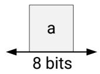
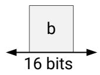
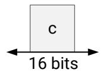
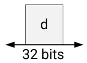
X24681-100520- 聚合（Aggregate）：聚合接口上的结构体是工具的默认行为，详见"接口中的结构体"。Vitis HLS 连接结构体元素，将结构体聚合为单一数据单元。这按 AGGREGATE pragma 或指令完成，但无需指定 pragma，因为这是接口结构体的默认行为。聚合过程也可能涉及结构体元素的位填充，以将字节结构对齐到默认 4 字节对齐或指定对齐。
提示：通过指定 -Wno-padding 为编译器标志，工具可在添加位填充结构体时发出警告。
- 对齐（Aligned）：默认情况下，Vitis HLS 将结构体对齐到 4 字节边界，填充结构体元素以对齐到 32 位宽度。但可使用 attribute((aligned(X))) 在结构体元素间添加填充以对齐到"X"字节边界。
重要："X"只能定义为 2 的幂。
attribute((aligned)) 不改变其应用变量的尺寸，但可能通过在结构体元素间插入填充来改变结构体的内存布局，结果结构体尺寸发生变化。
含自定义数据宽度（如 ap_int）的结构体数据类型以 2 的幂尺寸分配。Vitis HLS 添加填充位以将数据类型尺寸对齐到 2 的幂。
Vitis HLS 也会填充 bool 数据类型以对齐到 8 位。
下例中，结构体中 varA 的尺寸会被填充到 8 位而非 5 位。
struct example {
ap_int<5> varA;
unsigned short int varB;
unsigned short int varC;
int d;
};
图 28：对齐结构体实现
struct __attribute__((aligned(2))) example {
ap_int<5> a;
unsigned short int b;
unsigned short int c;
int d;
};
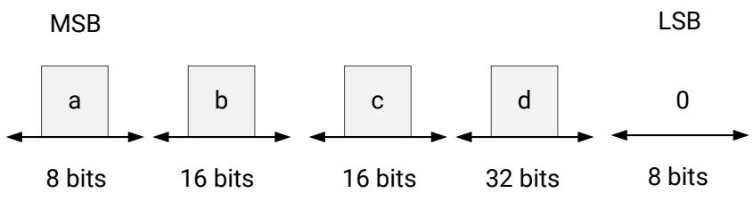
所用填充取决于结构体元素的顺序与尺寸。下例代码中，结构体对齐为 4 字节，Vitis HLS 会在第一个元素 varA 后添加 2 字节填充，在第三个元素 varC 后再添加 2 字节填充。结构体总尺寸为 96 位。
struct data_t {
short varA;
int varB;
short varC;
};
但若将结构体重写如下，则无需填充，结构体总尺寸为 64 位。
struct data_t {
short varA;
short varC;
int varB;
};
- 打包（Packed）：用 attribute((packed(X))) 指定，Vitis HLS 打包结构体元素，使结构体尺寸基于每个元素的实际尺寸。下例中结构体尺寸为 72 位。
图 29：打包结构体实现
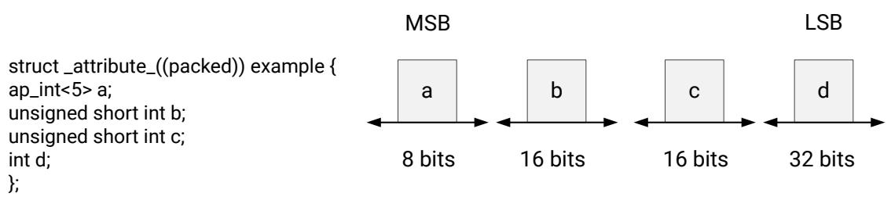
提示：这也可通过 AGGREGATE pragma 或指令的 compact=bit 选项实现。
C++ 类与模板🔗
Vitis HLS 完全支持 C++ 类的综合。综合的顶层必须是函数，类不能作为综合顶层。要综合类成员函数，需将类本身实例化到函数中。不要简单地将顶层类实例化到测试平台中。以下代码示例展示如何在顶层函数 cpp_FIR 中实例化类 CFir（定义于后续讨论的头文件中）以实现 FIR 滤波器。
#include "cpp_FIR.h"
// 实例化类的顶层函数
data_t cpp_FIR(data_t x)
{
static CFir<coef_t, data_t, acc_t> fir1;
cout << fir1;
return fir1(x);
}
重要：类与类成员函数不能作为综合顶层。请在顶层函数中实例化类。
在考察上例 C++ FIR 滤波器设计中使用的类之前，值得注意 Vitis HLS 在综合时忽略标准输出流 cout。综合时 Vitis HLS 发出以下警告：
INFO [SYNCHK-101] Discarding unsynthesizable system call:
'std::ostream::operator<<' (cpp_FIR.h:108)
...
以下代码示例展示头文件 cpp_FIR.h，包括类 CFir 及其关联成员函数的定义。此例中运算符成员函数 () 与 << 是重载运算符，分别用于执行主算法和与 cout 一起在 C/C++ 仿真时格式化数据显示。
#include <fstream>
#include <iostream>
#include <iomanip>
#include <cstdlib>
using namespace std;
#define N 85
typedef int coef_t;
typedef int data_t;
typedef int acc_t;
// 类 CFir 定义
template<class coef_T, class data_T, class acc_T>
class CFir {
protected:
static const coef_T c[N];
data_T shift_reg[N-1];
private:
public:
data_T operator()(data_T x);
template<class coef_TT, class data_TT, class acc_TT>
friend ostream& operator<<(ostream& o, const CFir<coef_TT, data_TT, acc_TT> &f);
};
// 加载 FIR 系数
template<class coef_T, class data_T, class acc_T>
const coef_T CFir<coef_T, data_T, acc_T>::c[N] = {
#include "cpp_FIR.h"
};
// FIR 主算法
template<class coef_T, class data_T, class acc_T>
data_T CFir<coef_T, data_T, acc_T>::operator()(data_T x) {
int i;
acc_t acc = 0;
data_t m;
loop: for (i = N-1; i >= 0; i--) {
if (i == 0) {
m = x;
shift_reg[0] = x;
} else {
m = shift_reg[i-1];
if (i != (N-1))
shift_reg[i] = shift_reg[i - 1];
}
acc += m * c[i];
}
return acc;
}
C++ FIR 滤波器示例中的测试平台如下代码示例所示，展示如何调用并验证顶层函数 cpp_FIR。此示例突出了 Vitis HLS 综合良好测试平台的一些重要属性：
- 输出结果与已知正确值对照检查。
- 结果确认正确时测试平台返回 0。
#include "cpp_FIR.h"
int main() {
ofstream result;
data_t output;
int retval=0;
result.open("result.dat");
for (int i = 0; i <= 250; i++)
{
output = cpp_FIR(i);
result << setw(10) << i;
result << setw(20) << output;
result << endl;
}
result.close();
retval = system("diff --brief -w result.dat result.golden.dat");
if (retval != 0) {
printf("Test failed !!!\n");
retval=1;
} else {
printf("Test passed !\n");
}
return retval;
}
cpp_FIR 的 C++ 测试平台🔗
要对类中定义的对象应用指令，可在类层级指定所需指令：
- 打开定义类的文件（通常是头文件）。
- 使用 Directives 标签应用指令。
与函数一样，类的所有实例都应用相同优化。
全局变量与类🔗
AMD 不推荐在类中使用全局变量，它们可能阻止某些优化发生。下例代码中，类用于创建滤波器组件（类 polyd_cell 用作执行移位、乘法与累加操作的组件）。
typedef long long acc_t;
typedef int mult_t;
typedef char data_t;
typedef char coef_t;
#define TAPS 3
#define PHASES 4
#define DATA_SAMPLES 256
#define CELL_SAMPLES 12
template <typename T0, typename T1, typename T2, typename T3, int N>
class polyd_cell {
private:
public:
T0 areg;
T0 breg;
T2 mreg;
T1 preg;
T0 shift[N];
int k;
T0 shift_output;
void exec(T1 *pcout, T0 *dataOut, T1 pcin, T3 coeff, T0 data, int col)
{
Function_label0:;
if (col==0) {
SHIFT:for (k = N-1; k >= 0; --k) {
if (k > 0)
shift[k] = shift[k-1];
else
shift[k] = data;
}
*dataOut = shift_output;
shift_output = shift[N-1];
}
*pcout = (shift[4*col]* coeff) + pcin;
}
};
类 polyd_cell 内有用于移位数据的循环 SHIFT。若移除循环 SHIFT 中使用的循环索引 k 并替换为 k 的全局索引（如前例所示但被注释为 static int k），Vitis HLS 无法对使用类 polyd_cell 的任何循环或函数进行流水线化。Vitis HLS 会发出以下消息：
@W [XFORM-503] Cannot unroll loop 'SHIFT' in function 'polyd_cell<char,
long long, int, char, 12>::exec' completely: variable loop bound.
使用局部非全局变量进行循环索引确保 Vitis HLS 能执行所有优化。
模板🔗
Vitis HLS 支持 C++ 中模板的综合。Vitis HLS 不支持顶层函数使用模板。这些概念的示例请参阅 GitHub 上的 Vitis-HLS-Introductory-Examples/Modeling。
重要：顶层函数不能是模板。
使用模板创建唯一实例🔗
模板函数中的静态变量会针对模板参数的每个不同值进行复制。
传递给函数的不同 C++ 模板值为每个模板值创建函数的唯一实例。Vitis HLS 在各自上下文中独立综合这些副本。这很有益，因为工具可为每个唯一实例提供特定优化，产生函数的直接实现。
template<int NC, int K>
void startK(int* dout) {
static int acc=0;
acc += K;
*dout = acc;
}
void foo(int* dout) {
startK<0,1> (dout);
}
void goo(int* dout) {
startK<1,1> (dout);
}
int main() {
int dout0,dout1;
for (int i=0;i<10;i++) {
foo(&dout0);
goo(&dout1);
cout <<"dout0/1 = "<<dout0<<" / "<<dout1<<endl;
}
return 0;
}
使用模板实现递归🔗
模板也可用于实现标准 C 综合中不支持的递归形式（"递归函数"）。
以下代码示例展示使用模板化结构体实现尾递归 Fibonacci 算法的情形。执行综合的关键是使用终止类来实现递归中的最后一次调用，其中模板尺寸为 1。
// 尾递归调用
template<data_t N> struct fibon_s {
template<typename T>
static T fibon_f(T a, T b) {
return fibon_s<N-1>::fibon_f(b, (a+b));
}
};
// 终止条件
template<> struct fibon_s<1> {
template<typename T>
static T fibon_f(T a, T b) {
return b;
}
};
void cpp_template(data_t a, data_t b, data_t &dout){
dout = fibon_s<FIB_N>::fibon_f(a,b);
}
枚举类型🔗
以下代码示例中的头文件定义了一些 enum 类型并在结构体中使用它们。该结构体又被用于另一个结构体。这允许直观地描述复杂类型。
以下代码示例展示如何指定并综合复杂 define（MAD_NSBSAMPLES）语句。
#include <stdio.h>
enum mad_layer {
MAD_LAYER_I = 1,
MAD_LAYER_II = 2,
MAD_LAYER_III = 3
};
enum mad_mode {
MAD_MODE_SINGLE_CHANNEL = 0,
MAD_MODE_DUAL_CHANNEL = 1,
MAD_MODE_JOINT_STEREO = 2,
MAD_MODE_STEREO = 3
};
enum mad_emphasis {
MAD_EMPHASIS_NONE = 0,
MAD_EMPHASIS_50_15_US = 1,
MAD_EMPHASIS_CCITT_J_17 = 3
};
typedef signed int mad_fixed_t;
typedef struct mad_header {
enum mad_layer layer;
enum mad_mode mode;
int mode_extension;
enum mad_emphasis emphasis;
unsigned long long bitrate;
unsigned int samplerate;
unsigned short crc_check;
unsigned short crc_target;
int flags;
int private_bits;
} header_t;
typedef struct mad_frame {
header_t header;
int options;
mad_fixed_t sbsample[2][36][32];
} frame_t;
#define MAD_NSBSAMPLES(header) \
((header)->layer == MAD_LAYER_I ? 12 : \
(((header)->layer == MAD_LAYER_III && \
...
不支持的 C/C++ 构造🔗
提示：还有其他不支持的 C/C++ 构造。此清单并非详尽无遗，而是提供与某些不支持构造相关的细节。
虽然 HLS 编译器支持广泛的 C/C++ 语言，但某些构造不可综合，或可能在设计流程后续导致错误。本节讨论为使函数能被综合并在器件中实现而必须进行编码更改的方面。
要被综合：
- 函数及其调用必须包含设计的全部功能。
- 功能不能由对操作系统的系统调用完成。
- C/C++ 构造必须具有固定或有界尺寸。
- 这些构造的实现必须无歧义。
系统调用🔗
系统调用不可综合，因为它们是与运行 C/C++ 程序的操作系统执行某些任务相关的动作。
Vitis HLS 忽略常用的、仅显示数据且对算法执行无影响的系统调用，如 printf() 与 fprintf(stdout,)。一般而言，对系统的调用不可综合，应在综合前从函数中移除。此类调用的其他示例有 getc()、time()、sleep()，它们都对操作系统进行调用。
Vitis HLS 在执行综合时定义宏 SYNTHESIS。这允许 SYNTHESIS 宏从设计中排除不可综合的代码。
注意：只在待综合代码中使用 SYNTHESIS 宏。不要在测试平台中使用此宏，因为 C/C++ 仿真或 C/C++ RTL 协同仿真不遵守它。
注意：不得在代码中或通过编译器选项定义或取消定义 SYNTHESIS 宏，否则编译可能失败。
以下代码示例中，子函数的中间结果被保存到硬盘上的文件中。SYNTHESIS 宏用于确保综合时忽略不可综合的文件写入。
#include "hier_func4.h"
int shift_func(dint_t *in1, dint_t *in2, dout_t *outA, dout_t *outB)
{
*outA = *in1 >> 1;
*outB = *in2 >> 2;
}
void hier_func4(din_t A, din_t B, dout_t *C, dout_t *D)
{
dint_t apb, amb;
sumsub_func(&A,&B,&apb,&amb);
#ifndef __SYNTHESIS_
FILE *fp1; // 以下代码在综合时被忽略
char filename[255];
sprintf(filename,"Out_apb_%03d.dat",apb);
fp1=fopen(filename,"w");
fprintf(fp1, "%d \n", apb);
fclose(fp1);
#endif
shift_func(&apb,&amb,C,D);
}
SYNTHESIS 宏是排除不可综合代码而无需从函数中移除代码本身的便捷方式。使用此类宏确实意味着仿真代码与综合代码现在不同。
注意：若 SYNTHESIS 宏用于更改 C/C++ 代码功能，可能导致 C/C++ 仿真与 C/C++ 综合结果不同。此类代码中的错误本质上难以调试。不要使用 SYNTHESIS 宏更改功能。
动态内存使用🔗
任何管理系统内内存分配的系统调用（如 malloc()、alloc()、free()）都使用操作系统内存中存在、在运行时创建与释放的资源。要能综合硬件实现，设计必须完全自包含，指定所有所需资源。
内存分配系统调用必须在综合前从设计代码中移除。由于动态内存操作用于定义设计功能，必须将其转换为等效的有界表示。以下代码示例展示使用 malloc() 的设计如何转换为可综合版本，并突出两种有用的编码风格技术：
- 设计不使用 SYNTHESIS 宏。
- 使用用户自定义宏 NO_SYNTH 在可综合与不可综合版本之间选择。这确保 C/C++ 仿真与 Vitis HLS 综合的是相同代码。
- 使用 malloc() 的原始设计中的指针无需重写以与固定尺寸元素配合。
- 可创建固定尺寸资源，现有指针只需指向固定尺寸资源。此技术可避免对现有设计的手动重编码。
#include "malloc_removed.h"
#include <stdlib.h>
//#define NO_SYNTH
dout_t malloc_removed(din_t din[N], dsel_t width)
{
#ifdef NO_SYNTH
long long *out_accum = malloc (sizeof(long long));
int* array_local = malloc (64 * sizeof(int));
#else
long long _out_accum;
long long *out_accum = &_out_accum;
int _array_local[64];
int* array_local = &_array_local[0];
#endif
int i,j;
LOOP_SHIFT:for (i=0;i<N-1; i++) {
if (i<width)
*(array_local+i)=din[i];
else
*(array_local[i])=din[i]>>2;
}
*out_accum=0;
LOOP_ACCUM:for (j=0;j<N-1; j++) {
*out_accum += *(array_local+j);
}
return *out_accum;
}
由于此处的编码更改影响设计功能，AMD 不推荐使用 SYNTHESIS 宏。AMD 建议执行以下步骤：
- 将用户自定义宏 NO_SYNTH 添加到代码并修改代码。
- 启用宏 NO_SYNTH，执行 C/C++ 仿真并保存结果。
- 禁用宏 NO_SYNTH，执行 C/C++ 仿真验证结果相同。
- 在禁用用户自定义宏的情况下执行综合。
此方法确保更新后的代码经 C/C++ 仿真验证，然后综合相同代码。与 C/C++ 中动态内存使用限制类似，Vitis HLS 不支持（用于综合）动态创建或销毁的 C/C++ 对象。
指针限制🔗
一般指针转换🔗
Vitis HLS 不支持一般指针转换，但支持原生 C/C++ 类型之间的指针转换。
指针数组🔗
Vitis HLS 支持指针数组的综合，前提是每个指针指向标量或标量数组。指针数组不能指向额外指针。
函数指针🔗
不支持函数指针。
注意：不支持指向指针的指针。
递归函数🔗
递归函数不可综合。这适用于可形成多次递归的函数：
unsigned foo (unsigned n)
{
if (n == 0 || n == 1) return 1;
return (foo(n-2) + foo(n-1));
}
Vitis HLS 也不支持尾递归（即有有限次函数调用的递归）。
unsigned foo (unsigned m, unsigned n)
{
if (m == 0) return n;
if (n == 0) return m;
return foo(n, m%n);
}
在 C++ 中，模板可实现尾递归，然后用于可综合的尾递归设计。
注意：不支持虚函数。
标准模板库🔗
许多 C++ 标准模板库（STL）包含函数递归并使用动态内存分配。因此，STL 不可被 Vitis HLS 综合。STL 的解决方案是创建具有相同功能、不含递归、动态内存分配或对象动态创建与销毁的本地函数。
注意：标准数据类型（如 std::complex）支持综合。但 Vitis HLS 不支持 std::complex
未定义行为🔗
C/C++ 未定义行为可能导致仿真与综合行为不同。此行为示例如下：
for (int i=0; i<N; i++) {
int val; // 未初始化值
if (i==0) val=0;
else if (cond) val=1;
// val 可能具有不确定值
A[i] = val; // 未定义行为
val++; // 死代码
}
上例中，若 i==0 与 (cond) 都不为真，不应期望 A[i] 获得上一次循环迭代的 val 值。甚至不应期望自增（val++）会发生。对完全分区后获得的标量值也是如此。
对此类 C/C++ 未定义行为情形，CPU 编译器与 Vitis HLS 编译代码时的行为可能不同，这将导致 RTL/协同仿真期间不匹配。这是因为为 CPU 编译时，val 常留在同一寄存器或同一栈位置跨循环迭代，因此行为是 val 值在循环迭代间保留。
解决方案是：要么在每次迭代初始化 val（若这是预期行为），要么将 val 声明移到循环之上（足够高），使其生命期作用域匹配意图复用。不应期望编译器从未定义 C/C++ 行为推断特定定义的 RTL 行为。
虚函数与指针🔗
不支持。
HLS 设计的接口🔗
C++ 代码完成后，综合将其转换为 RTL 设计时，硬件实现的某些元素也在您的控制之下。具体而言，需要考虑 HLS 设计的输入与输出、存储布局与数据对齐管理、HLS 设计的执行模型。本节讨论以下主题：
- 接口定义
- Vitis HLS 存储布局模型
- HLS 设计的执行模式
- 控制初始化与复位行为
接口定义🔗
接口综合简介🔗
HLS 组件中顶层函数的参数被综合为接口与端口，多个信号组合在一起定义 HLS 组件与设计外部元素之间的通信协议。工具自动定义接口，使用行业标准指定所用协议。工具选择的接口类型取决于顶层函数参数的数据类型与方向、HLS 组件的目标流程、"接口配置"中所述的默认接口配置设置，以及任何指定的 INTERFACE pragma 或指令。
提示：可使用 INTERFACE pragma 或指令手动分配接口。更多信息请参阅"添加 Pragma 与指令"。
HLS 组件支持的目标流程包括以下（详见"目标流程概述"）：
- AMD Vivado™ IP 流程，工具的默认流程
- Vitis 内核流程，Vitis 应用加速开发流程的自底向上设计流程
可在创建 HLS 组件时指定目标流程，详见"第三部分：Vitis HLS 流程步骤"。
接口定义内核的三个元素：
- 接口为数据流入或流出 HLS 设计定义通道。数据可来自内核或 IP 外部的多种来源，如主机应用、外部摄像头或传感器，或来自 AMD 器件上实现的另一内核或 IP。Vitis 内核的默认通道为 AXI 适配器，详见"Vitis 内核流程的接口"。
- 接口定义用于控制数据通道数据流的端口协议，定义数据何时有效、可读或可写，详见"Vivado IP 流程的端口级协议"。
提示：这些端口协议可在 Vivado IP 流程中自定义，但在 Vitis 内核流程中大多数情况下已设定且不可更改。
- 接口还定义 HLS 设计的执行控制方案，指定内核或 IP 的操作为流水线或顺序，详见"块级控制协议"。
如"M_AXI 接口设计最佳实践"所述，接口的选择与配置是设计成功的关键。但工具通过为上述目标流程选择默认接口来简化流程。
综合完成后，可在综合摘要报告的"SW I/O Information"部分查看 C/C++ 代码软件参数到硬件端口或接口的映射。
Vitis 内核流程的接口🔗
Vitis 内核流程支持编译内核对象（.xo），用于主机应用的软件控制与 Xilinx 运行时（XRT）。如"Data Center Acceleration using Vitis (UG1700) 中的 PL Kernel Properties"所述，此流程有 Vitis HLS 必须满足的非常具体的接口要求。
Vitis HLS 支持存储、流与寄存器接口范式，每种范式遵循特定接口协议并使用适配器与外部世界通信。
- 存储范式（m_axi）：内核通过存储（如 DDR、HBM、PLRAM/BRAM/URAM）访问数据。
- 流范式（axis）：数据从另一流式来源（如视频处理器或另一内核）流入内核，也可从内核流出。
- 寄存器范式（s_axilite）：内核通过寄存器接口访问数据，软件以寄存器读/写访问。
提示：AXI 协议要求低有效复位。若复位为高有效（默认设置），工具会带警告定义此复位。
Vitis 内核流程默认实现以下接口：
| C 参数类型 | 范式 | 接口协议（I/O/Inout） |
|---|---|---|
| 标量（按值传递） | 寄存器 | AXI4-Lite（s_axilite） |
| 数组 | 存储 | AXI4 Memory Mapped（m_axi） |
| 指向数组的指针 | 存储 | m_axi |
| 指向标量的指针 | 寄存器 | s_axilite |
| 引用 | 寄存器 | s_axilite |
| hls::stream | 流 | AXI4-Stream（axis） |
如表所示，指向数组的指针实现为 m_axi 接口用于数据传输，而指向标量的指针使用 s_axilite 接口实现。作为常量传递的标量值无需读访问，而指向标量值的指针需要读/写访问。s_axilite 接口根据 C 参数类型实现额外的内部协议。此内部实现可由"Vivado IP 流程的端口级协议"控制。但除非必要，不应在 Vitis 内核流程中修改默认端口协议。
注意：当结构体/类元素需要不同接口类型时，Vitis HLS 不会自动推断其成员元素的默认接口。例如，结构体一个元素需要流接口而另一成员元素需要 s_axilite 接口时。必须为结构体每个元素显式定义 INTERFACE pragma，而非依赖默认接口分配。若未定义 INTERFACE pragma 或指令，Vitis HLS 发出以下错误消息：
ERROR: [HLS 214-312] Vitis mode requires explicit INTERFACE
pragmas for structs in the interface. Please add one INTERFACE pragma for
each struct member field for argument 'd' of function 'dut(A&)' (example.cpp:19:0)
Vitis 内核流程的默认执行模式为流水线执行，启用内核重叠执行以提升吞吐量。这由 s_axilite 接口上的 ap_ctrl_chain 块控制协议指定。
提示：Vitis 环境支持具有所有受支持块控制协议的内核，详见"块级控制协议"。
以下代码中的 vadd 函数提供了接口综合示例。
#define VDATA_SIZE 16
typedef struct v_datatype { unsigned int data[VDATA_SIZE]; } v_dt;
extern "C" {
void vadd(const v_dt* in1, // 只读向量 1
const v_dt* in2, // 只读向量 2
v_dt* out_r, // 加法输出结果
const unsigned int size // 整数尺寸
) {
unsigned int vSize = ((size - 1) / VDATA_SIZE) + 1;
// 自动流水线将对此循环应用流水线
vadd1:
for (int i = 0; i < vSize; i++) {
vadd2:
for (int k = 0; k < VDATA_SIZE; k++) {
out_r[i].data[k] = in1[i].data[k] + in2[i].data[k];
}
}
}
}
vadd 函数包括：
- 两个指针输入：in1 与 in2
- 一个指针输出：out_r，结果写入其中
- 一个标量值 size
使用 Vitis HLS 为 Vitis 内核流程使用的默认接口综合设置，设计被综合为具有下图所示端口与接口的 RTL 块。
M_AXI 接口设计最佳实践🔗
对于实现 AMD Vitis™ 内核的设计师，在使用 FPGA 器件上可用的器件存储（PLRAM、HBM 与 DDR）时，有各种折中可选。以下是设计 AXI4 存储映射接口时应使用的最佳实践清单。
以吞吐量为首要优化目标时，显然使用宏观与微观架构优化来加速应用的计算部分是第一步，但与内核之间传输数据所耗费的时间也会影响应用架构相对吞吐目标的取舍。由于数据传输开销高，考虑让计算与应用中的通信（数据移动）重叠很重要。
针对您的应用：
- 通过构建生产者-消费者任务流水线来分解内核算法，使用 Load、Compute、Store（LCS）编码模式建模。
- 所有外部 I/O 访问必须在 Load 与 Store 任务中。
- 若内核需并行从不同端口读或写，应有多个 Load 或 Store 任务。
- Compute 任务应只有标量、数组、流或块流参数。
- 确保所有这些任务（以函数指定）能以重叠方式执行（编译器借此启用任务级并行）。
- Compute 任务可进一步拆分为更小的计算任务，从而带来流水线化等进一步优化。相同 LCS 规则也适用于这些更小的计算函数。
- 始终使用本地存储向 Compute 任务传递数据或从中读取数据。
- Load 与 Store 块负责尽可能高效地在全局存储与 Compute 块之间移动数据。
- 一端，它们必须按内核内 Compute 任务所要求的（时序）顺序通过流式接口读或写数据。
- 另一端，它们必须按软件应用设定的（空间）排列顺序通过存储映射接口读或写数据。
- 改变对数据访问的思维方式是用 HLS 构建正确硬件设计的关键。
- 在软件中，常思考数据如何被"访问"（算法拉取所需数据）。
- 在硬件中，思考数据如何"流过"算法更高效（数据被推送给算法）。
- 在软件中，您推理数组索引与"何处"访问数据。
- 在硬件中，您推理流与"何时"访问数据。
- 全局存储访问时间长（DRAM、HBM），其带宽有限（DRAM）。为减少全局存储访问开销，接口函数需要：
- 访问足够大的连续数据块（以受益于 AXI 突发传输）。
- 顺序访问数据会产生更大突发（与更高数据吞吐效率），相比之下随机和/或乱序访问的突发分析会失败。
- 避免冗余访问（以保留带宽）。
- 许多情形下，Compute 任务进出数据的顺序与全局存储中数据的排列顺序不同。此时优化接口函数需创建内部缓存结构，收集足够数据并适当组织，以最小化全局存储访问开销，同时能满足流式接口期望的顺序。为简化数据移动逻辑，开发者也可考虑以不同方式在存储中存放数据。例如，以列主序访问 DRAM 中数据可能非常低效。与其在内核中实现专用数据搬运器，不如在软件中转置数据并以行主序存储，这将极大简化硬件访问模式。
- 最大化接口端口宽度，即每个 AXI 端口的位宽，将其设为 512 位（64 字节）。使用 hls::vector 或 ap_(u)int<512> 作为端口数据类型以推断最大突发长度。接口中使用结构体可能导致突发性能不佳。
- 访问全局存储代价高昂，因此访问更大字长更高效。
- 把接口端口想象为向内核输送数据的管道。管道越宽，能访问与处理并送回的数据越多。
- 从全局器件存储传输大数据块。一次大传输比多次小传输更高效。带宽受 PCIe 性能限制。运行 DMA 测试测量 PCIe 有效最大吞吐量，读与写通常分别在 10-17 GBps 范围。
- 存储资源包括 PLRAM（小尺寸但访问快、延迟最低）、HBM（中等尺寸与访问速度、有一些延迟）与 DRAM（大尺寸但访问慢、高延迟）。
- 由于读的异步性质，分布式 RAM 适合快速缓冲。可立即使用读到的值，而非等待下一时钟周期。也可用分布式 RAM 创建小 ROM。但分布式 RAM 不适合大存储，对大于约 128 位的存储，使用块 RAM 或 UltraRAM 可获得更好性能（与更低功耗）。
- 决定最佳并发端口数，例如并发 AXI（存储映射）端口数。
- 若 Load 任务需获取多组输入数据喂给 Compute 任务，可选择使用多个接口端口并行访问此数据。但数据需存储在不同存储体中，否则访问会被串行化。FPGA 上最多有 4 个 DDR 存储体，而 HBM 有 32 个通道。
- 当多个进程访问同一存储端口或存储体时，仲裁器会使这些对同一存储端口或存储体的并发访问串行化。
- 设置合适的突发长度，即每个 AXI 端口的最大突发访问长度（以元素数计）。将突发长度设为等效于最大 4KB 传输。例如，使用 512 位（64 字节）AXI 数据宽度时，突发长度应设为 64。
- 突发传输数据可隐藏存储访问延迟，提升带宽利用率与存储控制器效率。
- 编写应用代码以推断对全局存储读与写的最大长度突发。
- 设置 AXI 端口在停顿前可维持的未完成存储请求数。设置合理数量的未完成请求允许系统在停顿前提交多个存储请求——这种请求流水线化让系统以额外 BRAM/URAM 资源为代价隐藏部分存储延迟。
顶层性能 pragma🔗
顶层性能 pragma🔗
顶层性能 pragma 提供一种机制，用于定义分配给设计顶层的性能目标。它构成一个吞吐量约束，作为高级指令指导综合工具相对该目标优化设计。
使用顶层性能 pragma 时，编译器进行全设计吞吐量分析。它评估若干待推断的 pragma 以确定满足吞吐量目标的可行性。基于其分析，工具自动为整个设计层次中的各个循环与循环嵌套推断合适的循环级性能 pragma。
循环级性能 pragma🔗
循环级性能 pragma 应用于个别循环以显式指导工具。这些 pragma 可由顶层性能 pragma 算法自动推断与校准，也可由用户手动应用。它们通过自动推断一个或多个经典低层 pragma（如 pipeline、unroll、flatten、reshape、partition）启用细粒度性能变换。
收益🔗
- 精确控制循环行为：循环级 pragma 让设计师能针对吞吐量优化特定循环，对关键路径性能有更大控制。
- 支持自顶向下目标：与顶层性能 pragma 一起使用时，循环级 pragma 是帮助弥合当前性能与指定系统级目标之间差距的具体旋钮。
性能 pragma 方法论🔗
顶层性能 pragma 方法论是指导优化过程并达成严苛带宽目标的简化方法。
基于吞吐量目标计算性能目标。
计算视频应用的性能目标示例
- 假设一个图像处理设计目标为每秒 60 帧（60 fps）。
- 步骤 1：确定总帧数
- 每秒总帧数 = 60。
- 步骤 2：确定顶层性能目标（target_ti）
- 要达到 60 FPS 帧率，函数 top 必须在 1/60 秒内准备好重启并读取新帧。
- target_ti = 1/FPS = 1/60 ≈ 16.67 毫秒
- 这意味着函数 top 必须在 16.7 毫秒内准备好重启并读取新帧以维持 60 FPS 目标。
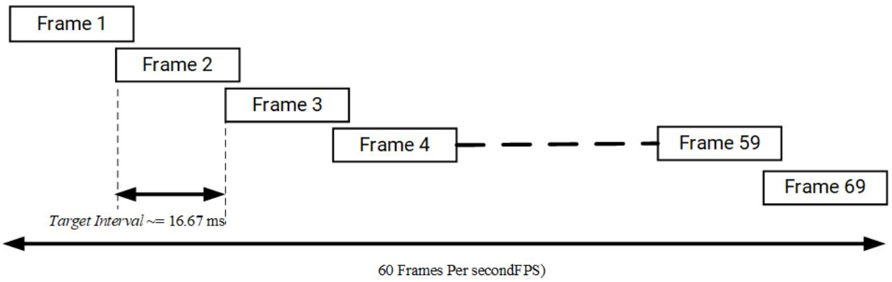
步骤 3：为数据流重构代码
在应用性能 pragma 并深入任何 AMD Vitis™ HLS 优化之前，确保代码结构适合高效硬件实现很重要。这涉及按规范数据流形式创建任务（循环与函数）。这将为 AMD Vitis™ HLS 有效优化代码并实现并行性打下坚实基础。
步骤 4：运行 CSIM 并确定循环次数🔗
- 方法论的下一步是运行 C 仿真。C 仿真期间，启用循环 tripcount 性能分析选项以自动捕获实际循环迭代次数。此数据很关键，因为性能 pragma 算法必须精确预算设计中的所有循环；精确 tripcount 避免依赖默认假设并提升性能估计的保真度。C 仿真期间，启用循环 tripcount 性能分析选项以自动捕获实际循环迭代次数。该指标重要，因为性能 pragma 算法需精确预算设计中的所有循环。默认情况下，性能 pragma 将变长循环的循环边界估计为"1024"，这可能导致对边界大于 1024 的循环性能估计不准确。
- 参阅"CSIM Loop Tripcount Option"。
步骤 5：添加顶层性能目标
- 方法论的下一步是应用性能目标。使用 target_ti 参数（目标间隔），直接在代码中指定所需性能目标，如下所示。要满足 60 fps 帧率，target_ti 应为 16.7 毫秒。
#pragma HLS performance target_ti = <> ms/cycles
步骤 6：识别瓶颈循环（若有）🔗
- 运行 C 综合：应用顶层性能 pragma 后，在 AMD Vitis™ HLS 中运行 C 综合。
- 分析报告：仔细检查 C 综合报告。识别不满足 target_ti 要求的循环/函数。
步骤 7：添加/更新局部性能目标🔗
- 对识别为瓶颈的关键循环，使用相同 target_ti 参数指定循环级性能目标。这引导 AMD Vitis™ HLS 将优化工作聚焦于这些循环。
- 重新运行 C 综合并分析更新后的报告。继续细化循环级目标直到设计满足整体性能目标。
- 通过遵循此使用性能 pragma 的分析与细化迭代过程，您可以引导 AMD Vitis™ HLS 在硬件设计中达成最优性能。
理解顶层性能 pragma 的优化策略🔗
性能 pragma：时序约束的优先级🔗
性能 pragma 的首要优化目标是满足指定时序要求。它优先达成时序约束，不会为试图满足性能目标而牺牲时序约束。因此，即使性能目标未完全达成，pragma 也确保设计满足其时序要求。若所需性能目标未满足，建议使用更细粒度的经典 pragma 如 unroll 与 pipeline 进一步增强性能而不违反既定时序约束。
为顶层性能 pragma 优化重构代码🔗
- 要有效利用顶层性能 pragma，设计需重构为 Load-compute-store（LCS）范式并使用 dataflow pragma。
动态 tripcount 信息🔗
- C 仿真期间启用循环 tripcount 性能分析选项以自动捕获实际循环迭代次数。没有循环 tripcount 时，性能 pragma 将动态循环的循环边界估计为"1024"，可能导致边界大于 1024 的循环性能估计不准确。
- 对变长循环，用户应使用 HLS tripcount pragma（
pragma HLS loop_tripcount max=N）提供动态 tripcount 信息。
锁定推断的 pragma🔗
将性能 pragma 推断的低层 pragma 与任何手动指定的 pragma 导出到用户配置文件。将这些 pragma 重新注入源代码或指令文件以锁定所选优化。这防止性能预算器在后续运行中重新探索 pragma 组合，减少额外周期并缩短迭代时间。
限制🔗
pragma 优先级🔗
以下准则概述了应用于循环与数组时各种 pragma 的优先级：
- PIPELINE OFF pragma：对循环应用 PIPELINE OFF pragma 时，"循环级性能 pragma"不会为该循环自动推断 PIPELINE pragma。
- UNROLL OFF pragma：对循环应用 UNROLL OFF pragma 阻止"循环级性能 pragma"为该循环推断任何 UNROLL pragma。
- FLATTEN pragma：若对循环使用 FLATTEN pragma，不允许"循环级性能 pragma"推断任何其他 FLATTEN pragma。
- ARRAY_PARTITION OFF pragma：对局部数组应用 ARRAY_PARTITION OFF 时，阻止"循环级性能 pragma"在该数组上推断任何 ARRAY_PARTITION pragma。
接口端口限制🔗
优化技术与故障排除提示🔗
本节概述了您可用于指导 AMD Vitis™ HLS 产生满足所需性能与面积目标的微观架构的各种优化技术。使用 Vitis HLS，您可以对设计应用不同优化指令，包括：
- 流水线化任务，允许任务的下一次执行在当前执行完成前开始。
- 为函数、循环与区域的完成指定目标延迟。
- 指定所用资源数量限制。
- 覆盖代码中固有或隐含的依赖以允许特定操作。例如，若可接受丢弃或忽略初始数据值（如视频流中），允许存储器先读后写以获得更好性能。
- 指定 I/O 协议以确保函数参数能连接到具有相同 I/O 协议的其他硬件块。
注意：Vitis HLS 自动确定任何子函数使用的 I/O 协议。您无法控制这些端口，除了指定端口是否寄存。
理解从 C/C++ 源代码综合出 RTL 硬件描述的过程很有帮助。"理解高层次综合的调度与绑定"描述了此过程的一些重要细节，帮助您更好地理解如何为之优化。
您可以使用各种 HLS pragma 将优化指令直接作为编译器 pragma 添加到源代码中，或如"添加 Pragma 与指令"所述将指令作为配置命令使用。下表列出了 HLS 编译器以 pragma 或配置命令形式提供的优化指令。
表 19：Vitis HLS 优化指令
| 指令 | 说明 |
|---|---|
| AGGREGATE | AGGREGATE pragma 用于将结构体所有元素分组成单一宽向量，以允许同时读写结构体所有成员。 |
| ALIAS | ALIAS pragma 通过定义访问同一 DRAM 缓冲的多个指针间距离，在 Vitis HLS 中启用数据依赖分析。 |
| ALLOCATION | 指定所用操作、实现或函数数量限制，可强制共享硬件资源并可能增加延迟。 |
| ARRAY_PARTITION | 将大数组分区为多个更小数组或单个寄存器，以改善数据访问并消除块 RAM 瓶颈。 |
| ARRAY_RESHAPE | 将数组从多元素重塑为更宽字宽的数组，有助于在不使用更多块 RAM 的情况下改善块 RAM 访问。 |
| BIND_OP | 为操作定义特定 RTL 实现。 |
| BIND_STORAGE | 为 RTL 中的存储元素或存储器定义特定实现。 |
| DATAFLOW | 启用任务级流水线化，允许函数与循环并发执行，用于优化吞吐量和/或延迟。 |
| DEPENDENCE | 用于提供额外信息以克服循环携带依赖，允许循环被流水线化（或以更低间隔流水线化）。 |
| DISAGGREGATE | 将结构体分解为单个元素。 |
| EXPRESSION_BALANCE | 允许关闭自动表达式平衡。 |
| INLINE | 内联函数，移除此层级的函数层次。用于跨函数边界启用逻辑优化并通过减少函数调用开销改善延迟/间隔。 |
| INTERFACE | 指定如何从函数描述创建 RTL 端口。 |
| LATENCY | 允许指定最小与最大延迟约束。 |
| LOOP_FLATTEN | 允许嵌套循环折叠为单一循环以改善延迟。 |
| LOOP_MERGE | 合并连续循环以减少总体延迟、增加共享并改善逻辑优化。 |
| LOOP_TRIPCOUNT | 用于变长循环，提供循环迭代次数估计。对综合无影响，仅影响报告。 |
| OCCURRENCE | 流水线化函数或循环时使用，指定某位置代码以低于包裹函数或循环的速率执行。 |
| PERFORMANCE | 为循环指定所需事务间隔，让工具决定达成结果的最佳方式。 |
| PIPELINE | 通过允许循环或函数内操作重叠执行来降低启动间隔。 |
| PROTOCOL | 此命令指定一代码区域（协议区域），其中除非代码显式指定，否则 Vitis HLS 不会插入时钟操作。 |
| RESET | 此指令用于在特定状态变量（全局或静态）上添加或移除复位。 |
| STABLE | 表示数据流区域的变量输入或输出在生成数据流区域入口与出口同步时可被忽略。 |
| STREAM | 指定特定数组在数据流优化期间实现为 FIFO 或 RAM 存储通道。使用 hls::stream 时，STREAM 优化指令用于覆盖 hls::stream 的配置。 |
| TOP | 综合的顶层函数在项目设置中指定。此指令可用于将任何函数指定为综合顶层，从而允许同一项目内不同方案指定为综合顶层函数而无需创建新项目。 |
| UNROLL | 展开 for 循环以创建循环体及其指令的多个实例，可独立调度。 |
除优化指令外，Vitis HLS 还提供若干可影响综合结果性能的配置命令。使用配置命令的详情见"HLS 配置文件命令"。下表反映其中部分命令。
表 20：Vitis HLS 配置
| GUI 指令 | 说明 |
|---|---|
| 数组分区配置 | 确定数组如何分区，包括全局数组及分区是否影响数组端口。 |
| 编译选项 | 控制综合特定优化，如自动循环流水线化与浮点数学优化。 |
| 数据流配置 | 指定数据流优化中的默认存储通道与 FIFO 深度。 |
| 接口配置 | 控制不与顶层函数参数关联的 I/O 端口，并允许从最终 RTL 中消除未用端口。 |
| 运算符配置 | 配置指定操作的默认延迟与实现。 |
| RTL 配置 | 提供对输出 RTL 的控制，包括文件与模块命名及复位控制。 |
| 调度设置 | 确定综合调度阶段使用的努力级别与输出消息的详细程度。 |
| 存储配置 | 配置指定存储类型的默认延迟与实现。 |
| 展开设置 | 配置展开循环的默认 tripcount 阈值。 |
理解高层次综合的调度与绑定🔗
高层次综合工具将无时序高级规约转换为完全时序的实现。在此转换期间，实现定制架构以满足规约要求。生成的架构包含数据通路、控制逻辑、存储接口以及 RTL 与外部世界通信的方式。数据通路由一组存储元素（如寄存器、寄存器文件或存储器）、一组功能单元（如 ALU、乘法器、移位器及其他自定义函数）与互连元素（如三态驱动器、多路复用器与总线）组成。每个组件可执行一个或多个时钟周期，可被流水线化，可有输入或输出寄存器。此外，整个数据通路与控制器可被流水线化为多级。
设计师应在项目早期投入重新定义算法架构，以在保持算法于更高层级的同时满足性能。对任何特定 HLS 工具，都需遵循设计原则与最佳实践以生成满足预期性能的优化 RTL。
HLS 工具执行以下任务，如下图所示。
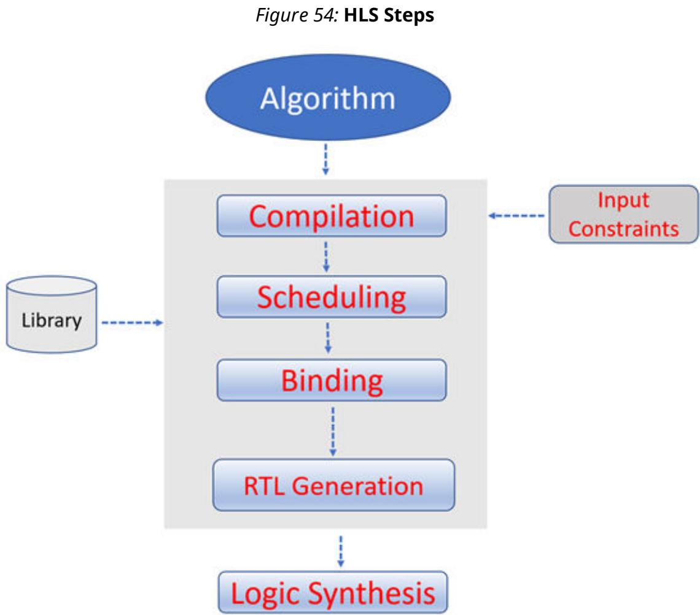
- 编译为满足规约而编写的算法：此步包括若干代码优化，如死代码消除、常量折叠、报告不支持构造等。
- 为给定时钟周期调度操作：
a. "调度"阶段基于以下因素确定哪些操作在每时钟周期发生：
- 操作依赖何时满足或可用。
- 时钟周期长度或时钟频率。
- 操作完成所需时间（由目标器件定义）。更长时钟周期内可完成更多操作。某些操作可能需实现为多周期资源。HLS 自动在更多时钟周期上调度操作。
- 可用资源。
- 合并任何用户指定的优化指令。 b. "调度"阶段期间，工具确定什么运算符在给定周期执行及需要多少这些组件。下一步确定什么操作绑定到什么资源。
- 将操作绑定到功能组件、将变量绑定到存储元素： a. 绑定任务分配硬件资源以实现每个调度操作，并将运算符（如加、乘、移位）映射到特定 RTL 实现。例如，mult 操作可在 RTL 中实现为组合或流水线化乘法器。 b. 绑定任务将存储器、寄存器或其组合分配给函数内数组变量以满足所需性能。 c. 若多个操作使用同一资源，此步可执行不在同周期使用的资源共享。
- 控制逻辑提取创建有限状态机（FSM），按定义的调度对 RTL 设计中的操作排序。
- 创建与外部世界通信的逻辑：生成的 RTL 将与外部世界通信，如从外部端口流式传输数据、启动/停止逻辑或访问外部存储。
- 最后，生成 RTL 架构。
下一节从概念上讲解 HLS 工具通常如何基于时钟周期等输入约束调度运算符并将其绑定到可用硬件资源。
调度与绑定示例🔗
下图展示了此代码示例的调度与绑定阶段：
int foo(char x, char a, char b, char c) {
char y;
y = x*a+b+c;
return y;
}
图 55：调度与绑定示例
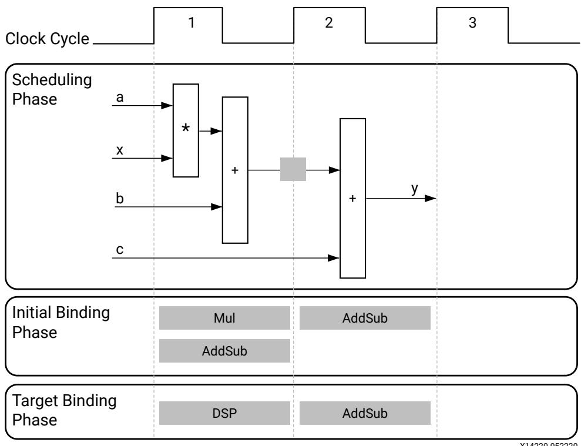
此例的调度阶段，高层次综合调度以下操作在每时钟周期发生：
- 第一时钟周期：乘法与第一次加法
- 第二时钟周期：第二次加法（若第一次加法结果在第二周期可用）与输出生成
注意：上图中第一与第二时钟周期之间的方框表示内部寄存器存储变量的时刻。此例中高层次综合只要求加法输出跨时钟周期寄存存。第一周期读取 x、a、b 数据端口。第二周期读取数据端口 c 并生成输出 y。
在最终硬件实现中，高层次综合将顶层函数的参数实现为输入与输出（I/O）端口。此例中参数为简单数据端口。由于每个输入变量为 char 类型，输入数据端口都为 8 位宽。函数返回为 32 位 int 数据类型，输出数据端口为 32 位宽。
重要：在硬件中实现 C 代码的优势在于所有操作在更少时钟周期内完成。此例中操作仅两时钟周期完成。在 CPU 中，即使是此简单代码示例也需更多时钟周期完成。
此例的初始绑定阶段，高层次综合使用组合乘法器（Mul）实现乘法操作，使用组合加法器/减法器（AddSub）实现两次加法操作。
此例的目标绑定阶段，高层次综合使用 DSP 模块资源实现乘法器与其中一次加法操作。某些应用使用许多二进制乘法器与累加器，最适合在专用 DSP 资源中实现。DSP 模块是 FPGA 架构中可用的计算块，提供高性能与高效实现的理想平衡。
控制逻辑提取与 I/O 端口实现示例🔗
下图展示了此代码示例的控制逻辑提取与 I/O 端口实现：
void foo(int in[3], char a, char b, char c, int out[3]) {
int x,y;
for(int i = 0; i < 3; i++) {
x = in[i];
y = a*x + b + c;
out[i] = y;
}
}
图 56：控制逻辑提取与 I/O 端口实现示例
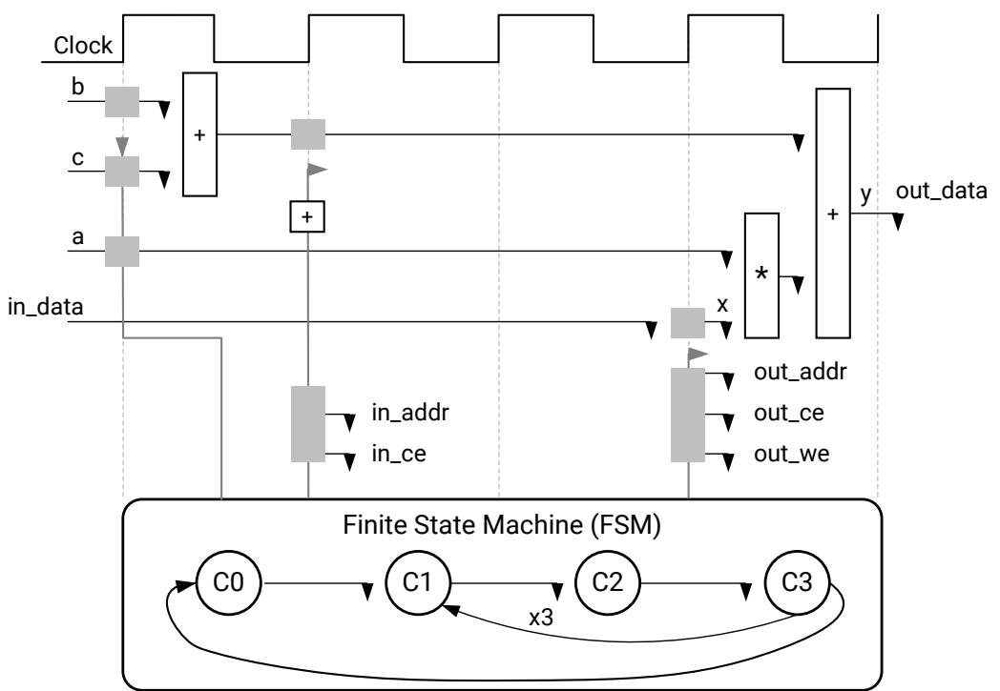
此代码示例执行与上例相同的操作，但在 for 循环内执行，且两个函数参数为数组。调度代码时，设计执行 for 循环内逻辑三次。高层次综合自动从 C 代码提取控制逻辑并在 RTL 设计中创建 FSM 以排序这些操作。顶层函数参数成为最终 RTL 设计中的端口。char 类型的标量变量映射为标准 8 位数据总线端口。数组参数（如 in 与 out）包含整个数据集合。
高层次综合中，数组默认被综合为块 RAM，但也可有其他选项，如 FIFO、分布式 RAM 与单个寄存器。在顶层函数中使用数组作为参数时，高层次综合假定块 RAM 在顶层函数外部，并自动创建端口以访问设计外部的块 RAM，如数据端口、地址端口及任何所需的片选或写使能信号。
FSM 控制寄存器何时存储数据并控制任何 I/O 控制信号的状态。FSM 从状态 C0 开始。下一时钟进入状态 C1，然后 C2，然后 C3。它返回 C1（与 C2、C3）共三次后返回 C0。
注意：这密切类似 C 代码 for 循环中的控制结构。完整状态序列为：C0，{C1, C2, C3}，{C1, C2, C3}，{C1, C2, C3}，返回 C0。
设计只需加 b 与 c 一次。高层次综合将操作移出 for 循环到状态 C0。每次设计进入 C3，复用加法结果。
设计从 in 读取数据并存入 x。FSM 在状态 C1 生成第一个元素的地址。此外，在 C1 中，加法器递增以跟踪设计须在 C1、C2、C3 间迭代多少次。在 C2，块 RAM 返回 in 的数据并存为变量 x。
高层次综合从端口 a 读取数据与其他值执行计算并生成第一个 y 输出。FSM 确保生成正确地址与控制信号以将此值存到块外。设计然后返回 C1 从数组/块 RAM in 读取下一值。此过程持续直到所有输出写入。设计然后返回 C0 读取 b 与 c 的下一值以再次开始过程。
性能指标示例🔗
下图展示了上例代码的完整周期逐周期执行，包括每时钟周期的状态、读操作、计算操作与写操作。
图 57：延迟与启动间隔示例
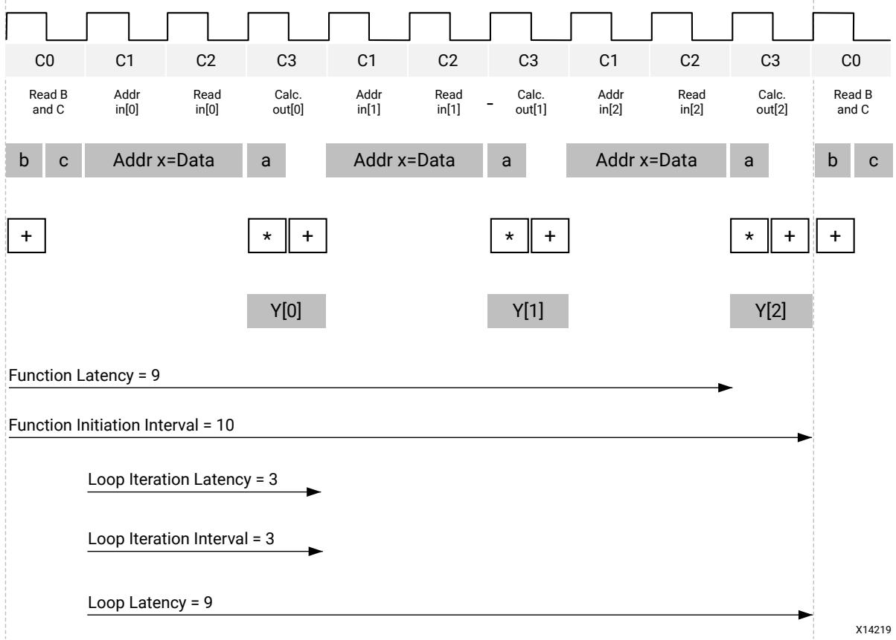
此例的性能指标如下：
- 延迟：函数输出所有值需 9 个时钟周期。
- 注意：当输出为数组时，延迟测量到最后一个数组值输出。
- 启动间隔（II）：II 为 10，意味着函数需 10 个时钟周期才能启动新一轮输入读取并开始处理下一组输入数据。
- 注意：函数一次完整执行的时间称为一次事务。此例中，函数需 11 个时钟周期才能接受下一事务的数据。
- 循环迭代延迟：每次循环迭代延迟为 3 个时钟周期。
- 循环 II：间隔为 3。
- 循环延迟：延迟为 9 个时钟周期。
优化逻辑🔗
推断移位寄存器🔗
Vitis HLS 遇到以下代码时会推断移位寄存器：
int A[N]; // 这将被替换为移位寄存器
for(...) {
Vitis HLS 流程步骤🔗
本部分包含以下章节：
- 启动 Vitis 统一 IDE
- 创建 HLS 组件
- 运行 C 仿真
- 运行 C 综合
- 运行 C/RTL 协同仿真
- 打包 RTL 设计
- 运行实现
- 优化 HLS 项目
- 从命令行创建 HLS 组件
启动 Vitis 统一 IDE🔗
提示：AMD Vitis™ 统一 IDE 应用随 Vitis 软件平台安装，无需额外安装。有关安装与启动 Vitis 统一 IDE 的更多信息，请参阅 Embedded Design Development Using Vitis (UG1701)。
- 使用以下命令设置 Vitis 软件平台环境：
source <Vitis_Installation_Directory>/settings64.sh
- 使用以下命令启动新一代 Vitis 统一 IDE：
vitis -w <workspace>
其中 <workspace> 表示容纳 HLS 组件元素或其他设计项目的文件夹。工作区用于将组成一个或多个设计的源文件与数据文件分组在一起，并存储该工作区的工具配置。
提示：也可从 Windows 桌面双击应用图标启动 Vitis 统一 IDE 处理 HLS 组件。
Vitis 统一 IDE 打开后显示欢迎屏幕，如下图所示。
图 79：欢迎屏幕
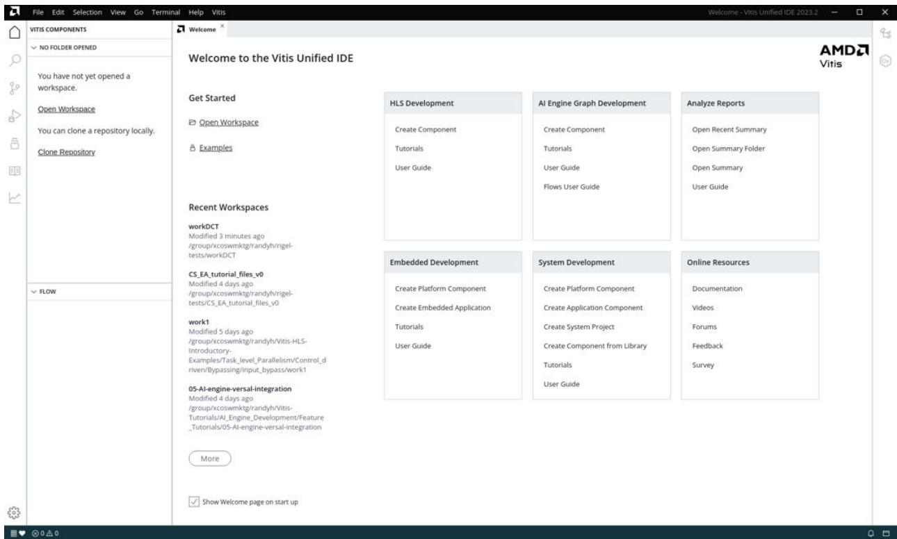
在 HLS Development 下，您有以下选项：
- Create Component：启动 Create HLS Component 向导创建新组件。更多信息请参阅"构建与运行 HLS 组件"。
- Create Component from Library：从库函数创建新 HLS 组件。
- Tutorials：打开浏览器指向 GitHub 上的 Vitis-HLS-Introductory-Examples。见"教程与示例"。
- User Guide：在浏览器中打开本文档。
可看到工具内还有其他命令与功能块。在 Online Resources 下，可找到帮助使用工具的文档与教程。
若先前启动过 Vitis 统一 IDE，可加载 Recent Workspaces 下列出的先前工作区之一。也可在 File 菜单下查看其他可用选项。
Vitis 统一 IDE 的特性🔗
新 AMD Vitis™ 统一 IDE 提供许多新特性，简述如下：
图 80：Vitis 统一 IDE
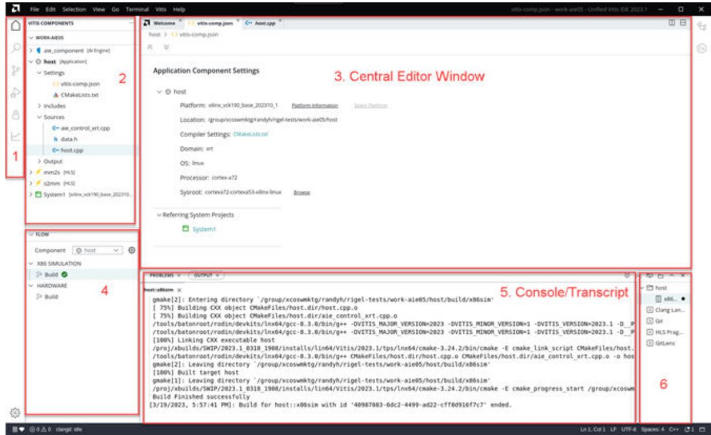
- 屏幕左侧的工具栏提供对工具主要功能的便捷访问：Vitis Component Explorer、搜索功能、源代码控制、调试视图、示例与分析视图。
- Vitis Component Explorer 用于查看工作区的虚拟层次。该视图显示的工作区结构有助于理解组件或项目的不同元素，如磁盘上不存在的 Sources 与 Outputs 文件夹。
- 中央编辑器窗口用于编辑组件、配置与源文件。
- Flow Navigator 显示活动组件的设计流程。不同组件有不同工作流，活动组件的工作流显示在 Flow Navigator 中。可在 Flow Navigator 中选择组件或在 Component Explorer 中选择以指定活动组件。
- Console/Terminal 区域显示工具的输出记录，其他窗口（如 Terminal 窗口与 Pipeline 视图）也位于此处。终端窗口显示工作区的文件夹并可用于对内容运行脚本。
- Index 显示会话期间运行的各构建步骤的记录列表，允许重新打开先前关闭的进程记录。
使用流程导航器🔗
对于 Vitis 统一 IDE 中的 HLS 组件，Flow Navigator 是流程表示，流程中每步由可启动以推进流程的动作表示。每步完成后，所有报告与报告查看器也可通过 Flow Navigator 获得。
图 81：Flow Navigator
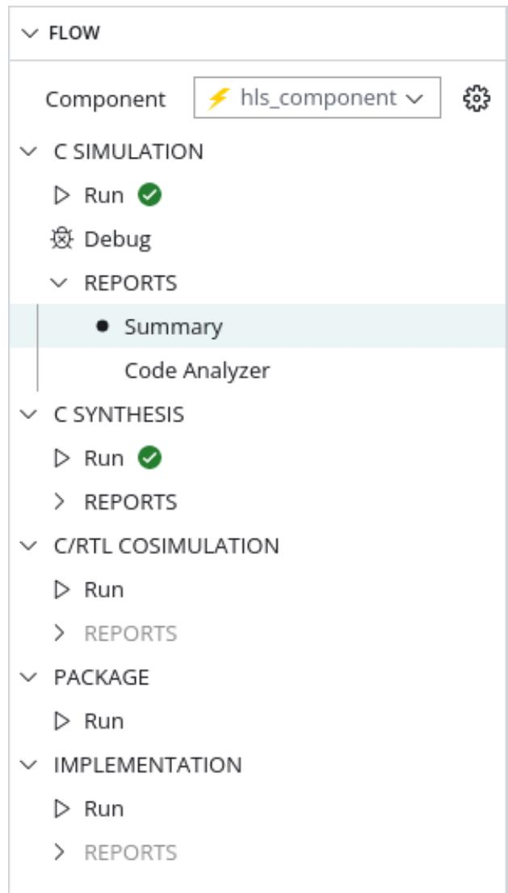
HLS 组件的流程步骤包括：
- C SIMULATION：使用指定源代码与测试平台及任何提供的输入数据运行 C 仿真，详见"运行 C 仿真"。
- C SYNTHESIS：打开 C Synthesis 对话框，综合运行后列出可用报告，详见"运行 C 综合"。
- C/RTL CO-SIMULATION：打开 C/RTL Cosimulation 对话框，仿真运行后列出可用报告，详见"运行 C/RTL 协同仿真"。
- PACKAGE：生成 Vivado IP（.zip）或 Vitis Kernel（.xo）并从综合的 RTL 设计导出，详见"打包 RTL 设计"。
- IMPLEMENTATION：运行 Vivado 综合与实现以生成更详细的利用率与时序报告，详见"运行实现"。
Flow Navigator 还有若干功能帮助查看关联文件与设计状态。如上图所示，Open Settings 命令在 Component 菜单及设计流程中每个流程步骤旁可用。在 Component 旁选择 Open Settings 打开组件的 vitis-comp.json 文件。在流程步骤旁选择它打开 Config File Editor。
可在 Flow Navigator 中使用 Cancel Run 命令取消运行中的进程。此命令默认隐藏，将鼠标悬停在运行中的步骤上即显示该命令。
当某些步骤未完成或由于设计源或关联文件更改而需重新运行时，Flow Navigator 显示警告标志。悬停在警告上会显示指示可能问题的消息。
构建与运行 HLS 组件🔗
AMD Vitis™ 统一 IDE 与 v++ 通用命令行提供使用自底向上设计技术创建 HLS 组件的能力，确保组件在与系统设计中其他元素集成前满足设计要求。在 HLS 组件中，工具将 C/C++ 函数综合为 RTL 代码，以在 AMD Versal™ 自适应 SoC、AMD Zynq™ MPSoC 或 AMD FPGA 器件的可编程逻辑（PL）区域中实现。
HLS 组件可用于开发并导出：
- Vivado IP：使用 Vivado Design Suite 与嵌入式软件开发流程集成到硬件设计中，详见 Vitis Unified Software Platform Documentation: Embedded Software Development (UG1400)。
- Vitis 内核：用于异构计算系统与数据中心应用加速，详见 Embedded Design Development Using Vitis (UG1701)。
以下是 C++ 函数开发的步骤：
- 基于"设计原则"架构 C/C++ 算法
- 用 C 测试平台验证源代码逻辑（C 仿真）
- 从源代码生成 RTL（C 综合）
- 用 C 测试平台与 RTL 逻辑仿真验证生成的 RTL 模块（C/RTL 协同仿真）
- 审阅并分析 HLS 综合报告与协同仿真报告（分析）
- 重复上述步骤直到达到性能目标
图 82：Vitis HLS 开发流程
HLS 组件基于目标流程、默认工具配置、配置命令及您为设计指定的任何优化 pragma 或指令实现设计。以下各节描述创建与构建 HLS 组件。
创建 HLS 组件🔗
在 Vitis 统一 IDE 中有多种方式创建 HLS 组件。以下步骤描述推荐方法。
提示：本节介绍 Vitis IDE 中的 HLS 组件。命令行方法请参阅"从命令行创建 HLS 组件"。
- 打开 Vitis IDE，从主菜单选择 File → New Component → HLS。
提示：也可在欢迎页面选择 New Component，或在 Explorer 视图中右键菜单中选择。
- 这将打开 Create HLS Component 向导的 Choose Name and Location 页面，如下图所示。
图 83：创建 HLS 组件 — 名称与位置
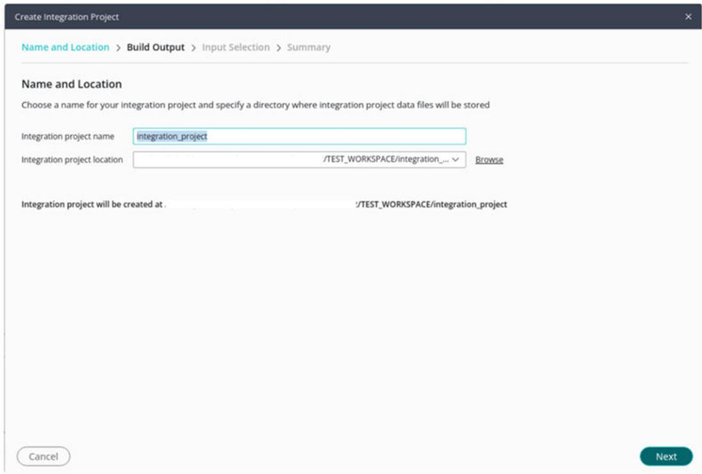
输入 Component name 与 Component location 并选择 Next。
- 这将打开向导的 Configuration File 页面，如下图所示。HLS 组件配置文件包含用于组件综合、仿真与导出的命令与指令。
图 84：创建 HLS 组件 — 配置文件
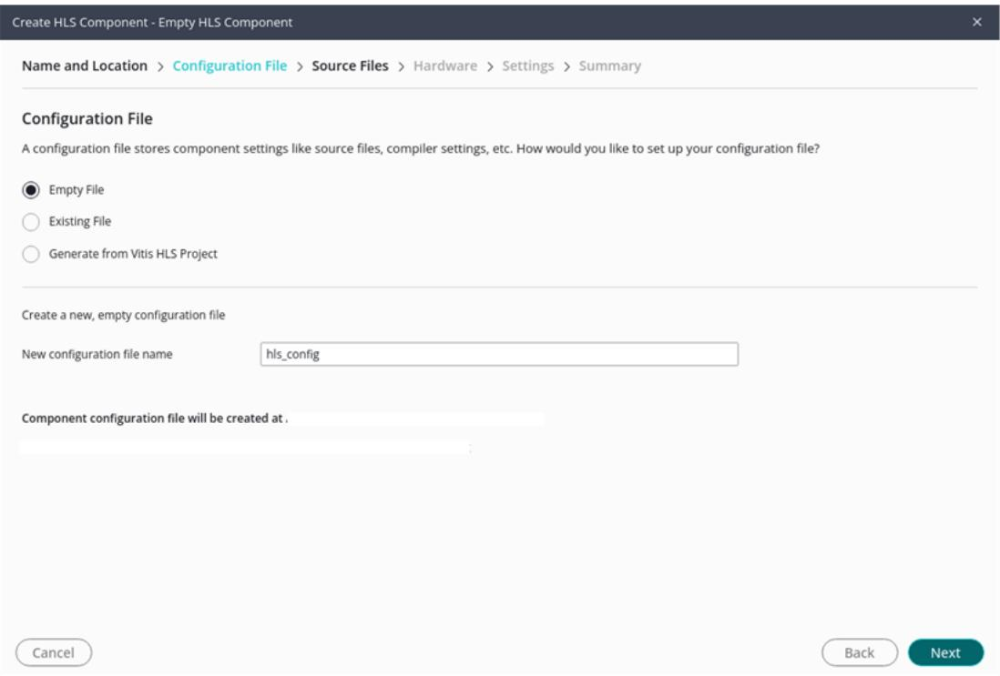
Create HLS Component 向导的 Configuration File 页面提供三种向组件添加配置文件的方式：
- Empty File：指定创建新的空配置文件，组件创建后填充，详见"定义 HLS 配置文件"。选择此选项可在 New configuration file name 字段指定名称。
- Existing File：指定使用现有配置文件。选择此选项可在 File 字段输入路径与名称，或选择 Browse 定位文件。
- Generate from Vitis HLS Project：此选项从现有 Vitis HLS 项目 hls.app 文件生成新配置文件。工具让您在项目内标识 hls.app 文件，并为从 hls.app 文件生成的配置文件输入 New configuration file name。
选择向 HLS 组件添加配置文件的方法，并按需指定名称或文件。选择 Next 进入 Source Files。
- 向导的 Source Files 页面打开，如下图所示。
图 85：创建 HLS 组件 — 源文件
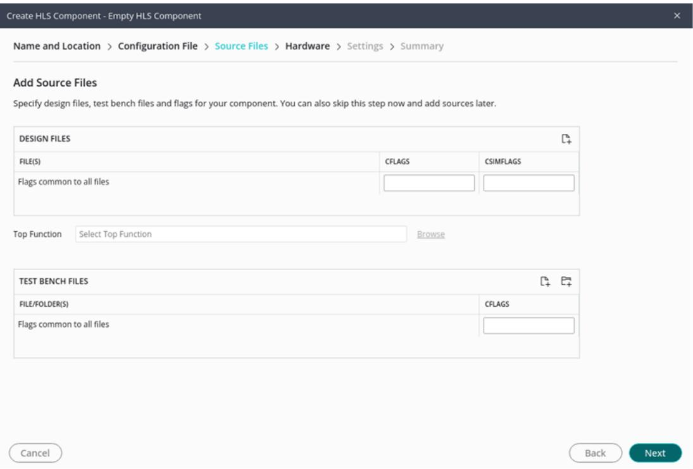
在 Design Files 下可选择 Add files 选择设计的主源文件，或按需添加多个文件。添加一个或多个源文件后，可标识 Top Function——即要综合为 HLS 组件顶层函数的函数。顶层函数调用的任何函数也将被综合到 RTL 中。
在 Test Bench Files 下可选择 Add files 或 Add folders 添加包含 HLS 组件测试平台与关联文件的文件。
对设计文件与测试平台文件都可添加 CFLAGS 与 CSIMFLAGS 以指定编译与仿真期间使用的指令。可为所有文件或每个类别的特定文件指定指令。添加文件、文件夹与指令后，选择 Next 继续。
- 向导的 Select Part 页面打开，如下图所示。
图 86：创建 HLS 组件 — Part
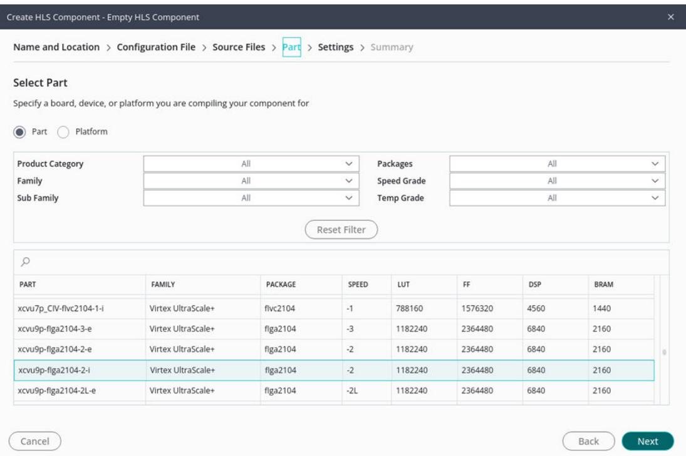
为 HLS 组件选择 Part 或 Platform，选择 Next 继续。
提示：创建 HLS 组件时若选择 Platform，Vitis 统一 IDE 会从指定平台提取 part 并添加到配置文件。
- 显示向导的 Settings 页面，如下图所示。
图 87：空 HLS 组件
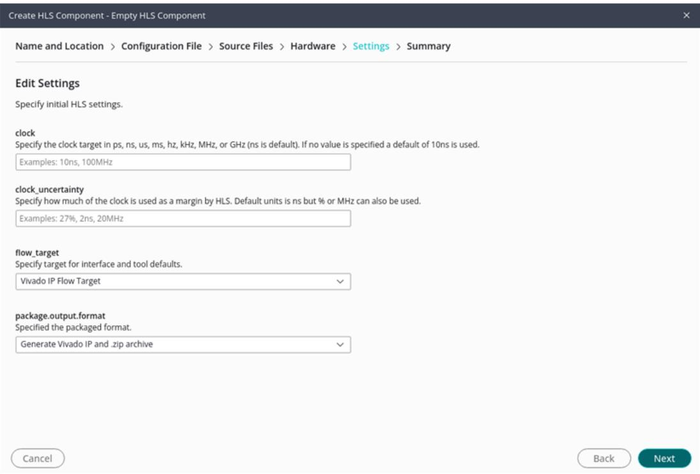
Settings 页面允许为设计指定时钟周期或频率，以及时钟不确定度。工具默认时钟为 10ns 周期（或 100MHz），时钟不确定度为 27%，详见"指定时钟频率"。
Settings 页面还允许指定 HLS 组件构建过程的 flow_target——生成 Vivado IP 或 Vitis 内核，详见"目标流程概述"。Vivado IP 与 Vitis 内核的接口要求不同，详见"HLS 设计的接口"。默认 flow_target 为 Vivado IP 流程。
flow_target 下方还可指定 package.output.format，工具打包设计时生成。默认输出格式为 Vivado IP，生成 .zip 文件添加到 IP 目录，让您在其他设计中使用 HLS 生成的 RTL 设计。
注意：选择 Vitis flow_target 不会自动将输出格式更改为 Vitis 内核。默认仍为 Vivado IP，但可按需手动更改输出格式。
请记住，HLS 组件使用自底向上设计流程，只生成 RTL 输出，直到您按"打包 RTL 设计"所述打包输出。自底向上流程让您在设计挑战中摸索时开发多个设计迭代，只在设计就绪时打包输出。此方法每次运行综合或仿真时都节省大量时间。
选择 Next 进入 Summary 页面。
- Summary 页面反映先前页面的选择。审阅摘要并选择 Finish 创建 HLS 组件，或选择 Back 返回先前页面更改选择。
创建 HLS 组件后，组件的 vitis-comp.json 文件在中央编辑器窗口打开，HLS 组件在 Flow Navigator 中变为活动状态，如下图所示。
提示：打开多个 HLS 组件时，组件名出现在文件名旁的标签上以帮助区分不同组件。
图 88：HLS 组件 — vitis-comp.json
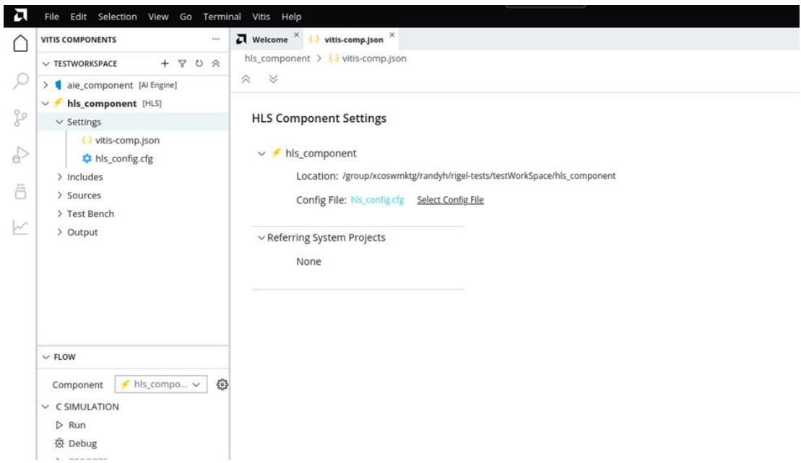
创建后，HLS 组件成为 Flow Navigator 中的活动组件，或可选择 Component 使其成为工具中的活动组件。当 HLS 组件为活动组件时，Flow Navigator 启用运行 C Simulation、C Synthesis、C/RTL Co-simulation、Package 与 Implementation，如下图所示。
图 89：HLS 组件 — Flow Navigator
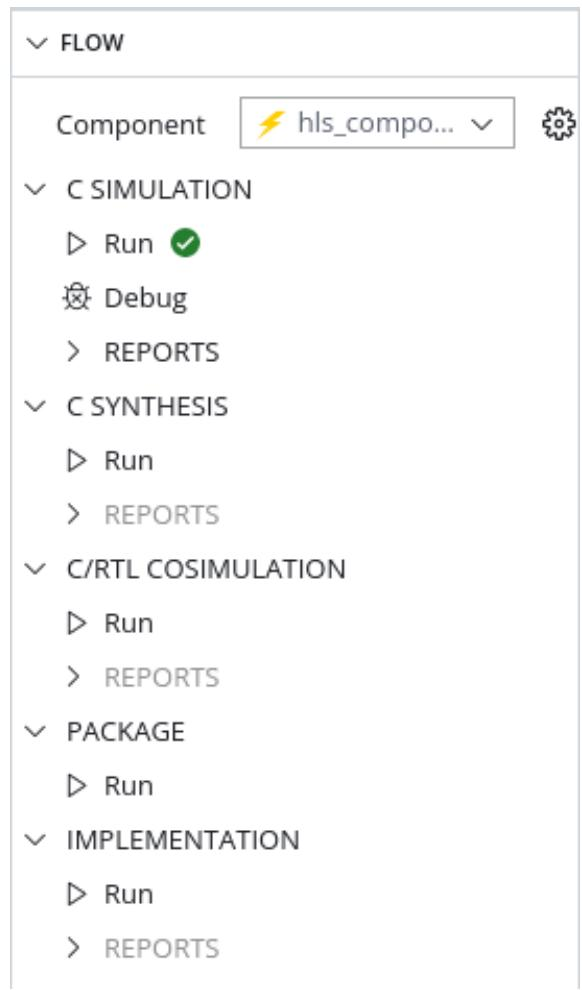
但要管理这些步骤的动作，您需要编辑 HLS 配置文件以达成设计目标，如下所述。
目标流程概述🔗
HLS 组件 destined 到 Vivado IP 流程或 Vitis Kernel 流程。HLS 组件基于目标流程、默认工具配置、设计约束及您指定的任何优化 pragma 或指令制作。您可使用优化指令修改并控制内部逻辑与 I/O 端口的实现，覆盖默认行为。
Vivado IP 流程🔗
在 Create HLS Component 向导的 Settings 页面选择 Vivado IP Flow，或在 HLS 配置文件中指定 flow_target=vivado 时，您配置工具生成用于 Vivado Design Suite 的 RTL 文件，与其他 RTL 文件及 Vivado IP 一起使用，以及用于软件与硬件交互的软件应用。
HLS IP 可在 AMD Versal™ 自适应 SoC、AMD Zynq™ MPSoC 或 AMD FPGA 器件的可编程逻辑（PL）区域中实现。IP 生成时带有器件驱动，使 PL 可与嵌入式软件应用集成以管理与运行硬件功能，详见 Vitis Embedded Software Development Flow Documentation (UG1400)。
Vivado IP 流程在设计选择上比 Vitis 内核流程提供更大灵活性，但也把 IP 的集成与管理留给您。Vivado IP 流程可支持多种接口规范与数据传输协议，但有为函数参数分配的默认接口，详见"Vivado IP 流程的接口"。也可使用 INTERFACE pragma 命令手动为函数参数分配接口规范来覆盖默认设置，以满足 Vivado 设计需求。
Vitis Kernel 流程🔗
在 Create HLS Component 向导的 Settings 页面选择 Vitis Kernel Flow，或在 HLS 配置文件中指定 flow_target=vitis 时，您配置工具生成适合 Vitis 开发环境与 Xilinx 运行时（XRT）的 RTL 设计。Vitis 开发流程可用于 AMD Versal™ 自适应 SoC、AMD Zynq™ MPSoC 器件异构计算系统的嵌入式系统设计，或运行于 Alveo 加速卡的数据中心应用加速，详见 Data Center Acceleration using Vitis (UG1700)。Vitis 开发流程比 Vivado IP 流程更具限制性，因为 HLS 工具产生的 RTL 设计要求必须满足平台与 Xilinx 运行时（XRT）的特定要求。
在 IDE 中指定 Vitis Kernel Flow 时，工具使用 AXI 标准实现接口端口，详见"Vitis 内核流程的接口"。若代码中无现有 INTERFACE pragma 或指令，则默认应用以下接口协议：
- AXI4-Lite 接口（s_axilite）分配给标量参数、数组控制信号及软件函数返回值。
- AXI4 Master 接口（m_axi）分配给 C/C++ 函数的指针与数组参数。
- Vitis HLS 尽可能自动推断 BURST 事务以聚合存储访问，最大化吞吐带宽和/或最小化延迟。
- 使用 hls::stream 数据类型定义软件函数参数意味着 AXI4-Stream（axis）端口。
Vivado/Vitis 流程的默认设置🔗
工具的默认设置在 Vivado IP 流程与 Vitis Kernel 流程间不同。下表显示两种流程的默认设置。

提示：除默认配置外，工具还有支持一种流程但不支持另一种的特性，或在两种流程间配置不同。这些差异在本文档中各处突出标明。
表 23：默认配置
| 配置 | Vivado | Vitis |
|---|---|---|
| clock_uncertainty | 27% | 27% |
| syn.compile.pipeline_loops | 64 | 64 |
| syn.compile.name_max_length | 255 | 255 |
| vivado.optimization_level | 0 | 0 |
| vivado.phys_opt | none | none |
| syn.rtl.module_auto_prefix | true | true |
| syn.rtl.register_reset_num | 0 | 3 |
| syn.schedule.enable_dsp_full_reg | true | true |
| syn.directive.interface | IP 模式 | Kernel 模式 |
| syn.interface.m_axi_addr64 | true | true |
| syn.interface.m_axi_latency | 0 | 64 |
| syn.interface.m_axi_alignment_byte_size | 1 | 64 |
| syn.interface.m_axi_max_widen_bitwidth | 0 | 512 |
| syn.interface.default_slave_interface | s_axilite | s_axilite |
| syn.interface.m_axi_offset | slave | slave |
流程打包设置🔗
Vitis HLS 命令参考🔗
本部分包含以下章节：
- vitis、v++ 与 vitis-run 命令
- HLS 配置文件命令
- HLS 配置选项
- HLS 优化指令
- HLS pragma 与指令
- HLS Tcl 命令
- 配置命令
- 项目命令
- HLS 优化指令
vitis、v++ 与 vitis-run 命令🔗
vitis 命令🔗
使用 vitis 命令启动 Vitis 统一 IDE，语法如下：
vitis -w <workspace>
使用 Vitis 工具时还可用多种其他模式。可使用 -h 或 --help 显示 vitis 命令的受支持模式。
vitis -h
Syntax: vitis [-a | -w | -i | -s | -h | -v | --wait]
Options:
Launches New Vitis IDE (default option).
从 Vitis HLS 迁移到 Vitis 统一 IDE🔗
Vitis 统一 IDE 为创建异构系统设计或数据中心加速应用的不同组件提供通用工具。这些组件包括从 C/C++ 源代码生成的 HLS 组件。它包含用于编译与链接系统设计的 v++ 与 vitis-run 通用命令行。Vitis 统一 IDE 提供多种将现有 Vitis HLS 经典项目迁移到新工具的方式，包括：
- 从现有 Vitis HLS 经典项目创建 HLS 组件
- 继续使用现有 Tcl 脚本
- 转换为使用 Python 脚本
1. 从现有 Vitis HLS 项目创建 HLS 组件🔗
如"创建 HLS 组件"所述，可从现有 Vitis HLS 经典项目指定 hls.app 文件生成新 HLS 配置文件。工具让您在项目内标识 hls.app 文件，并为从 hls.app 文件生成的配置文件输入 New configuration file name。
提示：若项目包含多个 solution，文件标识这些 solution，HLS Component Creation 向导会提示您指定应导入哪个可用 solution。这允许为项目中每个 solution 创建独立 HLS 组件。
2. 继续使用现有 Tcl 脚本🔗
要继续使用现有 Tcl 脚本，将 open_project 替换为 open_component。移除 open_solution Tcl 命令，因为 Vitis 统一 IDE 中不需要，如下所示。
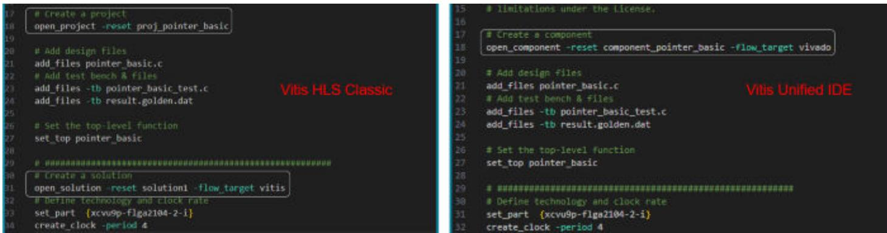
使用 open_component 后，创建的输出结构与 Vitis 统一 IDE 兼容，运行 Tcl 脚本的目录是可在 Vitis 统一 IDE 中打开的工作区。HLS 报告与生成的 RTL 文件现在位于组件目录下。可使用 vitis-run 运行 Tcl 脚本，如下所示。
vitis-run --mode hls --tcl <tcl_script>.tcl
3. 转换为使用 Python 脚本🔗
Vitis 统一 IDE 支持 Python API 创建与管理包括 HLS 组件在内的各种组件。可使用包含这些 API 的 Python 脚本进行 HLS 组件开发与执行。HLS 组件配置可在配置文件中（使用上述 write_ini 生成）或在 Python 脚本内以键值对指定。可使用 vitis 运行 Python 脚本，如下所示。
vitis -s <python_script>.py
使用 write_ini 创建 HLS 配置文件🔗
vitis-run 可执行文件能使用 write_ini 命令从现有 Tcl 脚本创建配置文件。这可通过在 Tcl 脚本中包含 write_ini 命令或通过 vitis-run 启动 HLS 交互式 Tcl shell（如下所示）并指定 write_ini 命令导出用于创建项目或特定 solution 的 Tcl 命令来完成。从现有项目或 solution 创建 HLS 配置文件后，可在 Vitis 统一 IDE 中使用这些配置文件与指定源文件创建 HLS 组件。
$ vitis-run --mode hls --itcl
HLS> open_project <project_name>
HLS> write_ini <config_file_name>
此外，对于偏好使用脚本流程进行 Vitis 统一 IDE HLS 开发的用户，Vitis-HLS-Introductory-Examples 仓库 Migration 目录中的示例展示了两种实现方式。
从 Vivado HLS 迁移到 Vitis HLS🔗
AMD Vivado™ HLS 是上一代 HLS 解决方案，其最后一个正式版本为 2020.1。AMD Vitis™ HLS 是 AMD 的下一代 HLS 解决方案，相对旧版 Vivado HLS 技术有若干改进。首先，AMD Vitis™ HLS 拥有新编译器，使用更新版本的 LLVM 编译器标准，支持 C/C++ 11/14 编译/仿真。迁移用某个 Vivado HLS 版本实现的内核模块或 IP 时，理解 HLS 版本间差异及这些差异对设计的影响至关重要。
这些 HLS 版本间的关键差异可分为：
- 关键行为差异
废弃与不支持的功能🔗
这些废弃命令将在未来版本中停用，不推荐使用：
表 85：Vitis HLS 中废弃的 Vivado HLS 命令
| 类型 | 命令 | 选项 | Vitis HLS | 详情 |
|---|---|---|---|---|
| config | config-interface | -m_axi_max_data_size | 废弃 | |
| config | config-interface | -m_axi_min_data_size | 废弃 | |
| config | config-interface | -m_axi_alignment_byte_size | 废弃 | |
| config | config-interface | -m_axi_offset=slave | 不支持 | 现由 -m_axi_offset=direct 与 -default_slave_interface=s_axilite 组合处理 |
| config | config-interface | -expose_global | 不支持 | Vitis HLS 不支持将全局变量作为 IP 或内核顶层端口暴露 |
| config | config-interface | -trim_dangling-port | 不支持 | |
| config | config-array-partition | -auto-promotion_threshold | 废弃 | |
| config | config-array-partition | -auto-partition_threshold | 废弃 | 已重命名为 -complete_threshold |
| config | config-array-partition | -scalarize_all | 不支持 | |
| config | config-array-partition | -throughput_driven | 不支持 | |
| config | config-array-partition | -maximum_size | 不支持 | |
| config | config-array-partition | -include_extern-globals | 不支持 | |
| config | config-array-partition | -include-ports | 不支持 | |
| config | config-schedule | 除 -enable_dsp_fill_reg 外所有选项 | 废弃 | |
| config | config-bind | *（所有选项） | 废弃 | |
| config | config-rtl | -encoding | 废弃 | FSM 编码为 one-hot |
| config | config-sdx | *（所有选项） | 废弃 | |
| config | config-flow | *（所有选项） | 废弃 | |
| config | config-dataflow | -disable_start_propagation | 废弃 | |
| config | config-rtl | -auto-prefix | 废弃 | 由 config-rtl-module_prefix 替代 |
| config | config-rtl | -prefix | 废弃 | 由 config-rtl-module-prefix 替代 |
| config | config-rtl | -m_axi_conservative_mode | 废弃 | 使用 config_interface -m_axi_conservative_mode |
| directive/pragma | set_directive-pipeline | -enable_flush | 废弃 | |
| directive/pragma | CLOCK | * | 不支持 | |
| directive/pragma | DATA_PACK | * | 不支持 | 使用 AGGREGATE pragma 或指令，需要时使用 attribute((packed(X))) |
| directive/pragma | INLINE | -region | 废弃 | |
| directive/pragma | INTERFACE | -mode ap-bus | 不支持 | 改用 m_axi |
| directive/pragma | INTERFACE | -mode ap_stable | 废弃 | 改用 STABLE pragma 或指令 |
| directive/pragma | ARRAY_MAP | * | 不支持 | |
| directive/pragma | RESOURCE | * | 废弃 | 由 BIND_OP 与 BIND_STORAGE pragma/指令替代。顶层函数参数使用带 storage_type 选项的 INTERFACE pragma/指令 |
| directive/pragma | SHARED | * | 废弃 | SHARED pragma/指令已移至 STREAM pragma/指令的 type=shared 选项 |
| directive/pragma | STREAM | -dim | 不支持 | |
| directive/pragma | STREAM | -off | 废弃 | STREAM off 已变为 STREAM type=pipo |
| project | csim_design | -clang-sanitizer | 添加/重命名 | |
| project | export_design | -use_netlist | 废弃 | 由 export_design -format ip -catalog 替代 |
| project | export_design | -xo | 废弃 | 由 export_design -format xo 替代 |
| project | add_files | 不支持 | Vitis HLS 不支持 System-C 文件 | |
| config | config-export | -disable_deadlockdetection | 废弃 | 由 config-export -deadlock_detection_sim 替代 |
注： 1. 废弃：会发出未来版本中 pragma 将停用的警告消息。 2. 不支持：Vitis HLS 会以有效消息报错。 3. *：命令中所有选项。
以下库已废弃（建议使用 Vitis Solver 等替代）：
表 86：废弃库
- 线性代数库（hls_linear_algebra.h 等）：cholesky、cholesky_inverse、matrix_multiply、qrf、qr_inverse、svd 等，建议使用 Vitis Solver 中的 potrf、pomatrixinverse、geqrf、gesvdj 等。
- DSP 库（hls_dsp.h 等）：atan2、sqrt、awgn、cmpy、convolution_encoder、viterbi_decoder、nco 等，建议使用 HLS Math 中的对应函数。
不支持的功能🔗
Pragma🔗
部分 Vivado HLS 中的 pragma 在 Vitis HLS 中不再支持。
HLS 视频库🔗
Vitis HLS 不再支持旧版 HLS 视频库，建议使用 Vitis 视频库。
C 任意精度类型🔗
Vitis HLS 推荐使用 C++ 任意精度类型（ap_int/ap_fixed），不再支持 C 任意精度类型。
指令/运算符说明🔗
下表提供 HLS 编译器中使用的某些运算符的定义。标准 llvm 指令可在此查找：https://llvm.org/docs/LangRef.html#instruction-reference。
| 名称 | 说明 |
|---|---|
| FSqrt | 计算 float 的平方根 |
| FRSqrt | 计算 float 平方根的倒数 |
| FRecip | 计算 float 的倒数 |
| FLog | 计算 float 的对数 |
| FExp | 计算 float 的指数 |
| DSqrt | 计算 double 的平方根 |
| DRSqrt | 计算 double 平方根的倒数 |
| DRecip | 计算 double 的倒数 |
| DLog | 计算 double 的对数 |
| DExp | 计算 double 的指数 |
| BlackBox | 实例化 blackbox 函数 |
| BitSelect | 选择变量的单个位 |
| BitSet | 设置变量的单个位 |
| PartSelect | 选择变量的位范围 |
| PartSet | 设置变量的位范围 |
| BitConcatenate | 拼接两个变量 |
| XorReduce | 计算变量的 XOR 归约（由 ap_(u)int 类型中的 xor_reduce() 定义） |
| XnorReduce | 计算变量的 XNOR 归约 |
| AndReduce | 计算变量的 AND 归约 |
| NandReduce | 计算变量的 NAND 归约 |
| OrReduce | 计算变量的 OR 归约 |
| NorReduce | 计算变量的 NOR 归约 |
| Read | 从接口读取值 |
| Write | 向接口写入值 |
| NbRead | 从接口非阻塞读 |
| NbWrite | 向接口非阻塞写 |
| ReadReq | 向总线发送读请求，仅 m_axi 可用 |
| WriteReq | 向总线发送写请求，仅 m_axi 可用 |
| WriteResp | 从总线接收写响应，仅 m_axi |
| MemShiftRead | 移位 SRL 原语的寄存器 |
| Mux | 从多个值中选择一个值 |
附加资源与法律声明🔗
查找附加文档🔗
技术信息门户🔗
AMD 技术信息门户是一个在线工具，提供使用浏览器对文档进行稳健搜索与导航的功能。要访问技术信息门户，请前往 https://docs.amd.com。
文档导航器🔗
文档导航器（DocNav）是一个已安装工具，提供对 AMD 自适应计算文档、视频与支持资源的访问，可过滤与搜索以查找信息。要打开 DocNav，请执行以下操作：
- 在 AMD Vivado™ IDE 中，选择 Help → Documentation and Tutorials。
- 在 Windows 上，点击开始按钮并选择 AMD Adaptive SoC and FPGA Tools → DocNav。
- 在 Linux 命令提示符下，输入 docnav。
注意：有关 DocNav 的更多信息，请参阅 Documentation Navigator User Guide (UG968)。
Design Hubs🔗
AMD Design Hubs 提供按设计任务与其他主题组织的文档链接，可用于学习关键概念与解答常见问题。要访问 Design Hubs：
- 在 DocNav 中，点击 Design Hubs View 标签。
- 前往 Design Hubs 网页。
支持资源🔗
如答案、文档、下载与论坛等支持资源，请参阅 Support。
参考文献🔗
这些文档提供与本指南一起使用的补充材料：
- UltraScale Architecture DSP Slice (UG579)
- Vivado Design Suite User Guide: Logic Simulation (UG900)
- Vivado Design Suite User Guide: Synthesis (UG901)
- Vivado Design Suite User Guide: Implementation (UG904)
- Vivado Design Suite Tcl Command Reference Guide (UG835)
- Introduction to FPGA Design with Vivado High-Level Synthesis (UG998)
- Vivado Design Suite Tutorial: High-Level Synthesis (UG871)
- Vivado Design Suite User Guide: Release Notes, Installation, and Licensing (UG973)
- Floating-Point Operator LogiCORE IP Product Guide (PG060)
- Fast Fourier Transform LogiCORE IP Product Guide (PG109)
本文档为 AMD Vitis™ HLS 用户指南 UG1399 (v2026.1) 的中文翻译版，使用 MinerU 工具从 PDF 提取内容并翻译为中文。翻译过程中在保持技术准确性的前提下进行了适当润色，以便读者更好地理解。如需查阅原文，请访问 AMD 官方文档网站。
HLS pragma 与指令（速查）🔗
下表汇总了 Vitis HLS 中可用的主要 pragma 与指令，便于快速查阅：
| Pragma/指令 | 作用 | 典型用法 |
|---|---|---|
| AGGREGATE | 将结构体所有元素聚合为单一宽向量 | #pragma HLS AGGREGATE variable=<var> compact=bit |
| ALIAS | 定义多指针访问同一 DRAM 缓冲的距离，启用数据依赖分析 | #pragma HLS ALIAS pointer0=<ptr0> pointer1=<ptr1> distance=<N> |
| ALLOCATION | 限制操作、实现或函数的使用数量，强制资源共享 | #pragma HLS ALLOCATION instances=<func> limit=<N> function |
| ARRAY_PARTITION | 将大数组分区为多个更小数组或单个寄存器 | #pragma HLS ARRAY_PARTITION variable=<arr> type=complete |
| ARRAY_RESHAPE | 将数组重塑为更宽字宽，改善块 RAM 访问 | #pragma HLS ARRAY_RESHAPE variable=<arr> type=block factor=2 |
| BIND_OP | 为操作定义特定 RTL 实现 | #pragma HLS BIND_OP variable=<var> op=mul impl=dsp |
| BIND_STORAGE | 为存储元素或存储器定义特定实现 | #pragma HLS BIND_STORAGE variable=<arr> type=RAM_2P |
| CACHE | 为 m_axi 接口添加缓存 | #pragma HLS CACHE variable=<var> depth=<N> |
| DATAFLOW | 启用任务级流水线化，允许函数与循环并发执行 | #pragma HLS dataflow |
| DEPENDENCE | 提供额外信息克服循环携带依赖 | #pragma HLS DEPENDENCE variable=<arr> type=intra dependent=false |
| DISAGGREGATE | 将结构体分解为单个元素 | #pragma HLS disaggregate variable=<var> |
| EXPRESSION_BALANCE | 关闭自动表达式平衡 | #pragma HLS expression_balance off |
| FUNCTION_INSTANTIATE | 对函数特定实例执行有针对性的局部优化 | #pragma HLS FUNCTION_INSTANTIATE variable=<arg> |
| INLINE | 内联函数，移除函数层次 | #pragma HLS INLINE recursive |
| INTERFACE | 指定如何从函数描述创建 RTL 端口 | #pragma HLS INTERFACE mode=m_axi port=<port> |
| LATENCY | 指定最小与最大延迟约束 | #pragma HLS LATENCY min=<m> max=<n> |
| LOOP_FLATTEN | 允许嵌套循环折叠为单一循环 | #pragma HLS LOOP_FLATTEN |
| LOOP_MERGE | 合并连续循环 | #pragma HLS LOOP_MERGE |
| LOOP_TRIPCOUNT | 为变长循环提供迭代次数估计（仅影响报告） | #pragma HLS LOOP_TRIPCOUNT min=<m> max=<n> |
| OCCURRENCE | 指定某位置代码以低于包裹函数或循环的速率执行 | #pragma HLS OCCURRENCE cycle=<n> |
| PERFORMANCE | 为循环指定所需事务间隔 | #pragma HLS performance target_ti=<N> |
| PIPELINE | 通过允许操作重叠执行降低启动间隔 | #pragma HLS PIPELINE II=1 |
| PROTOCOL | 指定协议区域，其中不插入时钟操作 | #pragma HLS protocol |
| RESET | 在特定状态变量上添加或移除复位 | #pragma HLS RESET variable=<var> off |
| STABLE | 表示数据流区域变量可忽略入口/出口同步 | #pragma HLS stable variable=<var> |
| STREAM | 指定数组实现为 FIFO 或 RAM 通道 | #pragma HLS STREAM variable=<arr> depth=2 |
| TOP | 指定任何函数为综合顶层 | #pragma HLS top name=<func> |
| UNROLL | 展开 for 循环创建循环体的多个实例 | #pragma HLS UNROLL factor=2 |
HLS Tcl 命令（速查）🔗
Vitis HLS Tcl 命令分为项目命令与配置命令两类：
项目命令🔗
| 命令 | 说明 |
|---|---|
open_component -name <name> |
打开或创建 HLS 组件 |
add_files -cflags "<flags>" <file> |
添加设计源文件 |
add_files -tb -cflags "<flags>" <file> |
添加测试平台文件 |
set_top <function> |
设置顶层函数 |
open_solution -flow_target <vivado\|vitis> |
打开解决方案（Vitis 统一 IDE 中已不必要） |
set_part <part\|platform> |
设置目标器件或平台 |
create_clock -period <ns> |
设置时钟周期 |
csim_design |
运行 C 仿真 |
csynth_design |
运行 C 综合 |
cosim_design |
运行 C/RTL 协同仿真 |
export_design -format <xo\|ip> |
导出为 Vitis 内核（.xo）或 Vivado IP（.zip） |
write_ini <config_file> |
将项目设置写入配置文件 |
配置命令🔗
配置命令以 config_ 开头，用于设置工具行为：
| 命令 | 说明 |
|---|---|
config_compile |
编译选项，如自动循环流水线化、不安全数学优化 |
config_array_partition |
数组分区配置 |
config_bind |
绑定配置 |
config_dataflow |
数据流配置，如默认通道类型、FIFO 深度 |
config_interface |
接口配置，如 m_axi 选项、默认从接口 |
config_export |
导出配置 |
config_rtl |
RTL 输出配置，如模块前缀、复位 |
config_schedule |
调度配置 |
config_storage |
存储配置 |
Vitis HLS 库参考（速查）🔗
Vitis HLS 提供以下库以支持高效硬件设计：
任意精度数据类型库🔗
- ap_int.h：C++ 任意精度整数类型（ap_int
、ap_uint ） - ap_fixed.h：C++ 任意精度定点类型（ap_fixed
- ap_float.h：任意精度浮点库 ap_float
任意精度类型允许设计师精确指定变量位宽，从而最小化硬件资源占用。例如，若变量取值范围为 0~1000，使用 ap_int<10>（10 位）即可，而非默认 int（32 位）。
HLS 数学库🔗
提供与标准 C math.h 兼容的函数，但针对硬件优化：
- 基本运算：sqrt、pow、exp、log、sin、cos、tan
- 反三角函数：asin、acos、atan、atan2
- 双曲函数：sinh、cosh、tanh
- 取整函数：ceil、floor、round、trunc
数学函数的精度与资源占用可通过 syn.op 配置命令控制。
HLS 流库🔗
hls::stream 提供流式数据传输抽象，类似 FIFO 队列：
#include <hls_stream.h>
hls::stream<int> my_stream;
my_stream.write(42); // 写入
int val = my_stream.read(); // 读取
支持阻塞与非阻塞访问、空/满检查。流是数据流优化中任务间通信的主要方式。
HLS 任务库🔗
hls::task 提供数据驱动任务级并行的建模：
#include <hls_task.h>
hls_thread_local hls::task t1(my_function, in_stream, out_stream);
任务始终运行、在其输入流上等待数据，适合纯流式、无控制的设计。
HLS 向量库🔗
hls::vector 提供向量运算模板类，支持在多个样本上并发执行操作：
#include <hls_vector.h>
hls::vector<int, 16> a, b, c;
c = a + b; // 16 个元素并行相加
HLS 拆分/合并库🔗
提供 hls::split 与 hls::merge 通道，用于将数据分配给多个并行任务或汇总多个任务的结果：
hls::split::round_robin：轮询方式拆分hls::split::load_balance：负载均衡方式拆分hls::merge::round_robin：轮询方式合并
HLS 块流库（Stream of Blocks）🔗
hls::stream_of_blocks 提供用户同步的流，支持流式传输数据块（数组），结合了 FIFO 与 PIPO 的优点：
#include <hls_streamofblocks.h>
hls::stream_of_blocks<buf_type> s;
{
hls::write_lock<buf_type> b(s);
b[i] = ...; // 写入块
}
{
hls::read_lock<buf_type> b(s);
... = b[i]; // 读取块
}
HLS IP 库🔗
提供预优化的 IP 核：
- DSP Intrinsics：DSP 块内联函数
- FFT IP 库：快速傅里叶变换
- FIR 滤波器 IP 库：有限脉冲响应滤波器
- DDS IP 库：直接数字合成器
- SRL IP 库：移位寄存器查找表
OpenCV 的使用🔗
Vitis HLS 支持 OpenCV 函数的综合，但需要遵循特定编码风格。建议使用 Vitis 视频库进行视频处理设计。
总结🔗
本中文翻译版涵盖了 AMD Vitis™ HLS 用户指南 UG1399 (v2026.1) 的主要内容，包括：
- 简介与设计原则：高层次综合的优势、Vitis HLS 组件介绍、三种核心范式（生产者-消费者、流式数据、流水线）
- HLS 程序员指南：抽象并行编程模型、循环与数组优化、函数与数据类型、接口设计
- 流程步骤：从 IDE 启动到 C 仿真、C 综合、协同仿真、打包与实现
- 命令参考：vitis/v++ 命令、配置文件命令、pragma 与 Tcl 命令
- 库参考：任意精度类型、数学库、流库、任务库、向量库等
- 迁移指南：从 Vitis HLS 经典项目与 Vivado HLS 迁移
翻译过程中遵循了以下原则：
- 技术准确性优先：保留所有技术术语的准确含义，代码示例保持原样
- 适当润色：在不影响准确性的前提下，对句子结构进行调整以符合中文表达习惯
- 补充说明：在必要时添加简短说明以帮助读者理解复杂概念
- 保留专有名词：AMD、Vitis、Vivado、HLS、FPGA、AXI 等专有名词保留英文
- 结构完整：保留原文的章节结构、图表引用与代码示例
如需查阅完整原文，请访问 AMD 官方文档网站 https://docs.amd.com。
文档信息： - 原文标题：Vitis High-Level Synthesis User Guide - 文档编号：UG1399 - 版本：v2026.1 - 发布日期：2026 年 6 月 23 日 - 翻译工具：MinerU（PDF 提取）+ 人工翻译润色 - 翻译日期：2026 年 7 月